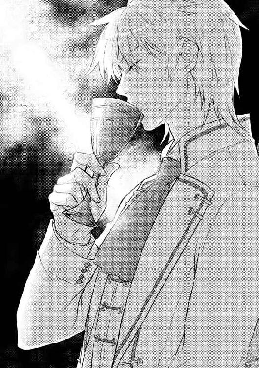

| 薬の罠に気をつけて: 2 (一迅社文庫アイリス) | |
| 宮野 りう | |
| (2015) | |

イラストレーション ◆ ひだかなみ
薬の罠に気をつけて２
一章 戸惑い
蝋燭の火が、ちりりと音を立てて揺れた。
月明かりのない夜。燭台の蝋燭の灯りのみが室内を照らし、あたりはオレンジ色の光に包まれている。ガラス越しの外は暗く、大きな掃出し窓には室内の様子がまるで鏡のように映しだされていた。
窓ガラスにその姿を映していた男は、小さくドアを叩く音に振り返った。ゆっくりと椅子に腰を下ろす。
「ウォーレスか。入れ」
ウォーレスと呼ばれた男は、音も立てずに室内に滑り込む。
「それで？」
「殿下は相変わらずのご様子です。足しげく例の女性のもとへと通われています」
「薬か......。まったく余計なことをしてくれたものだな」
王弟フィオン・アルファードに惚れ薬が盛られるという事件が起こってから、もうすぐふた月が経とうとしていた。
惚れ薬の犯人は逮捕されたものの、その被害者である王弟フィオン・アルファードの様子は以前のまま。薬を服用した直後から見初めた女性への熱は、未だ冷めていないようだ。
「それと、王立研究所では解毒薬の完成も間近との報告が上がっています」
「解毒薬、か」
惚れ薬の影響を消すためのものであるが、それもどこまで効果があるものか。
飴色に輝く椅子に体をあずけ、上質な絹のシャツに身を包んだ男は何かを思案するように顎に手をあてた。
「しかし......犯人逮捕後も殿下のそばに侍るとは、あの娘よほど身の程を知らぬものと見えるな」
たとえそれが王妃や王弟の望みであったとしても、事件の影響を利用しようというのなら、自分たちにとっては邪魔な存在以外の何ものでもない。
「消せ。あれは王弟殿下の足枷にしかならぬ」
「御意に」
主の命令に、男は深く頭を下げた。
＊
自覚をしてしまえば、どうしていいのかわからなくなる。
今までと状況は変わらなくても、同じでなんていられない。
湖を渡る風が木々の葉をさらさらと揺らすと、白いパラソルにかかる木漏れ日がそれを撫でるように動いた。肌に感じる風の心地よさに目を細めると、コレットはキラキラと輝く湖面に視線を向ける。
王都の西に位置するスティルス湖では、夏も本番になろうというこの季節、避暑のために訪れている人も多い。湖には、遠くでボート遊びをしている人もちらほらと見られた。
王都での社交シーズンは収束となってきたが、今度は避暑地としてこの湖のほとりが夏の社交場となっているようだ。社交シーズン以外はマカリスター男爵である父とともに、王都からは遠い男爵領に戻り夏を過ごしていたコレットにとっては、初めての経験である。
湖面から少し視線を上げれば、視界をかすめたそれにコレットの心臓がとくんと跳ねた。
「あら、どうかなさいました？」
急に歩く速度を落としたコレットに、一緒に散策を楽しんでいた王妃ディアナが足を止めた。
はっとしてコレットは視線を戻す。
王妃は歩み寄ると、少し首を傾げて覗き込むようにコレットを見る。
「疲れました？」
「い、いえ。綺麗な景色に目を奪われてしまって......。申し訳ありません」
「謝ることなんてありませんわ。気に入っていただけたのなら、お誘いしたかいがありますもの」
にっこりと笑う王妃につられるように、コレットも微笑んだ。
「足の具合はいかが？ 痛んだりしていません？」
「はい、大丈夫です」
「そう？ でも痛みを感じなくても、まだ怪我をする前と同じというわけにもいきませんでしょう。あまり無理はしないようにね」
「ありがとうございます、王妃さま」
「それにしても......」
小さくため息をつきながら、王妃は続ける。
「先日は本当にごめんなさいね。不肖の義弟がついていながら、あなたにお怪我をさせてしまうなんて」
「いえ、とんでもありません。わたしの方こそご迷惑をおかけしてばかりで、本当に申し訳ありませんでした」
王妃の言葉に、コレットは慌てて首を振った。
コレットの怪我の原因は、この春に王都内で起こったとある事件に端を発している。
それは、王弟であるフィオン・アルファードに惚れ薬が盛られ、一人の令嬢に夢中になってしまったというものである。その時フィオンに見初められてしまったのがコレットだった。
フィオンに好意を寄せ惚れ薬を使った犯人だったが、その効果はまったく関係のなかったコレットに現れてしまったのである。
そのため犯人である令嬢ジュリア・ノーフォークの嫉妬を買うことになり、フィオンとともに出かけた夏至祭の日に犯人によって連れ去られるという事態が起こった。
それがきっかけとなり、惚れ薬を盛った彼女とその協力者である侍女は捕まったのだが、その時コレットは足をひねる怪我をしてしまったのである。
義弟であるフィオンがついていながら怪我をしてしまったコレットへのお詫びもかねて、この夏、スティルス湖畔の王家の別荘へとコレットは招待を受けていた。
今や一男爵令嬢のコレットは、王妃の賓客扱いである。
「本当にその節はご心配をおかけいたしまして申し訳ございませんでした」
「あら、そんなことは気になさらないで。お詫びといっては何ですけれど、この夏を楽しんでいってくださいね」
「はい。ありがとうございます」
夏とはいえ、湖を渡る風はひんやりとしていて心地よく、パラソルをするりとすりぬけコレットの髪を優しく揺らした。
それを受けながら、コレットは先ほど視界に入ってきたものをちらりと見る。
そこに見えるのは、以前招待を受けたことのあるバード公爵家の別荘である。
湖面を隔てた向こう側にあるそれは、距離があるにも関わらず木々の合間からその白い姿をのぞかせていた。
フィオンとつながりのあるその場所を見ているだけで、コレットの胸はドキドキと早鐘を打ち始める。以前にバード公爵家の別荘に招待されたときのことを思い出せば、それだけで頬が熱くなってくるのを止めることができない。
再び何かを気にしているようなコレットのそぶりに、王妃はその視線の先をたどった。
そこにあったものを確認し、にっこりと微笑む。
「フィオンは」
「えっ!?」
自分が考えていた人物の名が急に上げられ、コレットは驚いて振り返った。
コレットは何も訊いていないのに、王妃はにこにこと言葉を続ける。
「フィオンは後から来ますわ。仕事が終わり次第、こちらに向かうとのことですから」
自分が何に気をとられていたのかを見透かされたようで、コレットの顔が赤く染まった。なんと答えていいのかわからず、視線がさまよう。
「うふふ。せっかくの夏の保養ですもの。恋人同士は一緒に過ごさなくてはね」
「いえ、あの......」
恋人という言葉に、コレットの顔は耳まで赤く染まる。
惚れ薬の服用後からコレットのことを好きだと公言しているフィオンに対し、コレットの気持ちは大きく揺らいでいた。
王妃に協力を要請され、フィオンにそばにいて欲しいと乞われて、今回の事件への協力を受け入れたコレットだったが、薬の影響を考慮し気持ちの上では一定の距離を保っていた、はずだった。そんなコレットがフィオンのことを好きだと自覚したのはつい最近のことである。
だが、薬が関わった事件であり、その影響が疑わしい現在、コレットがフィオンの恋人になどなれる立場ではない。そうであるのに、嬉しそうに微笑みかけてくる王妃に否定の言葉もうまく出てこない。
恋人という以前に、好きになってはいけない人であることはわかっている。
「すみません」
赤く染まった頬を隠すように手をあてると、コレットは少しうつむきながら謝罪の言葉を口にした。
「どうして謝りますの？」
「それは」
王妃の問いに、コレットは口ごもる。
王弟に惚れ薬が盛られる事件に端を発した二人の出会いでは、彼に恋をしてはいけないとコレットにもわかっていた。たとえ薬を盛られた本人がそのことを気にしていないとしてもである。
それでも、好きだと思ってしまった。
これからどうしたいのか、どうすればいいのかなんてわからない。
でも、自分の気持ちを自覚してしまっては、フィオンと一緒にいて今までと同じでいられる自信がなかった。
「わたくし、本当にあなたのことが気に入りましたのよ。フィオンのお相手としても」
「ですが。その、薬のことが......」
「そうね。気にするなと言っても無理なのかもしれないわね」
コレットの隣に立ち、王妃は静かな口調で言葉を続けた。
「あなたのお相手としてフィオンでは駄目だというのなら、それも仕方ありませんわ。でもね、薬のことをなしにしてあのこのことを考えていただけないかしら」
いつか惚れ薬の効果がなくなるかもしれない。
それを知った上で、フィオンを好きになって欲しいという王妃の願いは、コレットのこれからにとっての負担があまりにも大きい。
「あなたには、ひどいことを言っているわね。でもたとえ薬の効果がなくなったとしても、わたくしはいつでもあなたの味方になりましてよ」
（どうして......？）
コレットの口から、思わず疑問がこぼれそうになった。
どうして王妃はここまで自分のことを気にかけてくれるのだろうか。
その疑問を口にする前に、王妃の視線がコレットの後ろへと流れた。コレットを気づかっていた優しい瞳の色が一瞬消えたと思った刹那、王妃はそちらに体を向けてにっこりと微笑む。
どうかしたのかと、王妃が見ている方向へコレットも振り返った。
そこには、湖の近くでピクニックを楽しんでいたのであろう貴族の女性たち数人が、王妃に気がつき散策路のそばで頭を下げていた。
「セインズベリー伯爵夫人。あなたもこちらにいらっしゃっていたのね」
王妃に声をかけられた夫人は、ゆっくりと顔を上げた。
「王妃さまにおかれましては、ご機嫌うるわしゅう」
「セインズベリー伯爵夫人は、夏はいつもご領地の別荘に行かれていたと思いましたけれど、今年はこの近くに滞在されていらっしゃるのかしら？」
「はい、この湖畔のホテルで過ごさせていただいております。娘たちもそれを望んでおりましたので」
自分たちのことが話題にあがり、セインズベリー伯爵夫人の後ろに控えていた女性のうち二人が腰を落として王妃へと頭を下げた。その後、王妃の隣にいるコレットにちらりと視線が向けられる。
この春に王都では王弟に惚れ薬が盛られるという事件が起こったばかりである。
惚れ薬によって王弟の寵愛を受けることとなった女性を伴って、王妃がスティルス湖畔の別荘に滞在するとなれば、王弟妃を狙う女性たちだけではなく、噂好きのものたちも興味津々といった様子でこの地に滞在していた。
さらに、偶然でも出会うことができれば、王妃やさらには今噂のバード公爵の目に留まる可能性も期待できると、今年のスティルス湖一帯はそんな貴族たちであふれていた。
「王妃さま、こちらの方は？」
「ご紹介が遅れてしまいましたわね。こちらはコレット・マカリスター。わたくしの新しい友人ですのよ。みなさんもお見知り置きくださいね」
王妃に紹介され、コレットは腰を落とし頭を下げた。
それに対し、セインズベリー伯爵夫人は自分の娘たちやともに来ていた女性たちを紹介してくれる。
特に含みもなくコレットに接している夫人とは違い、若い娘たちにとってコレットはあまり歓迎されてはいないようで、ひそひそとささやき合いながらこちらを品定めするような視線を向けてくる。
その奥にいた人物に、コレットは大きく目を開いて息を飲んだ。
「あら、あなたもこちらに来ていたのね。オースティン嬢」
「はい、今年は叔母さまとともにこちらに滞在させていただいております。ここで王妃さまにお会いできまして、とても光栄に存じます」
「セインズベリー伯爵夫人はあなたのお母さまの妹君でしたわね。オースティン公爵夫人にはほとんどお会いする機会もありませんけれど、お元気でいらっしゃるの？」
「はい。お心遣い感謝いたします」
礼を述べ、アニエスはにっこりと微笑んだ。
アニエス・オースティンは、以前より王弟フィオン・アルファードの婚約者候補として一番に名を連ねていた少女である。
誇り高き公爵令嬢に、コレットは以前きっぱりとフィオンのことで釘を刺されていた。
そのときのことを思い出し、コレットの心がざわめく。
「いいご身分ですわね」
伯爵夫人と会話している王妃から少し離れたコレットは、ふいに聞こえた声にはっとして後ろを振り返った。
すぐ近くで、若い女性が数人コレットを見ている。その目は好意的とは言えない。
「今回の件、あなたがうらやましいわ。『惚れ薬』のおかげで、今の立場があるわけですものね」
それがなければ、コレットがこうして王家の別荘に招待され、王妃と散策を楽しむなどということはありえないと、少女たちは言外に匂わせた。
「薬の力がなければ、バード公爵はあなたのことを見向きもしなかったでしょうに」
「それは......」
「自分が本当に選ばれたなんて、そんな勘違いをされているのかしら」
くすくすと少女たちに笑い声がもれる。
ずきんと、コレットの胸が痛んだ。
それは、誰かに言われるまでもなく、コレットの中にいつもあったことだった。
フィオンを信じたいと思っていた心が揺らぐと、彼を好きだと思う気持ちが悲鳴をあげる。ギュッと胸を締め付けられるような痛みがコレットを襲った。
信じている。
信じていたい。
フィオンの言葉すべてが、薬のせいだなんて思いたくない。
「フィオンさまに相応しいのは、アニエスさまですわ」
「本当に。お二人の邪魔になっていることをわかっていらっしゃるのかしらね」
「勘違いしてわかっていないから、今ここにいらっしゃるのではなくて？」
「どれだけアニエスさまが傷つかれたことかわかっていれば、この場になんていられないはずですもの」
少女たちの言葉に、コレットはぎゅっと唇を噛み締めた。
フィオンを好きだと思うことは、彼のそばにいるということは、誰かを傷つけそしてまわりからこういう目で見られることを覚悟しなくてはいけないということだ。
ふいに自分の隣に気配を感じ、コレットはびくりと肩を震わせた。
「やめてくださらない」
「アニエスさま......」
「あなたたちがこの方をどう思われるかはご自由ですけれど、わたくしの気持ちを勝手に代弁するような発言はしないでいただきたいの」
少女たち一人一人を見回した後、アニエスはまっすぐにコレットを見た。
「言いたいことがあれば、わたくしはその方に直接言います」
迷いのないはっきりとした態度。公爵家令嬢としての堂々とした姿に、コレットは気を飲まれたようにわずかに後ずさった。
アニエスに注意され、少女たちは顔を見合わせるとばつが悪そうにその場を離れた。
名門オースティン公爵家とのつながりもあり、アニエスの不興を買いたくはない。
「あの子たちを許して差し上げてね。フィオンさまのことでわたくしがふさいでいたから、気を利かせたつもりなのよ」
「許すなんて、そんな......」
「でも、皆の心の中にあの子たちと同じ思いがあることはお忘れにならないでね。ジュリアが使った惚れ薬について効果を疑問視する声もあるけれど、服用後のフィオンさまのご様子から、惚れ薬の効果を信じている人も多いわ」
惚れ薬が盛られたあの日、コレットに恋をしたフィオン。今まで女性に対し等しく優しい態度をとっていた彼がコレットへと向けた愛情は、まわりが薬の効果を信じるほどに急激なものだった。
「薬のせいでフィオンさまは正確な判断を欠いていらっしゃる。そんなあの方の言葉をまさか真に受けるほど愚かとは思っていませんけれど、あなたはそれで平気ですの？」
「それは......」
アニエスの言葉が、コレットの中に重くのしかかった。
「今はフィオンさまが望まれていることだとしても、薬の効果がなくなった時に、フィオンさまはあなたとともにいたことを必ず後悔する日が来るわ。幼い頃から彼を見ていたのですもの、わたくしにはわかります。その時、あなたはどうなさるおつもり？」
まっすぐに自分を見るアニエスに、コレットは何も言うことができなかった。
＊
惚れ薬の犯人逮捕、その後の処分についての報告書に目を通すと、王であるパトリックは椅子の背もたれに体をあずけた。
惚れ薬の犯人については現在幽閉、その家族は犯行に直接関わってはいないものの犯行を知ってすぐに申し出なかったことにより隠蔽の罪で爵位と領地の没収処分が下されていた。
本来なら王家のものに毒を盛ったとなれば極刑だが、薬の効果に疑問を持つ声が上がっているため現在の処分に留まっていた。
薬の効果に最も疑問を呈している目の前の人物に、パトリックは目を向けた。
王弟フィオン・アルファード。
薬を盛られた本人が、まったくその影響を気にしていないというか受け入れている状況は、国を統べる王としては頭の痛いところである。
「犯人の処分に関して、何か言うことはあるか？」
「処分については兄上のご判断に従います。コレットに危害が加えられなければ僕としては問題ありません」
「......そうか」
自分に薬が盛られたというのに、あまり気にした様子もないフィオンに、パトリックはため息をつく。
薬を盛られた直後から、フィオンは王弟としてそしてバード公爵としての業務以外に、犯人の捜索など普段以上の業務に忙殺されていた。犯人が捕まった後もその事後処理に関わってくる弟の様子に、兄であるパトリックの心配は尽きない。
「フィオン、少しは休め。お前は薬を盛られた立場なのだぞ」
「兄上、僕の体調は問題ありませんと何度も申し上げたはずですが」
そう言って笑うフィオンの態度に、王はやれやれと肩をすくめた。
こちらが心配しても、本人がまったく平気な顔をしているのだから困ったものである。
「それで別荘には、いつ行くのだ？」
報告の話は終わったと、王は話題を変えた。
スティルス湖畔の王家の別荘に、現在王妃が滞在中である。
「今日、一度公爵邸に戻ってから行くつもりです」
「そうか。少し、そこで静養してくるといい。マカリスター家の令嬢も伴っているようだしな」
フィオンの休養のためにも必要だと、王妃が提案した別荘での避暑。その必要性を認めて、王としても許可を出したのだが、コレットを連れて行くと言い出した王妃のあの嬉々とした表情を思い出せば、王妃がフィオンとコレットの仲を進展させようとしているのは明らかだった。
しかし、コレットが王都に残っていれば、フィオンは別荘に避暑になど行かないと言われれば、許可を出さないわけにはいかない。
「兄上は、コレットのことが気に入りませんか？」
渋るような兄の表情に、フィオンは問いかける。
「まったく。お前とディアナは同じようなことを言ってくるな」
血筋的にはいとこにあたる二人は、外見だけでなく考え方まで似ていると呆れたように王は笑う。
「別段、マカリスター家の娘がどうのというわけではない。お前が選んだ女性であれば、私は受け入れる用意はある。だが......」
薬の犯人が捕まった今、コレット自身が事件に関与していないことは明白である。王族と男爵家令嬢という身分のことを言うつもりもない。しかし、王として、事件と関連しているものを何もなかったように受け入れるわけにはいかない。
国の秩序を保つためにも、惚れ薬が関わったとされるこの出会いを簡単に受け入れることはできないのだ。今これを容認してしまえば、薬による犯行が蔓延することにもなりかねない。
「兄上、これはすべて僕のわがままです」
「フィオン」
「なんとか押し切られてやってください」
眉根を寄せながら自分を見る王に対して、フィオンはまったく意に介していないようににっこりと微笑んだ。
謁見を済ませ王の執務室から出ると、フィオンは大きく息を吐いた。
兄の言いたいことはよくわかっている。コレットに何の問題もないとしても、事件がきっかけとなって出会った彼女を受け入れることは、国内に波紋を投げかけることになるのは確かだ。
しかし、そんな事態などフィオンにとってはたいした問題ではない。
フィオンが誰を選んだとしても、何かしらの変化が国内に現れる。それならば、その相手はコレットがいいと思う。他の誰でもない、彼女にそばにいて欲しい。
歩きながら考え事をしていたフィオンが、視線を上げた。
王家の従者に案内されてくる人物が目に留まる。相手もフィオンに気がついたらしく、フィオンのそばに足早に近づくとうやうやしく頭を下げた。
「これは殿下。お体のほうはその後いかがですかな？」
「オースティン公爵、ご心配ありがとうございます。体の方はこの通り何の問題もありません。ところで、今日は王宮へどうなされたのですか？」
オースティン公爵は現在王宮内での役職はない。普段から王宮に登城してくる貴族たちとは異なっている。
「国王陛下に面会のご許可をいただいているのですよ。言上差し上げることがございましてね」
オースティン公爵は、少し含みをもったようにフィオンを見る。あえてそれに気がつかないふりをすると、フィオンはにこりと微笑んだ。
「そうですか、ご苦労さまです」
「いえ、国のことを思い、国家のために力を尽くすのは貴族として当然のことです」
「ありがとうございます。王である兄に代わって、礼を言います」
フィオンの言葉に、オースティン公爵の顔の表情がすっと変わった。
「殿下、そろそろ遊びも終わりにされた方がよろしいのではありませんか」
まっすぐにフィオンを見ている深い緑色の瞳。かすかに白いものの混じった髪の奥にある眼光の中には、強い力が宿っている。他人を威圧するだけの力をもった眼差しを正面からしっかりと受け止めながら、フィオンは口調をかえることなく問い返した。
「遊び、ですか？」
「殿下のお体は、殿下お一人のものではありません。殿下を大切に思っているもの、いえ、ひいては国家としての大事なのですから、遊びはほどほどにされた方がいい」
「僕は遊んでいるつもりはありませんが」
「私の娘は、殿下のお気に召しませんでしたか？」
オースティン公爵家の令嬢、アニエス・オースティン。
このような事件が起こる前、誰もが認めていたフィオンの婚約者候補である。
「アニエス嬢は素敵な女性ですよ。僕にはもったいないくらいに」
「あれは、よき妻になりましょう。殿下のお立場も、公爵家の立場もよく存じています」
アニエスならば、確かに公爵家令嬢として上流貴族の立場もよく理解している。
王弟妃として、公爵夫人として社交界でも申し分のない働きができることだろう。
「人にはそれぞれ、定められた立場というものがあります。王弟殿下として、この国を担われる方としてのお立場をお考えください」
その言葉に、ふっとフィオンは口元を緩めた。
この国の行く末など、考えなかったときがあったのだろうか。
「僕は僕なりに、この国のことを思っているつもりです」
自分の立場と、国家の安寧を。
それを理解した上で、コレットとのことを一時の遊びで終わらせるつもりなど毛頭ない。
「あなたのお母上であるサラ王妃は聡明なお方でした」
急に母のことを持ち出され、フィオンは眉根を寄せる。
「何が言いたいのですか？」
「サラ王妃は誰よりもこの国のことを思い、殿下のことを思われていた。そのサラ王妃があなたの妻に選ばれたのが、我が娘のアニエスです。サラ王妃の願いはすべて叶うことはありませんでしたが、私は臣下としてその望みを一つだけでも叶えて差し上げたいのです」
決してオースティン公爵の思惑だけで、アニエスがフィオンの婚約者候補として最上位に名前が挙がっていたわけではない。前王妃の後押しがあったからこその現状である。
「殿下の隣にいるのが、アニエスではいけませんか。母上のお望みをたった一つでも叶えることができれば、亡きサラ王妃もさぞかしお喜びになるはずです」
「僕は......。僕と母は同じ考えではなかった。それだけのことです。これ以上あなたをお引き止めして、兄上をお待たせするわけには行きません。僕はここで失礼します」
目をそらすようにそれに背を向け、フィオンが歩き出す。頭を垂れフィオンを見送っていたオースティン公爵は、顔を上げるとその場を去っていくフィオンの背中をじっと見つめた。
「歪められた事実は、正さなければならない」
バード公爵邸に戻ったフィオンは、着ていた上着を脱いでロイドに渡すと、ソファに腰を下ろして大きく息を吐いた。
「少し休まれますか？」
上着を受け取ったロイドは、ソファにもたれかかり目を閉じているフィオンに尋ねた。
普段疲れなどまわりに感じさせることなどないフィオンであるが、ここしばらく忙しい日が続いていた。疲労が残っているであろうことは容易に想像がつく。
「いや、着替えたらすぐに出かけるよ。仕度をしてくれ」
とりあえず、現在まで王都でするべき仕事は終わった。
これから数日は、義姉である王妃の提案でスティルス湖畔の別荘で過ごすことになっている。そこにはすでにコレットも行っている。ここでじっとしているくらいなら、少しでも彼女と一緒にいたい。
フィオンの返事に、ロイドは頭を下げると着替えを用意するために一度部屋を後にする。
ロイドが部屋へと戻ると、フィオンは着替えるためにソファから立ち上がった。その途端、ぐらりと傾いだ主人の姿に、ロイドは支えるために慌てて近づく。
ロイドが手をかす前に、フィオンはソファの背もたれをつかみ体を支えた。
「フィオンさま、本当に大丈夫ですか？ やはり少し休まれた方が」
「大丈夫だよ。休むために別荘へ行くんだから」
着替えるためにタイを緩め、ロイドから着替えを受け取りながらフィオンは口を開いた。
大丈夫だというものを、これ以上強硬に止めることもできず、ロイドはフィオンが脱いだものを受け取る。
ほとんど着替えも終わったころ、入り口の扉がノックされ、執事のクレマンが入室してきた。トレイにのった小さな箱をテーブルの上に置く。
「旦那さま、ご注文の品が届いております」
「ああ、ありがとう」
最後、手袋をはめるとフィオンはクレマンが持ってきた箱を手に取った。
その箱を開けて出てきたのは、手のひらにおさまるほどの大きさの真っ黒な粉が入った瓶である。
着替えた衣服をたたんでいたロイドは、フィオンが手にしたものに目を留める。
「それは何ですか？」
何に使うものなのかというロイドの問いに、フィオンは少し口元を緩めながら答えた。
「うん？ まあ、一応対策はしておかないとね」
「はあ」
意味がわからず、ロイドは首を傾げた。
何の対策なのか、わけがわからないと言ったロイドを見てくすりと笑うと、フィオンは小瓶を上着の内ポケットへとしまい込んだ。
＊
散策から戻ると、王妃より休息を取るようにと申し渡されたコレットは、滞在に際してあてられた客室の中で一人ソファにじっと座っていた。王妃にそう言わせるほど、どうやらかなり顔色が悪かったらしい。
先ほどの外出の際、アニエスに言われた言葉がやけに耳に残っている。
現状が薬のせいであることなんて、最初からわかっていた。
その上でフィオンのそばにいたいという覚悟が、自分にはあるのだろうか。
コレットはソファに置かれているクッションにもたれかかると、ため息をつく。
世間の目は、コレットにフィオンの態度は惚れ薬のせいであることを忘れるなと言っている。それは、コレットも十分わかっている。しかし、当事者であるフィオンにその義姉である王妃、二人は薬のことを気にするなと言ってくる。
いったいどうすればいいのだろう。
惚れ薬のことを忘れたわけではない。それでも、フィオンを好きだと思ってしまったコレットにとって、フィオンと王妃の言葉は気持ちを大きく揺さぶってくる。
この別荘への招待も、王妃の直々の誘いである。
断ることなんて男爵家としてはとてもできるものではない。しかし、それで本当によかったのだろうか。
いつか、彼を諦めなければならない日が来る、そう思うとどうしても気持ちを一歩踏み出すことができなかった。
客室用の寝室にいたコレットの耳に、不意に話し声が聞こえた。
寝室の扉の向こう側は小さな応接室につながっている。そこには王家に仕えているメイドが、コレットが滞在している間彼女の世話をするために控えていた。
どうやら彼女が、誰かと話しているらしい。
誰か来たのだろうかと、コレットは体を起こす。
扉の向こうが静かになったかと思うと、ほどなくしてその扉を控えめに叩く音が響いた。隣に控えていたメイドが寝室へと姿を現す。
「失礼いたします」
お仕着せを着た王家のメイドはコレットに向き合うと深く頭を下げた。
「お嬢さま、お休みのところ申し訳ございません。体調に問題がなければ、お嬢さまにぜひお会いしたいとのことなのですが......」
「具合は、大丈夫ですけれど。どなたがいらっしゃったのですか？」
「バード公爵さまが、扉の向こうまで」
メイドの口にした人物に、コレットは大きく目を見開いた。
扉を開いてコレットが応接室に入ると、はじかれたようにフィオンが彼女の方を振り返った。
ドキンとコレットの心臓が跳ねる。
その鼓動を隠すようにコレットは視線を少しそらすと、小さく腰を落として頭を下げた。
気分が優れなかったからといっても、彼が今日来ることはわかっていたことである。到着したのに気がつきもせず、顔も見せなかったことを謝るためにコレットは口を開いた。
「フィオンさま。到着されましたのに、お迎えもせず......」
「コレット！」
言いかけた言葉を遮るように名前を呼ばれると、近づいて手をとられる。
驚いて顔を上げれば、間近でエメラルドの瞳と目が合った。
その真剣な眼差しに、コレットはたじろぐ。
フィオンに対してどのような態度で接すればいいのか、まだその答えは出ていない。しかし、体が正直に反応してしまうのを止めることはできなかった。まっすぐな瞳に、手を包むぬくもりに、コレットの胸は苦しいほどに早鐘を打ってくる。
「具合は？」
「え？」
ぱちぱちとコレットは瞬きをする。
突然のことで、何を言われているのかわからなかった。
「今日散歩をしているときに具合が悪くなったと聞いたんだ。もっとよく顔を見せて」
頬に手をあてられて、顔を少し上に向けられる。
顔色を確かめるように、フィオンはそっとコレットの頬を撫でた。
「あ、あの。フィオンさま」
「ん？」
「少し休みましたし、もう大丈夫ですので......」
「本当に？」
「はい」
頬に手をそえられたまま、コレットは頷いた。
先ほどの散歩のときは、本当に体の調子が悪かったわけではない。アニエスの言葉が真実であったから、返す言葉もなく体から血の気が引いた。問題は解決したわけではなくても、少し休んで気持ちが落ち着いた今、体に問題はない。
真剣に自分を見つめる眼差しから目をそらすこともできず、コレットはフィオンを見つめ返す。エメラルドの瞳にとらわれて、そこから動くことすらできない。
じっとコレットを見つめた後、フィオンはふっと表情を緩めた。
「よかった。君に何かあったのかと思ったら、いてもたってもいられなかった。ごめんね」
フィオンはコレットの頬に触れていた手をそっと離した。そのまま優しく髪を撫でる。
その優しさに、コレットの胸がツキンと痛む。
ふいに、コレットの耳にあの言葉が聞こえたような気がした。
『フィオンさまはあなたとともにいたことを必ず後悔する日が来るわ』
思い出しピクリと、体が揺れた。
「コレット、どうした？ やっぱり具合がまだよくない？」
少し身をかがめて視線を同じくすると、フィオンは心配そうにコレットの顔を覗き込んだ。
慌てて、コレットは首を横に振る。
「い、いえ。大丈夫です。本当に」
大切なものをあつかうように、優しく自分を見つめるフィオンの瞳に耐え切れず、コレットは目を伏せた。
もっと彼を見つめていたい。
でも、それは自分に許されることなのだろうか。
「ご心配をおかけして、申し訳ありませんでした」
声が震えないように注意しながら、コレットは何とか言葉を絞り出した。
「散策の際、何かありましたか？」
コレットより先に、王妃のいる応接間に戻ってきたフィオンは、義姉である王妃にそうきりだした。
コレットの体調は心配していたより悪くはなかった。
しかし、自分を見ていたコレットの瞳が不安そうに揺れていたことに気がつけば、体調不良は体だけの問題ではなかったと考えられる。
少し考える風にして、王妃が答えた。
「彼女の具合が悪くなる前に、セインズベリー伯爵夫人にお会いしましたわ。そのお連れのオースティン公爵家のお嬢さんと、何か話されていたようでしたわね」
「アニエスと？ 彼女もこの地に来ていたのですか」
アニエス・オースティン、フィオンもよく知っている幼馴染みの少女である。
王妃は横目でフィオンを見た後、涼しい顔をして持っていたお茶を口に運んだ。
「フィオン、女性問題は解決しておいた方がよろしいですわよ」
「問いただされるような問題に、身に覚えはありませんが？」
「あなたに覚えがあるかないかなんて関係ありませんわ。ほんの少しの期待でも、しがみつきたくなるものはいるということです。女性、男性問わずにね」
フィオンに、その人を選ぶ気持ちがまったくなかったとしても......。
王妃の言葉に、フィオンはため息をついた。
そういう意味での身に覚えならば、今までに数えきれないほどもある。
「はっきりと意思を示しているつもりなんですけれどね」
誰を選んでいるのか、皆にわかるようにしているのだが、見たくないものは見えないという力が働いているものには、現実が見えていないようである。
「義姉上、コレットのことよろしくお願いします」
王都を離れ、王妃の客としてここに滞在している以上、コレットに接触できるものの数は限られる。しかし、コレットにいい気持ちを持っていない人物がいなくなったわけではない。
「わかってますわ。将来わたくしの義妹になるのですもの。それでよろしいのよね？」
王妃の問いに、フィオンはにっこりと微笑んだ。
「もちろんです」
メイドに案内され、コレットが王妃とフィオンのいる応接間へと入ってきた。
「先ほどは、途中退席をすることとなって、申し訳ありませんでした」
「体調の方はもうよろしいの？」
「はい」
王妃と会話をしているコレットに、フィオンが静かに近づいた。
隣に立った彼をコレットが見上げると、フィオンはにっこりと微笑み彼女の背に手をあて、ソファに座るように促す。王妃に視線を戻せば、座ることを許可するようにゆっくりと頷いた。許可を受け、コレットはフィオンに手をとられたままソファに腰を下ろす。
「ご心配いただきましてありがとうございます」
「そんなことは気になさらなくてもいいのよ。それよりも、ごめんなさいね。不肖の義弟はあなたにご迷惑をかけなかったかしら。止める間もなく、あなたのお部屋へと行ってしまったものですから」
通常であれば、体調がよくなったのかどうかを召使などに確認させて、それから別室で会う。寝室と隣接している客室用の小さな応接室に直接行くことは、同性以外では恋人や家族のみが許されることだ。
訪ねられた本人が不快に思わない関係であれば問題ないが、現在の状況は微妙なところである。
「あの、えっと......」
王妃の問いに、コレットは口ごもった。
未婚の女性のたしなみとしては、急に部屋へと訪ねられたことを受け入れるべきではない。しかし、急なことで驚き、戸惑いはしたものの、コレットはそれが嫌ではなかった。
どうしていいのかわからない問題はたくさんあるとしても、ただ純粋にフィオンに会えて嬉しかった。心配して来てくれたことも......。
そう思ってしまう自分に気がつけば、耳まで赤く染まっていく。
そんなコレットの様子に、王妃はいたずらっぽいような笑いを含み、コレットとその隣に座っているフィオンを見た。笑いがこぼれるのを押し殺すかのように、口元に手をあてる。
「あのときの様子を、あなたにも見せてあげたかったですわ」
「あのとき、ですか？」
「そう、ここに到着してあなたの具合が悪いと聞いたときのフィオンの様子」
くすくすと笑いながら、王妃は言葉を続けた。
「少し休めば問題ないというお話でしたのに、それすら聞かずに行ってしまいましたのよ」
王妃の言葉に、コレットは隣にいるフィオンを見た。
話の当事者であるフィオンは、王妃の含みのある視線を受けながら肩をすくめる。
「なんとでも言ってください」
言われたところで、まわりの言葉に耳をかさずにコレットのもとへと行ったことは事実であり、それを隠すつもりなどまったくない。
コレットの視線に気がつき、フィオンが振り向いた。
「嫌だった？」
少し不安そうに尋ねる。
まわりにはなんと思われてもかまわないが、コレットに不快な思いはさせたくない。
「い、いえ。そんなことありません」
慌ててそう答えてしまって、コレットははたと動きを止めた。
これでは、自分がフィオンを好きだと公言してしまっていることにならないだろうか。
「そう。よかった」
微笑んでそれ以上追及しなかったフィオンに、コレットはほっと息を吐く。
「部屋は用意してありますわ。こちらへ滞在するのでしょう？」
「いえ、今日は公爵家の別荘へ戻ります」
王妃の言葉に対するフィオンの返事に、コレットは驚いて顔を上げた。
なんだかんだと悩んでいても、そばにいたいという気持ちは正直である。
「お戻りになるのですか？」
間近で自分を見つめながらそう尋ねるコレットを、フィオンは愛しそうに見つめた。
「耐えようもないくらいの誘惑を感じるね」
「えっ？」
「君に引き止められたら、このままここで一夜を過ごしたい気持ちにかられるけれど」
そっとコレットの髪に唇を寄せる。
「それは、次の機会にね」
もし王家の別荘に来客がほとんどいない状態で自分が宿泊したとなれば、事実がどうであろうとコレットと自分との間に何かしらがあったと思われてもおかしくはない。
そうすれば、結婚前の女性として、まわりのコレットへの評価が下がる可能性がある。彼女を手に入れるためには一つの手段であることは確かだが、コレットの評判を落とすようなことはしたくなかった。
目の前でいちゃつかれて、王妃はやれやれと肩をすくめた。
もはや自分は目に入っていないらしい。
「とりあえず、仕事とはいえレディを待たせたのですから、晩餐には出席しなさい。よろしいわね、フィオン」
「はい。もちろんです」
「では、わたくしは一度席をはずしますわ。二人にはお邪魔なようですし。コレット、また晩餐のときにお会いしましょう」
王妃が席をはずすと、フィオンはコレットをベランダの方へと誘った。
日が傾き始めているが、夏を迎えたこの季節はまだまだ外は明るさをたもっている。遠くに見える湖面が、暗い影を落とし始めた木々に囲まれながら、空に残っている光をうけてきらきらと波を光らせていた。
フィオンに誘われるままベランダへと出て手すりに手を置くと、コレットは隣に立つフィオンを見上げた。湖を見ている横顔に、少しだけ疲れの色が見えるような気がするのは、コレットの気のせいではないと思う。
おずおずと、コレットはフィオンに尋ねた。
「本当に、戻られるのですか？」
バード公爵家の別荘は、同じスティルス湖畔にある。
もちろん王都の屋敷にくらべれば、すぐと言っていいほどの近い距離である。しかし、晩餐が終わってから戻るとなれば、木々も茂るこの場所ではあたりは早くに闇に包まれる。
治安が悪いわけではないが、馬車を走らせるための視界は悪い。
王都からここまでの移動に、さらにその後の移動が重なれば、どうしても疲れが蓄積するのではないだろうか。
「僕も君のそばにいたい。コレット、君も少しはそう思ってくれていると考えてもいいのかな？」
そっとコレットの手をとり、唇を寄せた。
「お疲れなのに、移動されるのは大変なのではないですか？」
赤くなりながら、コレットはそう答えた。
そばにいたい気持ちはあるが、それを素直に言葉にはできない。
コレットの答えに、フィオンは驚いたように眼を開いて彼女を見つめた。
「疲れているように見える？」
「あの......少しだけ」
「そっか......」
少しだけ口元を緩めフィオンはコレットから手を離すと、のびをするように両手を頭の上に伸ばした。腕を下ろしにっこりと微笑む。
「体は大丈夫。こう見えて、結構丈夫にできてるんだよ」
そのまま、フィオンは内緒話をするようにコレットに顔を近づけた。
「大丈夫だからこそ、ここに残るのに問題があるんだ」
真面目な顔つきになったフィオンに、コレットも何があるのかと真剣な表情でそれを受け入れる。
大きな声では言えないことがあるのかもしれない。
「僕がここに泊まると、君の部屋へと忍んで行ってしまうことを止められそうにない」
真剣な表情で言われたそれに、コレットは固まった。
「訪ねて行ったら、ドアを開けてくれる？」
先ほど、彼女の部屋を訪れたときのように。
いたずらっぽく笑いながら、フィオンは軽く片目をつぶる。そのしぐさに、言われたことの意味に、コレットの顔が一気に赤くなった。
コレットが顔をそらす前に、フィオンはひょいと体を戻した。
いたずらが成功したかのように、楽しそうに笑う。そんなフィオンを、コレットは上目づかいに見た。
「からかいました？」
「いや、本当のことだよ」
赤くなった頬を隠すように、コレットが顔にあてた手にそっとフィオンは自分の手を重ねた。ゆっくりとその手を握り締める。
「今は、まだその時期ではないけれど、いつかきっとね」
笑うのをやめて、真剣に自分を見つめるフィオン。
彼の手のぬくもりに包まれながら、コレットは静かに目を伏せた。
二章 心の距離
馬車を降りるために、フィオンが差し出した手にコレットはそっと自分の手を重ねた。透けるほどに薄い絹に、レースで花の模様があしらわれた手袋をした彼女の手をとると、フィオンはそのままぎゅっと握り締める。
スティルス湖畔のクリプトンホテル。
夕暮れとき、あたりを包むオレンジ色の光が、ホテルの白い外観を美しく染め上げている。
馬車から降りたコレットは、そのホテルの建物を見上げるように顔を上げた。
ふいっとその間にフィオンが入り、コレットの顔を覗き込む。じっと見つめられて、コレットはぱちぱちと瞬きをした。
「フィオンさま？」
「ここ」
フィオンはそっとコレットの眉間に指先で触れる。
「難しい顔になってる」
言われて、コレットは慌てて手でその場所を押さえた。
夜会は貴族にとって社交の場である。そこで難しい顔をしていることは好ましくない。
眉間を一生懸命に押さえているコレットに、フィオンはくすりと笑う。
「そんなに緊張する必要なんてないよ。いつものままで大丈夫だから」
「は、はい」
「昨日みたいに、楽しそうにしてればいい」
昨日は、フィオンとともにスティルス湖をボートに乗って楽しんだ。
上着を脱いで腕まくりをしたフィオンがオールを握れば、ボートの上では二人きりで、これからのことも、まわりからどう見られているのかも考える必要のない時間が、湖面の上で緩やかに流れていた。
だから、コレットもいろいろと難しいことを考えることもなく、穏やかに笑うことができた。
とても楽しそうにコレットを見つめてくるフィオンに、二人乗りのボートの上で頬の熱さを隠すことは少し難しかったけれど。
「そうですわ。臆することなど何もありません。わたくしの隣で堂々としていらっしゃい」
ホテルの入り口、本日の貴賓でもある王妃は、くるりと振り向いて自信たっぷりにコレットに笑いかけた。
コレットをエスコートし、フィオンは人の波から少し離れたバルコニーへと移動した。夜風がするりと通り抜け、心地よく体の熱を冷ましていく。
少し落ち着いてコレットはあたりを見渡した。
夜空には星が綺麗に輝き始め、人々の楽しげな声とダンスの曲がホールに響いているのが、バルコニーにいても十分に聞こえてくる。
広間の中では、まだ王妃がたくさんの貴族たちに囲まれて会話を続けていた。その中の数人にダンスを申し込まれたようで、王妃はゆっくりとその中の一人に手を差し伸べた。
王が参加していないパーティーならではの光景である。
「王妃さまはみなさんにとても慕われているのですね」
先ほどまで王妃の隣にいたコレットは、王妃自らまわりの人たちへの紹介をうけた。王妃がコレットをそばに置き友人だと紹介すれば、内心どう思っていようともまわりの人間はそれを受け入れるしかない。納得などできなくても、表立ってコレットを非難することはできなくなった。
それでも、みなが入れかわり立ちかわり王妃のまわりに集まる。王妃である彼女に敬意を表すのは当然のことなのだが、いろいろな立場の人が彼女にあいさつをするその姿は、王妃の影響力の大きさをうかがわせた。
フィオンもホールの中の王妃へと視線を向けると、小さく肩をそびやかした。
「まあ、性格もあるだろうけどね」
もともとが社交的な性格である。たくさんの人に囲まれても、それを楽しむだけの余裕が王妃にはある。
それに......。
「義姉上はこの国の要だから」
つぶやくようにフィオンが言った言葉が、コレットの耳に残った。
広間の中に視線を送っているフィオンの横顔をじっと見つめながら、コレットは以前見た王家の系図を思い出す。
現王の妻である王妃ディアナは、バード公爵フィオン・アルファードの母方のいとこである。
王である兄の妻としての彼女は、現在この国にとって重要な位置を占める。
しかしそれ以上に、フィオンと兄である王をつなげる大切な役割があるようにコレットには感じられた。
「とても素敵な方ですよね」
王妃としての役割を十分すぎるほどにはたし、この国を安定に導いている。それは王さまにとっても、フィオンにとってもどれだけの助けとなっているだろうか。
「まあ、否定はしないけれど、あまり見習いすぎないようにね」
「そうなのですか？」
「あんなに精力的に社交にいそしまれたら、僕とこうやって二人きりになる機会が減ってしまうから」
甘い言葉にコレットは頬が染まるのを止められないまま、フィオンを見上げた。それでも、その言葉がまだ社交場になれないコレットへの気づかいだとわかるから、フィオンの優しさがじんと心にしみてくる。
先ほど王妃に伴われていたコレットを、フィオンがその場からそっと連れ出してくれたのも、彼が頃合を見計らって人波から引き離してくれたのは明らかだった。
守られてばかりでは、フィオンの役に立つどころの話ではない。
まっすぐにフィオンを見つめると、コレットはにっこりと微笑んだ。それを見たフィオンの目がまぶしそうに細められる。
「こう見えてわたしも貴族の娘です。社交も大切なお仕事ですよ？ フィオンさま」
「僕よりも？」
「まあ」
フィオンの言葉に、コレットは目を丸くするとくすくすと笑い出した。
先ほども年配の重鎮たちと同等に渡り合っていたばかりのフィオンが、ちょっとすねたように尋ねてくる姿がなんだか可愛らしい。
「そんなの、比べられません」
コレットの答えに、フィオンは楽しそうに微笑んだ。笑いながら問いかける。
「疲れてない？」
「平気です」
「本当に？」
顔を覗き込んでくるフィオンに、頬を赤らめながらコレットは口ごもる。
そんなに自分は疲れていたように見えたのだろうかと、コレットは自分の頬をそっと押さえた。
今年社交界にデビューしたばかりのコレットである。
フィオンや王妃のように、社交界の中心となって普段から生活しているものとは違い、まだまだ不慣れな点も多い。
王妃やフィオンのおかげで以前ほどの居心地の悪さはないものの、まわりの自分を見る目がすべて変わったわけではない。多少の疲労を感じるのは仕方がないことだ。
「......それは、ちょっとは。でも、大丈夫です！ 本当ですよ」
自分を奮起させるように胸の前でこぶしを握ると、コレットは笑いながら答える。
「ふふ、頼もしいね」
近くを通りかかったホテルの従業員からフィオンは飲み物を受け取ると、その一つをコレットに渡す。フィオンがコレットのグラスに自分のを軽くあわせると、カチンと澄んだ音が響いた。
フィオンがそれを口に運ぶと、コレットもそれにならうように受け取ったグラスに口をつける。
さわやかな香りと甘さが口の中に広がっていく。
自分が思っていたより緊張していたのだろうか。喉を潤せばほっと肩から力が抜けた。
「まだ不慣れなところもありますけれど、でもすぐ慣れますね」
どういう状況であろうとも、社交の場での対応は貴族にとって一生ついてまわることなのだから、いつまでもフィオンの優しさに甘えてばかりはいられない。
そっとコレットの持っているグラスを取り上げると、フィオンはそれを近くのテーブルに置いた。コレットの空いた手をしっかりと握り締める。
急に距離を縮められて、コレットの頬が熱くなっていく。
「あんまり無理をしないように。僕がそばにいるんだからね」
握ったコレットの手にそっと口付けを落とす。と、何か思い出したように顔を上げて、フィオンはいたずらっぽく唇を上げて笑った。
「でも、そうだな。やっぱりちょっとだけ、コレットにはがんばってもらおうかな」
「はい」
がんばりますと答えようとしたコレットは、まっすぐに自分を見つめるフィオンの真剣な瞳に言葉をとめた。握られた手の力が強くなったことを感じる。
もうフィオンは笑ってはいなかった。
「これからずっと、ここが君の場所だから」
フィオンの手が腰にまわったのを感じる。
この場所、フィオンの隣にずっといるということは、これからの長い時間を社交界の中心の一人として生きていくことを意味している。
その言葉の意味にコレットは驚いて目を見開いた。
本気、なのだろうか。
いや、いつものフィオンの言葉に偽りはないのは感じている。
でも、本気でフィオンはコレットをずっとそばにと思ってくれているのだろうか。薬の効果だけではなく、それを望んでくれているとすれば......。
そう思えば、コレットはその場から動くことができない。そんなコレットをフィオンはゆっくりと抱き締めた。
バルコニーは明るいホールからは軽い死角になっているとはいえ、まわりからまったく見えないわけではない。頭ではわかっているのに、体が動かない。
背中にまわされた手に力が入るのを感じながら、コレットはフィオンのぬくもりに包まれていった。
抱き締められるだけで、鼓動が激しく胸を打ち付ける。苦しいほどに胸が痛い。
（好き......）
口にすることさえできないその言葉を、コレットはそっと心の中でつぶやいた。
「失礼いたします、公爵」
声をかけられ、抱き締められていたコレットは慌ててフィオンから離れた。
残念そうにコレットから手を離すと、フィオンは声のした方へと振り返る。
「これはマカリスター男爵」
そこにはコレットの父親であるマカリスター男爵が、少し視線を泳がせながら立っていた。
急に現れた父親に、コレットは驚いたように目を瞬かせた。
父親の顔を見た後、フィオンを見上げる。父親であるマカリスター男爵が来ることなど、誰にも聞かされていない。
自分を見上げるコレットに気がつくと、フィオンは優しく微笑んだ。
「大切なお嬢さんをおあずかりしているんだから、きちんとご報告はしないとね」
いくら王妃直々に別荘への招待を受けたとはいえ、現在微妙な立場にいる娘を心配しない親などいない。少しでも娘の顔を見ることができれば安心するだろうという判断のもと、王家からマカリスター男爵にこの夜会の招待状が送られた。
先ほどの場面を父親に見られたのかと思うと、コレットの顔が一気に赤く染まる。耳まで赤くなったコレットとは反対に、フィオンはマカリスター男爵の前でも涼しい顔である。まるでこれでは、さっきまでのことが当たり前におこなわれているようにとられそうで、コレットは居たたまれなくなる。
再びフィオンがマカリスター男爵に視線を戻すと、男爵は深く頭を下げた。
「娘が大変お世話になり、恐悦にございます。何か粗相をしてはいないかと心配しておりましたが......」
「とんでもない。こちらこそ令嬢を長くおあずかりしていることに礼を言わなくてはなりません。義姉上もとても満足していらっしゃいますよ」
「もったいないお言葉でございます」
頭を上げたマカリスター男爵とコレットの目が合った。と思うと、すぐに男爵はコレットからフィオンへ視線を戻す。
「ときに公爵。申し訳ありませんが、娘を少しおかりできますでしょうか」
娘とはいえ、今日はフィオンのパートナーという立場である。父親といえども、王弟でもあるフィオンの許可なく勝手にコレットを連れて行くわけにはいかない。
「コレットをですか」
「ええ、久しぶりでもありますし、できれば親子での会話の時間を少しだけお許しいただきたいのですが」
夜会という社交の時間に親子の会話とは微妙なところだが、現在王家に娘をあずけているマカリスター男爵としては、こんなときでもなければコレットと話もできない。
マカリスター男爵を見たまま、フィオンは自分の腕に添えられたコレットの手に、そっと自分の手を重ねた。
そのまま、ぎゅっと握る。
「お父上の希望なら、叶えないわけにはいかないよね」
ちらりとコレットと目を合わせると、フィオンは薄く笑った。
離したくないというようにコレットの手を握りながらも、フィオンは涼やかな顔でマカリスター男爵に向き合う。
「もちろんです、男爵。親子が会話をするのに、何の問題がありますか」
名残惜しそうにコレットの手をもう一度握ると、フィオンはそっと彼女の手を離し、彼女の父親へとあずける。
フィオンの瞳に一瞬寂しそうな光がやどれば、コレットの胸がぎゅっとつかまれたように痛んだ。
「フィオンさま」
父親の手をとったコレットは、名残惜しそうにフィオンの名を呼んだ。
父親と話すのが嫌なわけではない。でも、フィオンと離れがたいのも事実である。
コレットに名を呼ばれ、フィオンはあわく微笑む。
「また後でね」
「......別荘での生活はどうだ？ 王妃さまにバード公爵、いろいろ気をつかうことも多いだろうが、つつがなくやっているか？」
夜会の広間から離れホテルの庭園に出ると、マカリスター男爵が口を開いた。
スティルス湖のすぐ畔に立てられているクリプトンホテルでは、庭からすぐに湖を臨むことができる。
柵の向こうに湖が見渡せるこの場所は、会場と少し離れているため人通りも少ない。ここに来るまでに、話題の親子の姿を物珍しげに見ていたような人々の視線も受けなくてすむ。
「はい。みなさまには、とてもよくしていただいています」
「そうか」
コレットの言葉に、マカリスター男爵はしばらく何かを考えるように黙り込む。
「すまなかったな」
「え？」
「今回の事件に巻き込まれてしまったのは不可抗力だった。だが、お前がこの騒ぎに巻き込まれない方法もあったはずだと思う」
惚れ薬で王弟であるバード公爵がコレットを好きになったとしても、それ以上関わりを持たなければ、今まで通り静かに生活ができたはずである。
しかし、貴族社会において屈指の名門であるバード公爵家の当主に直々に乞われ、また王家からも直接協力を要請されれば、マカリスター男爵家の立場ではそれを断りきれるものではなかった。
同じ貴族でも、爵位が高位であればその発言権も大きくなる。王家に対しても、バード公爵に対しても、もっと毅然とした態度で臨むこともできただろうが、男爵の立場からそれはかなり難しい。
初めて自分に謝る父親の姿に、コレットは驚いて顔を上げた。苦しそうに湖をじっと見つめている父親に、コレットは腕に添えていた手に力を込める。
「平気です」
コレットの言葉に、マカリスター男爵はゆっくりと視線を娘に戻した。
父親に見つめられながら、コレットは静かに微笑む。
「大変なことがないわけではないですけれど、でも大丈夫です。がんばれますから」
苦しいことはある。
薬のことや、まわりの貴族との関係、フィオンの気持ち、そして自分の気持ち。将来のこと。
気持ちに素直に従うこともできず、でも、動きだしてしまった思いを止めることもできない。
出会わなければ、こうして接することがなければ、気持ちは育たなかったかもしれない。そうすれば父親の言う通り、苦しむことも悩むこともなく過ごせたのかもしれないけれど。
いつか今よりもっと苦しむときが来るのかもしれない。
それでも、今ほんの少しでも彼のそばにいることに幸せな気持ちを感じている自分が確かにいるのだ。それはもう否定することはできない。
「そうか」
コレットの言葉に頷きながら、マカリスター男爵は少し寂しそうに微笑んだ。
いつまでも自分の子供として見ていた娘が、一人の女性へとしっかり変化していることに一抹の寂しさを感じる。
「お父さまは、フィオンさまが苦手ですか？」
父親の表情が晴れないことに気がつき、コレットは尋ねた。
「バード公爵か......」
大切な娘に近づいてくる男は、父親にとってあまり受け入れられない存在であることは間違いない。
しかし、それはフィオンだけでなく、誰でも同じことである。
ただ今回は、惚れ薬の件があり、その上そのことを気にしていないようなフィオンに対して、王弟でありバード公爵でもある彼への対応に戸惑っているところがあるのも事実である。
「フィオンさまは本当によくしてくださいます。いつもわたしの方がご迷惑をかけてしまっていて......」
父親が言葉を濁したことを勘違いしたのか、フィオンの弁護を始めた娘に男爵は小さくため息をついた。
コレットがフィオンにかけている迷惑がどれだけのことであろう。コレットと一緒にいることを自ら選択したフィオンより、最初から選択肢などほとんどなかったコレットの方が迷惑をこうむっているはずである。
どのような気持ちであれ、コレットがフィオンに対して悪からぬ気持ちを持っていることは確かなようだ。しかし、それをはっきりと聞くことは男爵にはできなかった。
「お前には、辛い選択をさせることになるのかもしれないな」
「え？」
自分をじっと見つめる父親に、コレットは小さく首を傾げた。
「お父さま？」
どういう意味なのかと問おうとしたコレットの頭を、男爵は優しく撫でる。
「戻ろう。あまりバード公爵をお待たせするわけにはいかない」
「......はい」
はぐらかされた感は残るものの、それ以上何も言うつもりがないように足を進めたマカリスター男爵に、コレットは何も言えなかった。
バルコニーの手すりにもたれかかると、室内からの窓からもれた明かりと、あたりに置かれたランプの光に浮かび上がった庭を見渡すことができた。
父親に連れられ庭を歩いているコレットの姿を見つけると、フィオンの口元が少し緩む。それと同時に、心の中になんともいえない寂しさが湧き上がってきた。
コレットはマカリスター男爵家の令嬢である。父親であるマカリスター男爵はコレットの保護者であり、娘に対する決定権は彼のものだ。いくら公爵、はては王弟という立場であっても、それを覆すことはできない。
コレットとずっと一緒にいることのできる権利は、まだフィオンのものではない。それを思い知らされるようで、ずきりと心が痛んだ。
気持ちを落ち着けようと息をゆっくりと吐き出す。ふいに自分のいるバルコニーへの光がかげったことに気がつき、フィオンは後ろを振り返った。
そこにいた人物に、フィオンはおやっと眉を上げる。相手はフィオンが自分を見たことに気がつくと、深々と頭を下げた。
「これはオースティン公爵。公爵もこちらに足を運ばれていたのですね」
そこに現れたオースティン公爵に、フィオンは少し口元を上げて話しかけた。つい先日、王宮で会ったばかりだというのに、ここでも会うことになるとは思っていなかった。
「ええ、今年は王都がいろいろと騒がしいようですのでね」
それに......と、オースティン公爵は自分の後ろに視線を送った。
「ここで夏を過ごすことは、これの希望でもありますのでね」
オースティン公爵の後ろに控えていた少女は、フィオンと目が合うと優雅に一礼した。
「こんばんは、フィオンさま」
「こんばんは、アニエス。そう言えば、先日散策の際にお会いしたと、義姉から聞いています。こちらのホテルに滞在されていたのですね」
「ええ、お散歩をしていたときに王妃さまにお会いしましたの。偶然とはいえ、王妃さまとお話できる時間をいただけたことはとても光栄でしたわ」
ホールに流れる曲が変わった。
「フィオンさま、よろしければわたくしと一曲お願いできませんか？」
「アニエス......」
「わたくしに訊きたいこともあるのでしょう？」
アニエスはそっと自分の手をフィオンに向かって差し出すと、にっこりと笑いかけた。
フィオンはアニエスとその隣にいるオースティン公爵に視線を向けた。
断ることは不可能ではない。しかし......。
まっすぐにアニエスを見返すと、フィオンは自分に伸ばされた手をとった。
「散策のときのこと、彼女から何か聞きましたの？」
ホールの中心でダンスのステップを踏みながら、アニエスはフィオンにだけ聞こえる声で話しかけた。
「そのことをお訊きになりたかったのでしょう？」
「彼女は何も言わないよ」
「そう......。そうですわね」
少し話しただけであるが、コレットが告げぐちのように起こったことすべてを口にするような人物ではないことはアニエスにもわかった。
「フィオンさまの今の思いが、薬のせいであろうとそうでなかろうと、惚れ薬が関わったという事実は消すことができませんわ」
「それはそんなに重要なこと？ 僕がこの思いを望んでいるのに」
「まわりはそうは思いません。それは彼女にとっても。散策の際にお話ししましたけれど、それほど愚かな女性ではないと理解しています。だからこそ今の状況は彼女を苦しめる。それは、そばにいるフィオンさまも苦しめることになるでしょう。フィオンさまの隣にいる、その覚悟が彼女にありますかしら」
「アニエス」
「わたくし、諦めませんわ」
ダンスが終わる。まっすぐにフィオンを見つめた後、アニエスは優雅に一礼するとその場を後にした。
誇り高き公爵令嬢。彼女の言うことは、まわりから見れば正しいのかもしれない。
だが......。
ぐるりとフィオンはあたりを見渡した。
まだコレットはホール内には戻ってきてはいないようだ。
無性に彼女に会いたくなる。ダンスの順番を期待を込めて待っている令嬢をすりぬけ、フィオンはその場を後にした。
フィオンは庭園へと出るために階段を下りた。庭園の出入り口付近で話している女性たちにあいさつをし、その誘いをやんわりと断り建物の外に出るとあたりを見渡す。
マカリスター男爵が一緒についているとはいえ、戻ってくるまでに少し時間がかかっていると感じてしまうのは、コレットと一緒にいたいと思っている自分の気のせいだろうか。
あたりを見回し一人の人物の姿を捉えると、フィオンは眉根を寄せた。すぐに彼に近づく。
「お話し中すみません、マカリスター男爵」
呼ばれて、マカリスター男爵とそれと一緒に話していた人物がフィオンに向かって振り返った。
「これはバード公爵」
最初に口を開いたのは、マカリスター男爵と話していた貴族の男性である。
「マイルス子爵、急に話しかけて会話を中断させてしまいましたか？」
「と、とんでもございません。公爵にお声をかけていただけるとは光栄のいたりです」
楽しげに話しかけてくるマイルス子爵とは逆に、マカリスター男爵の顔色がだんだんと悪くなってきたことにフィオンは気がついた。
「マカリスター男爵、コレットはあなたと一緒ではなかったのですか？」
「いえ、先ほどまでは一緒だったのですが、先にバード公爵、あなたのところに戻ると......。まだ広間へ戻っていないのですか？」
マカリスター男爵の答えに、フィオンの血の気がすっと引いた。
ここに来る前、広間にコレットの姿は見かけなかった。広間は二階にあるが、内階段を下りれば庭園へとつながる扉はすぐである。時間を要する距離ではない。
フィオンが首をめぐらせあたりを見回したと同時に、どこからか女性の悲鳴が聞こえた。
「すみませんが、失礼します」
二人から離れると、声のした方向にフィオンは走り出した。先ほどの悲鳴が自分の聞き間違いではなかったことを証明するように、パーティーの参加者たちも何かあったのかと顔を見合わせている。
そのざわめきを切り裂くように、あたりに一発の銃声が響いた。
一人広間へと戻りながら、コレットは小さくため息をついた。
父親であるマカリスター男爵と広間に戻るために庭園を歩いていた際に、ほとんど面識がないといっていい貴族の男性に声をかけられたのは、つい先ほどのことである。
父の計らいで一人その場を離れたコレットだったが、相手の表情はどう見ても好意的なものではなかった。
フィオンや王妃に守られている自分と違って、父親であるマカリスター男爵は今回の件でとても大変な思いをしているのだと改めて感じる。
そんな中、父親を残したことが気にかかったが、自分が一緒にあの場に残っていたとしてもコレットに何ができるわけではない。一緒にいることによって、父親だけならうまく切り抜けられることを妨げることになるかもしれない。しかし、なんだかその場から逃げてきたような気がして、コレットは居心地が悪かった。
「広間に戻らないと」
誰に言うでもなくつぶやくと、コレットはしっかりと前を向いた。
父親のことは気になるが、今コレットが戻らなければならない場所はフィオンのところだ。そのために父親がつくった機会を無下にするわけにはいかない。
フィオンのことだから、コレットがそばにいなくても困ることはないだろうし、他に彼に話しかけたい人たちはたくさんいるはずだ。コレットがちょっと戻るのが遅くなったからといって、重大な問題が発生するわけではないと思う。
それでも......。
コレットの脳裏にフィオンと離れたときの彼の表情がよぎった。
寂しそうなフィオンの表情を思い出すだけで、コレットの胸がぎゅっと痛む。そして、先ほどまで一緒にいたはずなのに、すごく彼に会いたくなる。
その気持ちに従うように、コレットは広間へと続く入り口へと急いだ。
庭園からホテルへと続く入り口は、綺麗な格子模様の枠にガラスがはめられた窓が並ぶ一角にある。ガラスごしに、建物の中からも庭園を楽しむことができるが、日も暮れた現在は庭園から中のきらびやかな様子がよく見えた。
その入り口の扉の前で、コレットは再び足を止めた。
開け放たれたその扉は、先ほど父親と一緒に庭園におりた際に通った場所である。決して狭くはないその入り口付近、ちょうどそこをふさぐように立ち止まって話をしている人たちであふれている。
何とか通れそうな場所をさがすが、コレット一人通る場所も難しそうだった。
人が通る通路にもなっている場所である。通りたい人がいれば、それとなくあけるのが礼儀ではあるが......。
ふさいでいる人物の一人と、コレットは目が合った。
そこにいたのは、先日王妃と散策していた際に出会ったセインズベリー伯爵家の少女たちである。
ちらりとコレットを見たがそのまま動く気配はない。くすくすと笑いながらこちらをちらりちらりと見ているのは、どうやらコレットが通りたいのをわかっていて、その反応を楽しんでいるといった様子である。
この状況では、声をかけたとしてもどいてもらうことは難しそうだ。
身分の高い人たちも多いこのパーティーの中で、フィオンのパートナーになっているとはいえ、一人でいるときのコレットはただの男爵家令嬢である。身分をわきまえるべき立場であり、楽しく話している人たちに声をかけてどいてもらうことも、無理に通ることもできない。
声をかけ相手をどかせるという行為は、コレットを気に入らない相手に対し自分を攻撃する理由を与えることになりかねない。
（どうしようかな）
このままでは広間に戻ることができない。
しばらくここで待っていれば、他にもこの入り口を利用する人も出てくるだろう。それまで待っているか、それとも......。
コレットは建物にそって続く石畳に視線をうつした。この小道は庭園を散策するためのものであり、ホテルの他の入り口にも通じているはずだ。
広間に戻るための入り口はここだけではない。
一番近い場所はここだが、ホテルの客室の方から庭園に出るための入り口がいくつかあったはずだと、コレットはここを案内されたときに聞いた説明を思い出す。今日はこのホテルの客室はパーティーの休憩室として使われている場所もあり、そちらの出入り口も使用できる。
まだパーティーの最中である。休憩室を使用している人数は少ないだろうし、あまりまわりの目にさらされることもないだろう。
しかし、客室側の出入り口となると、ここから少し離れてしまう。
ここで待つべきか、別の入り口から戻るべきか。
もう一度扉に視線を向けるが、さらに知り合いが通りかかったのだろうか。人は増えているばかりで通れる気配はない。
どうしたものかと、コレットはもう一度石畳の小道を見ると、そのまま視線を上げた。
パーティーの会場はホテルの二階。先ほどの人でふさがれた入り口から中に入り、一階ホールの大階段を上がっていけばすぐである。見上げれば、パーティー会場のバルコニーが見えた。
ひとつひとつの窓によって区切られているバルコニーには、いくつか人影が見える。
先ほどまでその一つにフィオンと一緒にいたことを思い出し、コレットの頬が熱くなった。中からはカーテンの陰となっていたとはいえ、もしかして外からは見えていたのではないだろうか。
あのときは、そんなことまで考えることもできなかったが。
熱くなった頬に手をあてて、そのまま視線を動かしたコレットの視界に、金色の光がよぎった。その光のもと。建物の中からの光を受けて、遠めに見てもきらきらと輝いているように見える人物に、コレットの鼓動が跳ね上がる。
先ほどコレットと一緒にいたときそのままに、まだバルコニーにいるフィオンにコレットの鼓動がドキドキと高鳴った。それを押さえるように、胸に手をあてる。
心は正直に、コレットの体を支配していく。
自分のそばにいないときのフィオンをのぞいているようで、コレットの口元が少し緩んだ。が、次の瞬間コレットの表情が固まった。
バルコニーの上。フィオンの隣に見えた人物には見覚えがあった。
そこにいたのは数日前にも会った少女、アニエス・オースティンである。
コレットのいる場所から二人の会話など聞こえるはずもない。しかし、楽しそうに会話している二人の姿にコレットの胸にさざ波がたつ。
他の貴族と話すことはフィオンにとってあたり前で、それはコレットがどうこう思うようなことではない。しかし、どうしてだろう。アニエスと話しているフィオンの姿を見ていると、胸が痛い。
それなのに二人から目をそらすことができないで一人庭にぽつんと立っている自分は、フィオンからとても遠いように感じられた。
会話の中の流れなのだろうか。フィオンがアニエスににっこりと微笑みかけた。彼女の伸ばした手を取る。
絵にかいたようなお似合いの二人の姿に、コレットの胸が痛んだ。心臓がドキドキして、じっとしていることが心もとなくなる。それ以上ここにいることができなくて、コレットは足早にその場を離れた。
まるで逃げるようにあの場を離れたコレットは、人気がない場所までくると歩調を緩めた。
なんだかすごく疲れたような気がする。
（別に、逃げる必要なんてなかったのに......）
フィオンとアニエスが話していた。手をとったのも、ダンスをするためだったのだろう。王弟でもあるフィオンは、社交のためにコレット以外の人とダンスをするなんてあたり前のことだ。ただそれだけのことなのに、すごくショックを受けている自分に驚く。
ゆっくりと歩いていた足が止まった。
一度目をつぶり、大きく息を吸い込む。
どのような状況であろうと、自分は今日フィオンのパートナーである。社交の場であるこの場所で、まわりに振り回されてパートナーとしての役割をおろそかにしてはいけない。
「戻らないと......」
フィオンのところに。
力なくコレットはつぶやいた。
パーティーの会場から離れたため、庭園は人気もまばらで少し薄暗い。
喧騒から離れて静かな場所で一人たっていると、なんだか自分の足元がおぼつかないような気がしてくる。
フィオンを見つけたときのドキドキも、バルコニーで一緒にいたことも、なんだか今はすごく遠くに感じられた。
自分の立場は、わかっている。
どういう状況にいるのかも、わかっているつもりだ。
いつか薬の効果は消えてしまうもので、今の状況はそれまでのもので......。だから、自分にはフィオンが誰と一緒にいようと、楽しそうに会話をしていようと、それを気にするだけの立場にはいない。
わかっているはずだったのに、フィオンを好きだと思う自分の気持ちを、止めることができなかった。
そんな自分は、セインズベリー伯爵家の少女たちが指摘した通り自分の立場というものを失念していたのだろうか。フィオンのそばにいる覚悟もないまま......。
震える手に力を込めて、コレットは胸の前でぎゅっと握り締めた。思考を振り払うように頭を振る。
今はこんなことを考えている場合ではない。
不安があるのはわかっている。だがパーティーの最中、フィオンのパートナーとして彼に迷惑をかけることだけは、絶対にできない。
好きだから、自分の務めをしっかりと果たさなくてはならない。
たとえそれが、どんな状況であろうとも。
大きく息を吸い込むと、呼吸を何度か繰り返す。そうしてなんとか気持ちを落ち着けると、ゆっくりとあたりを見渡した。
ここはパーティー会場から少し離れたものの、ホテルの客室がある建物の近くだ。ここからなら、別の入り口もたいした距離の違いはなかったと思う。先ほどの広間近くの入り口に戻っても通れるかどうかわからないなら、別の入り口から中に入った方がいいだろうとコレットは歩き出した。
それ以上に、少し気持ちを落ち着けるだけの時間が欲しかったということに、コレット自身気がつかないまま。
綺麗なバラのアーチを抜けると、建物の入り口が見えてきた。
これで広間に戻れるとほっとしたとき、ふいにコレットの肩がぐいっと引き戻された。驚いて振り返ろうとするが、その前に口をふさがれたため動きがとれなくなる。
口をふさがれた手には布のようなものが握られて、それを口元にあてられれば薬品のような匂いが鼻についた。くらりと、めまいのように視界がゆれ、体から急速に力が抜けていくような感じがする。
口にあてられたその手の大きさと硬さ、そして自分を拘束する力の強さに、直接相手が見えなくてもそれが男性であることがわかる。
なんとか離れようと体をよじり、口をふさがれた手をどけようとする。
「静かにしろ」
見知らぬ男の声の後に、カチャリと耳元で音がした。
こめかみのあたりに感じる冷たい感触に、コレットは頭を動かすことができないまま、目だけを動かしてそちらをうかがう。
短銃の銃口がぴたりと押しあてられている。コレットの体が恐怖で震えた。だが、体が思うように動かない。
このあたりは休憩室となっているホテルの客室へと通じる出入り口である。まだこの時間では利用している人もほとんどいない上、コレットがいる場所は男に引っ張られたことにより建物の明かりが直接はあたらないようになっていた。薄暗いこちらの場所は、明るい場所からは死角となり、意識して見なければ気がついてはもらえない。
ずるずると引きずられるように庭園の奥に連れていかれそうになり、コレットは震える体をなんとか動かし逃げようと試みる。しかし、逃げようと思うのに思考がうまくまとまらず、体も言うことをきかない。
ガシャンと器の落ちるような音がして、コレットは驚いて体を震わせた。反射的にぎゅっと目をつぶる。
しかし、それが自分を捕らえている男が立てた音ではないことに気がつき、コレットは音のした方に目をやった。そこにはここの従業員かどこかの屋敷のメイドらしき少女が、手にしていたであろうトレイを落とし、こちらをじっと見つめていた。
気がついたものがいたことで、コレットはなんとか今の状況を理解してもらおうともがく。
その動きに苛立ったように、男はコレットの口を押さえている手に力を込めた。その手を引き離そうとしてもまったく動かず、反対に呼吸がどんどん苦しくなっていく。
そんなコレットの耳に、少女の悲鳴が聞こえた。
不意にこめかみのあたりにあてられていた感触がなくなったと思うと、どさりとコレットの体が地面に投げ出される。
何が起こったのかわからないまま立ち上がることのできないコレットの耳に、痛いほどの銃声が響いた。
ひどい耳鳴りで、頭ががんがんする。
その場に投げ出されたものの、なんとか腕でかばったことにより衝撃をやわらげることはできた。しかし、無造作に捨てられたコレットの体は近くの石畳の上に叩きつけられ、決して小さくはない衝撃が与えられている。
耳鳴りのせいか、薬のせいか。
思考が働かないコレットに、唯一打ちつけた腕の痛みだけが強く伝わってきた。
ゆっくりと目を開くが、なんだかとても目蓋が重い。
働かない頭で、痛む体で、それでもここから逃げなければと体を起こそうと腕に力を入れようとするが、打ち付けたばかりの腕は痛む上に震えが止まらなくて、思ったように力を入れることができなかった。
ふいに、背中に触れられた感触にコレットの体がびくりと震える。
（逃げないと......っ！）
そう思うのに、体がいうことをきかなくて泣きたくなる。
ただ体の震えだけが大きくなるばかりで、少しも動くことができない。
「大丈夫ですか？」
耳に聞こえた声に、コレットははっとしてそちらを見た。
焦点が合わず視界がぼんやりとしているコレットの目に入ってきたのは、男性ではなく女性の姿。近い距離でコレットを覗き込む少女の黒髪がさらりとゆれた。
「怪我は？」
「......腕が......」
気づかうように優しい少女の声に、コレットはなんとか声を絞り出した。
その答えに、少女はてきぱきとコレットの体を確認する。
転んだときにぶつけた腕には、すりむいた痕がある。あたりの弱い光の中でははっきりとはしないが、もう少し時間がたてば皮下出血の色も濃くなってくるはずだ。しかし、骨に異常はないようだと少女は短い間でコレットの体の状態を確認した。
すぐに命に関わる怪我ではない。
「動けますか？」
少女の問いに、コレットは力なく首を振る。
先ほどから起き上がろうと力を入れてはいるが、体に力が入らず立ち上がることができない。
近くで人が動く気配がした。
一緒に聞こえた男のうめき声に、コレットの体は反射的に震えを強くする。先ほどまでの恐怖は、まだ体に染みついていた。
声のした方をちらりと一瞥し、少女は眉根を寄せた。
「申し訳ありませんが、もうしばらくお待ちください」
優しく自分に微笑みかける少女を、コレットは驚いて見つめた。
この少女はいったい誰だろう。
さっき見かけたときは、ホテルの従業員かそれとも貴族に仕えるメイドのように見えた。しかし、彼女の行動はどう見てもただのメイドのものではない。
その疑問を口にする前に、目の前の少女は立ち上がろうと腰を浮かせる。その腕を、コレットはなんとか動かした手でつかんだ。
相手は銃を持っている。どう考えても分が悪い。
心配そうにコレットを優しく見つめると、少女はコレットの手にそっと触れた。
「大丈夫です。もうすぐ人も来ますから」
コレットの手を自分の腕から離すと、少女はすっと立ち上がった。
胸元からキラリと光る細いナイフのようなものを取り出し、声のした方へと向かう少女がコレットの視界から消えた。
それ以上少女を追うこともできず、コレットは急速に薄れる意識と戦いながら、まわりの音が遠くなっていくことだけを感じていた。
その後数発の銃声が聞こえ、気が気ではなくフィオンは走り続けた。
人の声と銃声が聞こえたその場所。
そこで目に飛び込んできた光景に、体中の血液が逆流したような気がした。
フィオンが来たとき、まず目に飛び込んできたのは倒れているコレットの姿だった。
ぴくりとも動かないコレットに近づこうとして、その場にいたもう一人の人物に気がつく。うずくまって手を押さえている男は、フィオンの気配にはっとしたように頭を上げた。
フィオンと男の目が合う。しかし、すぐに男は目をそらすとあたりに忙しく視線を動かした。
何かをさがしているような動きが止まる。その視線の先にあったものにフィオンも気がついた。
さがしていたもの。
落ちていた銃に手を伸ばした男の目の前で、フィオンが先に銃を拾い上げた。そのまま流れるような動きで、ためらいもなく男の眉間に銃口を突きつけ引き金を引く。
「......っ！」
そのあまりにも躊躇のない動きに、ひゅっと音をたてて男は息を飲んだ。
男の様子に鋭い視線を向けたまま、フィオンは口元だけを少し上げた。
「残念。弾はなかったようだね」
フィオンはそのまま確かめるかのように再度引き金を引いた。引き金が引かれるたび、男はびくりと体を震わせた。
しかし男は銃が使い物にならないことを悟ると、懐から短剣を抜き取りフィオンの腕を払いのけるように動かした。間一髪、フィオンはするりと体を引いてそれをよける。
それとほぼときを同じくして、ホテルの衛兵たちがフィオンとその男を取り囲むように集まってきた。
「バード公爵さま、お怪我はございませんか」
「僕のことはいい。あの男を捕まえろ」
持っていた銃を近くに来た衛兵に放り渡すと、フィオンはその腰からするりと剣を抜き取った。無駄のない動きで、その剣先はまっすぐに男の方へ向けられる。
ごくりと男が息を飲むのがわかった。
短剣と長剣では明らかに男の方が分が悪い。その上まわりは衛兵に取り囲まれている。
唯一逃げる手段の一つとして、男はコレットの方をちらりと見た。人質をとれば逃げる速度は遅くなっても攻撃はされなくなる。
男が動こうとしたその瞬間、フィオンはコレットと男の間にまわりこんだ。
「命がいらないようなら、今すぐその望みを叶えようか？」
これ以上コレットに手出しをするのは許さない。
フィオンにひたりと見据えられれば、その瞳の奥に宿る怒りの感情に男の背筋がぞわりとあわだった。
ちっと舌打ちすると、男はくるりと踵を返す。
庭園の奥へと逃げ込む男に、衛兵たちが急いでその後を追いながら走り去っていった。
衛兵が男を追っていくのを見送ると、フィオンは急いでコレットに近づいた。
剣を置きコレットのそばに膝をつくと、急く気持ちを押さえながら、そっと彼女を抱き起こす。
「コレット」
呼びかけて、食い入るようにコレットを見つめる。
息はしている。だが、息をしていることと無事であることは同じではない。
コレットの背中にまわしていた手が震えそうになり、フィオンはそれに力を込めた。祈るような思いでもう一度コレットの名を呼ぶ。
震えるように睫毛がゆれ、ゆっくりとコレットの目蓋が開いた。
視線をさまよわせ、フィオンを見る。
「フィオン......さま？」
自分の名を呼んだコレットに、フィオンは優しく微笑み頷いた。コレットの顔にかかる髪を優しくはらう。
「どこか痛むところはない？」
「すみません......」
「どうして謝るの？」
優しく微笑むフィオンを見ていたコレットの瞳が潤んだ。
きっと、絶対迷惑をかけた。
それなのに、優しく自分を腕に抱くフィオンのぬくもりに、先ほどまでの不安がゆっくりと溶かされていく。
「もう大丈夫。怖い思いをさせた」
フィオンにだけわかるくらいの動きで、コレットは小さく首を横に振った。
壊れ物をあつかうように、フィオンはゆっくりとコレットを抱いたまま立ち上がる。
護衛のために近くに控えていた衛兵が、フィオンが地に置いた剣を手に取りまわりの安全を確認すると、二人をホテルの中へと案内した。
いつまでもここにいては危険であるし、コレットの手当ての必要もある。
「フィオンさま......、彼女はどうなりました？」
薄れゆく意識の中、コレットは小さな声でフィオンに尋ねた。
「彼女？」
誰のことを言っているのかわからず、フィオンは聞き返す。
フィオンがここに来たとき、そこにいたのは倒れていたコレットと近くにうずくまるように膝をついていた犯人の男だけである。
「......わたしを、助けてくれたんです。男の人に......薬をかがされたみたいで、声も出せなくて......。でも彼女が見つけてくれて、悲鳴を......」
フィオンが聞いた女性の悲鳴は、コレットのものではなくその女性のものだったということなのだろうか。
「まわりに女性の姿はなかったから、ちゃんと逃げてると思うよ。確認するから、今は何も考えずゆっくり休んで」
その言葉に安心したのかフィオンを見て少し微笑むと、コレットはそのまま意識を手放した。
ホテルの一室。ノックの音に、フィオンは顔を上げた。
ドアが少しだけ開けられ、フィオンに来客であることが告げられる。
診察が終わり静かに眠っているコレットの髪をそっと撫でると、フィオンは椅子から立ち上がった。
部屋に残ったコレット付きのメイドが、コレットの看護をするためにベッドの近くに移動するのを横目で確認し、フィオンは部屋を後にする。
コレットが休んでいる部屋と続きの間である応接室に待っていたのは、コレットの父親、マカリスター男爵である。
フィオンが入ってくると、男爵は深く頭を下げた。
フィオンは男爵に着座を促すと、自分もソファに腰をかけた。
「医師の診察は終わりました。転んだときに打ち身をしたようですが、命に関わるような問題はありません。今はよく眠っています」
「そうですか。公爵には大変お世話になりまして、本当に申し訳ありません」
見知らぬ暴漢に襲われそうになり、それをフィオンが助けたことは男爵の耳にもはいっていた。
王家の来客であるコレットは、現在クリプトンホテルの特別フロアに王妃やフィオンとともに滞在している。襲われる危険性がゼロではない今、コレットの身は王家にあずけられており、父親であるマカリスター男爵でも勝手にはできない。
「男爵、頭を上げてください。僕ももっとコレットのまわりに注意を払うべきでした」
「とんでもありません。私が、至らぬばかりにこのようなことになり、本当に申し開きもございません」
今回フィオンと一緒にいたコレットを連れ出したのは、他でもない彼女の父親であるマカリスター男爵である。男爵としては、フィオンのところに最後まで娘を安全に戻すことができなかった点で失態である。
コレットが今回危険な目にあった本当の理由はわからない。しかし、その原因の一つとして、フィオンが惚れ薬によってコレットを見初めたことが関係していることは明らかだ。
もともとの原因がフィオンに関連していることとはいえ、男爵にはフィオンを責めることなどできない。
問題はそのような状況でコレットを一人にしたマカリスター男爵にあり、フィオンは危機からコレットを助けた恩人でもあるのだ。
「コレットはこちらでおあずかりします。明日、コレットの目が覚めたらまたご連絡しますよ」
「ありがとうございます」
礼を述べた男爵は、少しの沈黙の後、意を決したように口を開いた。
「バード公爵、お訊きしてもよろしいですか？」
「なんでしょう」
「娘は、コレットは、王弟殿下に本当に必要なのでしょうか？」
あえて公爵ではなく、王家の一員としての彼に男爵は問いかけた。
コレットも男爵家とはいえ貴族の娘である。望まれれば公爵家へと嫁ぐこともありえないことではない。
しかし、公爵家と王家とでは意味合いが異なってくる。
それも今回は、『惚れ薬』の事件が関与している。それだけにまわりの目にも二人の関係は厳しく映っていた。
それでも、コレットはフィオンにとって必要なのだろうか。
王弟としての彼に、そして現在王位継承第一位にいる彼にとって、コレットが隣にいることに問題はないのだろうかと。
「答える前に、僕も訊いておきたい」
フィオンはまっすぐにマカリスター男爵と視線を合わせた。
「その答えを、今、僕が口にしてもいいのですか？」
フィオンがはっきりと口にした時点で、それがどのような要求であろうとマカリスター男爵に断る権利はなくなる。
どんな理由を並べ立てても、決定権は王弟であり爵位の高位であるフィオンにある。フィオンが決定を下した段階で男爵にはそれを覆すことは困難なのだ。
フィオンの決定を変えることのできる人物はこの国にただ一人、王であるパトリックのみ。
祖父である前バード公爵や王妃であるディアナも、彼に助言や苦言としての意見を述べることはできる。しかし、現在王位継承第一位にいるフィオンに対して、王以外の人物が決定を覆すことは難しい。
フィオンに問われ、男爵は口を閉ざした。
ここで意見を聞くということは、フィオンがその決定をマカリスター男爵に伝えるという意味になってくる。
否とも是とも答えることのできない男爵に、フィオンは静かに微笑んだ。
「男爵、この話はまた日を改めてすることとしましょう。ですがただ一つ言うのであれば、僕の気持ちは以前お話ししたときと同じであるとだけ言っておきます」
その言葉にはっとしたように、男爵はフィオンを見た。
王弟であり、公爵でもある彼に不躾な質問をしたことを怒っている様子もないフィオンに、男爵はそれ以上言葉をつむぐことなく深く頭を下げた。
浮上してきた意識にしたがって、コレットはゆっくりと目蓋を開いた。
ゆっくりと何度か瞬きをすると、小さなランプの灯りに淡く照らされた部屋の中を見回す。
（......ここは？）
ベッドの天蓋も、深い赤のカーテンも、ベッドルームにしては広すぎるような室内も、そこに置かれた調度品にも見覚えはない。
ぼんやりとしたまま、コレットは体を起こした。
体を支えるためについた手にツキンと痛みが走れば、一気に記憶がよみがえる。
無意識に自分を抱き締めるように腕をまわすと、もう一度あたりを見回した。椅子に座ったままベッドに伏せっている人影に、びくりと肩を震わせる。
そこにいた人物には見覚えがあった。
王妃さまから自分に付けられたメイドの一人である。そのことを確認すると、こわばらせた体の力を抜いた。
疲れているのだろう。
すやすやと寝息を立てているメイドを起こさないように、コレットは自分の近くにあった上着を彼女にかけると、そっとベッドから抜け出した。
喉の渇きを覚え、テーブルの上に置かれた水差しからグラスに水を注ぎ、それを両手でしっかりと持ち上げた。ゆっくりと飲み干しほっと息を吐く。
自分はいったいどれくらい眠っていたのだろう。
カーテンの隙間からもれる光はなく、まだ夜中であることを知らせている。
ここはクリプトンホテルの中なのだろうか。
本来ならば、今日は夜通しパーティーが開かれているはずだった。しかし、コレットの耳には何の音も聞こえてこない。
もしかして、あの事件のせいでパーティーは中止になってしまったのかもしれないと思えば、気が重くなった。
テーブルのそばの椅子に力なく腰掛けると、自分の腕に目をやる。
白い夜着のゆったりした袖口から見えるのは、手首までしっかりと包帯に巻かれた自分の腕。それをじっと見ながら、コレットは自分の手を開いたり閉じたりして動かしてみる。
起き上がるときには痛みを感じたが、多少動かしても問題はないようだ。肘のあたりにぴりぴりとした痛みを感じるし、腕をひねれば指先にまでじんと痺れが走る。しかし、動かせないほどではない。
怪我自体を確認してはいないが、自分が感じる痛みから思っていたより大きな怪我ではなかったことにほっとする。
どうやら怪我をしたときに力が入らなかったのは、腕の怪我のせいというよりもかがされた薬のせいであったらしい。
怪我をした後のことは、記憶がとぎれとぎれで状況をあまりよく覚えていない。
自分はどうやって助かったのだろう。
夢と現をさまようような中で、フィオンの声が聞こえたような気がした。彼の腕に抱かれて話をしたのは現実だったのか、それとも自分が見た都合のいい夢だったのだろうか。
どうしてあんなことになってしまったのか、その答えは一つ。コレットが人気のない場所へ入り込んでしまったからだ。
ホテルの中なのだから、一人になっても大丈夫だと思っていた。
少しでもはやく広間に戻らなくてはと思って急いだが、それによってそれ以上の迷惑をかけたことになる。
呆れられてしまっただろうか。
貴族の娘として、社交界でしっかりと立ち回るだけの義務と責任がある。そんな話をしていたばかりだったというのに、パーティー自体を台無しにしてしまう結果となった。
王妃が付けてくれたメイドがいるということは、この部屋は父親が用意したものではなく、王妃またはフィオンが手配したものなのだろう。
だがそれは、彼らがコレットの行動を怒っていないという証明にはならない。
眠ってしまう前に見たフィオンの優しい表情。
本当にあれは夢ではなかったのだろうか。
急に腕の痛みが強くなったような気がして、コレットは自分の手で腕をそっと押さえた。
カタンと小さな音が聞こえ、コレットの思考が現実に引き戻された。びくりと体を震わせて、あたりを見回す。
小さな物音は、眠っているメイドには聞こえなかったらしい。そのまますやすやと寝息を立てている彼女を見ると、コレットは音の聞こえた方に視線を向けた。
隣の部屋に通じているであろう扉。息を飲みながらじっと見つめるが、それ以上音は聞こえなかった。
隣に誰かいるのだろうか。
ゆっくりと扉に近づくと、コレットは扉を少しだけ開けて隣の部屋を覗き見た。
ベッドルームとは比べ物にならないほどの高い天井に広い室内。どうやら隣は広めの応接室になっているようだ。
暖炉や壁にかけられた灯りで、室内はやわらかな光に包まれていた。
そこに置かれたソファにいた人物に目を留めると、コレットの鼓動が跳ねた。
淡い光に照らされながらも、キラキラと輝く金色の髪。目に入ったそれに引き寄せられるように、コレットは扉をすり抜け応接室へと入る。
ソファの肘掛けに頬杖をついたまま、目を閉じているフィオンに近づいた。
眠っているのだろうか。
自分が近づいてもそのままの状態で動かないフィオンを、コレットはじっと見つめた。
金色に光る髪がかかる端整な顔立ち。いつも自分を優しく見つめるエメラルドの瞳は閉じられ、長い睫毛が影を落としている。
（どうしてフィオンさまがこんなところに......？）
疑問に思いつつ、コレットはくるりと首を廻らせた。
フィオンの他に、この部屋には誰もいなかった。コレットがいた部屋とは反対の方、別の部屋とつながっている扉のない通路からは、淡い光がもれている。
フィオンがここにいる以上、あちらの部屋には誰かが控えているのかもしれないが、それらしい物音は聞こえなかった。
まるで時間が止まってしまったように感じられる。聞こえるのは、窓の外からかすかに聞こえる虫の音だけだ。
落とした視線の先に、コレットは床に落ちている毛布に気がつく。
夏とはいえ、湖のそばのこの場所は夜には涼しい風が吹き、朝方には少し肌寒さを覚えることもある。
毛布を拾うと、コレットはそれを整える。起こさないようにとそっとフィオンにかけようとすると、急にその手をつかまれた。びっくりして顔を上げれば、オレンジ色の光を受けて色を深くしたエメラルドの瞳が、優しくコレットを見つめている。
「申し訳ありません。起こしてしまいましたか？」
「いや、起きてたから」
「えっ？」
フィオンの言葉に、コレットは目を瞬かせる。
「いつから......ですか？」
「君がこの部屋に入ったときから、かな。目を開けたら消えてしまうんじゃないかと思って、開けられなかった」
「フィオンさま？」
切なげにフィオンがコレットを見つめる。
フィオンの苦しそうな表情に、コレットはその場から動けなくなった。
「具合はどう？ どこか痛むところはない？」
優しく尋ねながら、フィオンはコレットが持っていた毛布をとりソファの端に置くと、彼女を自分の隣に座らせた。
コレットは答えるように、小さく首を振る。
「少し腕が痛みますけど、大丈夫です」
「そう」
コレットの言葉に頷きながらも、フィオンはまだ心配そうにコレットの腕の包帯に視線を落とす。つかんでいたコレットの手をそっと持ち上げ、包帯の上からそっとコレットの腕に唇を落とした。
「......っ！」
直接肌に触れたわけでもないのに、熱が伝わってきたような気がして、コレットは思わず手を引いた。コレットの腕を気づかってか、強く握られていたわけではない手は、フィオンの手の中からするりと抜ける。
急に手を振り払う形になってしまい、コレットは顔を伏せつつ目だけでそっとうかがうように視線を上げた。
フィオンと目が合うと、ずきんとコレットの胸が痛む。
（どう......して......）
フィオンの苦しそうな顔がそこにあった。
どうしてそんな切ない目で自分を見ているのか。
「あの......」
何を言えばいいのかわからなくて、コレットは口ごもる。
「コレット」
「は、はい」
「触れてもいい？」
「えっ？」
いつもそんなことを言わずに触ってくるくせに、急に聞かれると戸惑う。それでも、フィオンの瞳から目もそらせずにコレットは小さく頷いていた。
ゆっくりとフィオンの指がコレットの頬をなぞる。
その手の冷たさに、コレットはぴくりと肩を震わせた。フィオンはそのまま手のひらで包むように頬に触れ、するりと耳を撫で、髪に手をうずめる。
その動きが止まったかと思うと、コレットはぎゅっとフィオンに引き寄せられた。
触れられる手の動きを気にしていたコレットが自分の状況に気がついたのは、すっぽりとフィオンの両腕の中に閉じ込められてからだった。
「......君が無事でよかった」
耳元で苦しそうにささやかれた言葉に、反射的に力を込めそうになっていたコレットの両腕が止まった。背中にまわされたフィオンの手に、力がこもるのを感じる。
「君が倒れているのを見たとき、心臓が止まるかと思った」
抱き寄せられた腕の力に、その声音に、どれだけフィオンに心配をかけてしまったのかが伝わってくる。
「ごめん」
フィオンに心配をかけたことを謝罪しようとしたコレットの唇が、耳に入った言葉で凍りついたように固まった。
（ごめん......？）
それはどういう意味なのだろう。
フィオンに謝罪をされる理由が、コレットにはわからない。
迷惑をかけたのは自分である。謝らなければならないのは、自分であるはずなのに......。
「君には、怖い思いをさせた」
「それはわたしが......」
「もっと僕が注意しておけば、こんなことにはならなかった」
フィオンがコレットをそばに置いている時点で、彼女に危険が及ぶ可能性があることはわかっていたのだから。
フィオンの言いたいことは、コレットにもわかった。
それでも......。
「フィオンさま、怪我なら治ります」
近い位置からコレットはフィオンを見上げた。
「コレット」
「それに、フィオンさまはわたしを助けてくださいました。命を助けていただいたのに、謝罪をしていただく理由なんてありません」
おぼろげな意識の中で、それでも聞いた声はフィオンのものだった。彼が助けてくれたことに、コレットのもとに駆けつけてくれたことに疑う余地はない。
「それでも、君に怪我をさせて、怖い思いをさせたことにかわりはないよ」
「......わたしがいけなかったんです。お庭の方に一人で歩いていったから」
「それは」
「だから」
フィオンの言葉を遮るように、コレットは言葉を続けた。
「だから、もうわたしに謝らないでください」
フィオンに非があるというのなら、コレットにもその責任がある。自分の身を守るだけの、守ってもらうだけの準備をしていなかったことに違いはない。そのためにフィオンが苦しい思いをする方が、コレットにとって辛かった。
目をそらさずにじっと自分を見つめるコレットを、フィオンは戸惑ったように見つめる。
ふっとフィオンの顔に笑顔が戻った。それにコレットの胸が温かいもので満たされたようにほっとする。
「あんまり僕を甘やかさないで。どんどんつけあがりそうになる」
フィオンはこつんとコレットの額に自分のそれを合わせた。
間近に見つめるエメラルドの瞳。その瞳に囚われてしまったように、コレットは目を離すことができなかった。
どのくらい時間がたったのだろう。
ほんの少しのような、とても長いようなそんな静寂を破るかのように、ぱたぱたと隣の部屋から足音が聞こえたかと思うと、バタンと扉が開いた。
驚いて、コレットは音の方向に振り向いた。目が合ったのは、隣の部屋で眠っていたはずのメイドである。
どうやら目を覚ましたときにコレットがいないことに気がつき、慌ててさがしたらしい。
メイドの少女は、扉を開けて確認したコレットとフィオンに目を見開く。
「も、もうしわけありません」
慌てて頭を下げると、扉を閉めた。
現れたかと思ったら、また隣の部屋へと引っ込んでしまったメイドの態度に、コレットは目を丸くする。
くすりと笑い声が聞こえて、コレットはフィオンを見上げる。
悪戯っぽい笑みを浮かべながら、フィオンはコレットに笑いかけた。
「思わぬ邪魔がはいったかな」
「えっ？」
自分たちを見てすぐに踵を返したメイド。
彼女が見たものは、仲むつまじくソファで身を寄せ合っていたコレットとフィオンである。自分たちが彼女にどう見られたのかを考えると、コレットの顔が一気に朱に染まった。
「でも、いいタイミングだったのかもしれない」
フィオンの言っている意味がわからず、コレットは小首を傾げる。
「このまま無防備な君を腕に留めていると、自分を止められる自信がなくなりそうだ」
フィオンの言葉に、コレットははたと自分の状況に気がついた。
薄暗い室内の中だったこと、そして最初フィオンが眠っているとばかり思ってこの部屋に入ってきたため失念していたが、今のコレットは夜着のままである。
あまりの恥ずかしさに、コレットの瞳がじわりと潤んだ。どうしていいのかわからずに、両手で顔を隠すように覆う。
「コレット」
優しく呼ばれても、返事ができない。
「ごめん、少し調子に乗りすぎたかな」
フィオンはソファのわきに置いた毛布をコレットの体を覆うようにそっとかけた。
夜着を隠すようにかけられたそれに、コレットは両手を離して少し顔を上げた。
「まだ夜も遅い。もう少し眠った方がいい」
フィオンはソファから立ち上がると、コレットの手をとった。そのままベッドルームの扉まで行くと、ドアを開ける。
ドアに背をあてていたのだろうメイドは、扉が開いたことで慌ててその場をどくと二人に対して頭を下げた。
「もうコレットから目を離さないようにね。これ以上は僕が止められなくなる」
後半の言葉はコレットを見ながら言うと、自分は足を進めずにコレットだけをベッドルームに促した。
「今夜は、もう何も心配せずにゆっくり休んで」
そのまま扉を閉めようとしたフィオンにコレットはくるりと振り返った。
先ほどのフィオンの手の冷たさを思い出し、扉にかるく手をあてて閉めるのを止める。
「あの......」
「どうした？ 一人寝は寂しくなった？」
「そ、そうではなくて......」
赤くなっていく頬の熱さを感じながら、コレットは言葉を続けた。
「フィオンさまも、ちゃんとお休みくださいね。夏とはいっても、こんなところで眠られては風邪をひかれます」
避暑地でもあるスティルス湖畔は、夜はかなり温度が下がる。うたた寝をしては風邪を引くことにもなりかねない。
「大丈夫、と言いたいところだけど、そうだね。このままここにいるのは確かに危険かな。薄い扉一枚隔てただけでは、僕を止めるのも難しそうだしね」
にっこり笑うと、フィオンはコレットの髪をそっとすくい彼女の耳へとかけた。
少し寝乱れた髪がなんとも悩ましくて、離れていくのを惜しむかのようにするりと撫でる。
「コレット、ありがとう」
「え？」
何を？ と聞き返す前に、フィオンはコレットから手を離した。
「それじゃ、おやすみ」
「......おやすみなさい」
コレットの返事に優しく微笑むと、フィオンはゆっくり扉を閉めた。
遠くの山から顔を出した太陽が、白くかすむ世界に光をはいた。
朝日に照らされ朝露を含んだ葉をきらきらと輝かせる木々の間から、鳥たちのさえずりが聞こえてくる。
湖面を隠すように覆っていたわずかに残っていた霧も、太陽の光を浴びて少しずつその姿を消していく。
スティルス湖畔では、いつものように夏の一日が始まろうとしていた。
柵に手をかけ、崖の下をのぞくように見ていたフィオンは、ゆっくりと顔を上げた。
「血痕はここで途絶えています。その状態から、昨夜怪我をした犯人のものと考えてまず間違いないでしょう」
後ろに控えながら報告をするホテルの支配人を、フィオンはちらりと一瞥した。
スティルス湖畔地域は山の中腹にある避暑地である。
昼と夜の寒暖差のために霧がうまれ、山に阻まれ姿を現すのが遅くなった太陽がやっと顔を出したばかりの今は、対岸はかすみがかったようにうっすらと白く見えた。
「明るくなってきましたので、さらに捜索の範囲も広げさせます。必ずや殿下のもとに朗報をお届けできるはずです」
「ということは、まだ見つかってはいないんだね」
「は、はい。申し訳ありません」
もう一度、フィオンは崖下を覗いた。
再び視線を落とした湖の上は、朝日を浴びて波をきらきらと輝かせ始めている。
あの怪我でこの崖を無事降りることができるか、疑問が残るところである。遺体となって見つかるか、それとも......。
「あの状態で一人逃げることは困難でしょう。あたりに聞き込みも開始いたします。水底へと沈んだこともふまえまして捜索していますので、もうしばらくのご猶予を」
「わかった。引き続き捜索を続けるように」
フィオンの言葉に、支配人は深く頭を下げた。
三章 解毒
「思っていたより、早く戻っていらっしゃったのね」
カップをソーサーの上に戻しながら、エリサは口を開いた。
クリプトンホテルでの事件の後、王家の別荘に戻ったコレットは、怪我の療養のためにしばらくそこに滞在していた。その後予定を切り上げて王都に戻ってきたのは、つい三日ほど前だ。
それを知ったエリサに誘われ、今日はコールフィールド伯爵の町屋敷に招かれ二人でお茶の時間を過ごしていた。
「それで？」
急に問われて、コレットは小首を傾げる。
それでと言われても、なんのことだかわからない。
「別荘では、何か進展はありまして？」
「進展ですか？」
「そう、きちんと白状なさい。王妃さまのはからいで王家の別荘に招待されたのに、フィオンさまとなにもなかったなんてことは聞きませんわよ」
言われたことの意味に、コレットの頬が赤く染まった。
コルセットもつけず、上掛けすら着ていない夜着のままフィオンの腕に抱きすくめられたことを思い出し、いたたまれずに顔を隠すように両手で頬を覆う。
恥ずかしかった。
消えてしまいたいぐらい恥ずかしかったのに、抱き締められた腕の強さや、そのぬくもりがいつもよりももっと近くに感じられて、忘れることができない。
思い出すたびに、恥ずかしくて、でも愛しくて、そばにいられないことが寂しくなる。
そして何より、あの日から思い出すたびにそんなことを考えてしまう自分が一番恥ずかしくて、どうしていいのかわからない。
そんなコレットの様子を見て、エリサは大きくため息をついた。
フィオンとの間に何かがあったのは間違いない。それがどんなことだったかはわからないが、コレットにとって大きな意味を持つことだけは彼女の表情から読み取ることができる。
一人何かを思い出し表情を変えるコレットの腕を、エリサはそっととった。急に手をとられ、驚いてコレットはエリサを見る。
「この怪我も、フィオンさまが関係されてますのよね？」
長めのゆったりとした袖に隠されてはいるが、コレットの腕にはまだ皮下出血の痕が残っている。
包帯をした方が余計にめだってしまうこともあり、外出の際には肘の部分以外には包帯はしていなかった。そのため少し袖を上げれば、まだ治りきらない痕がちらりと顔をのぞかせる。
「こ、これは、わたしの不注意が原因で......」
「そうだったとしても、そうせざるを得ない状況があったのはあなたのせいではないでしょう？」
その場にいなかったエリサでも、状況はたやすく想像することができる。
フィオンと離れたときが、嫉妬渦巻く女性たちにとってコレットを攻撃できる絶好のチャンスである。
「でも、本当に悪いのはわたしなんです。フィオンさまはすぐに助けに来てくださいましたし」
必死にフィオンを弁護するコレットに、エリサはにっこりと微笑んだ。
しっかりとコレットの手を両手で握る。
「コレット」
「はい」
「自分の気持ちには、気づいていらして？」
「え？」
「もう、わかってはいらっしゃるのでしょう」
エリサの問いに答えることができなくて、コレットは息を飲んだ。
是とも否とも言わないコレットを、エリサの青い瞳がまっすぐに見つめ返す。
「わたくしにまで、気持ちを隠す必要なんてありませんのよ」
驚いてコレットは大きく目を見開く。
エリサに促されるようにして、コレットの唇が動いた。
「わたしは......」
一度息を飲むと、ゆっくりと言葉をつむぐ。
「フィオンさまが......好きです」
今まで口にすることができなかった言葉がこぼれた。
口にしてしまうと、コレットの肩からすとんと力が落ちたような気がした。そして、それと同時に抑えていた気持ちがあふれてしまうように愛しさがこみ上げてくる。
「でも、好きになっては駄目だって......思って」
自分で口にした言葉が、コレットの心を激しくえぐる。
好きになっては駄目だと、ずっと言い聞かせてきた。薬のことも、身分のことも、まわりの状況のことも、そんなのどうしたって耳に入ってくる。
そんな状況で、どうしてフィオンのことが好きだなんて言えるのだろう。
「どうしていいのか、わからなくて......」
好きと言うことができなくて、それでも自分の気持ちをなかったことにはもうできなくて。
「その気持ちは、フィオンさまには言いまして？」
ふるふるとコレットは首を力なく横に振った。
そんなこと言えるわけがない。
「どうして言いませんの？」
「言うことなんてできません」
思うことは自由でも、それを相手に伝えた時点で自分だけの問題ではなくなってくる。
「迷惑に、なりたくないんです」
フィオンに、いつかその気持ちが迷惑になってしまうときが来るような気がして。
コレットの答えに、エリサはおかしそうに笑い声をあげた。
「前にも言いましたわよね。好きになられて困るのなら、フィオンさまも最初からあなたを口説いたりはしないでしょうって」
「でも......」
それは惚れ薬を飲んだから。
その言葉のすべてが薬のせいだなんて思っていない。けれど、薬の影響がまったくないわけではないことは、コレットもよくわかっている。
「コレット、あなたが一人で悩むことなんてありません。その悩みも不安も、フィオンさまに一緒に背負っていただけばいいのです」
それだけの覚悟がなければ、この状況でコレットを好きだと言えるわけがない。
「もしそこで逃げ出すようなら、それだけの人だったということです。あなたが好きになる価値なんてない。でもそうではないことは、コレット、あなたはよくわかっていますわよね」
コレットの目はエリサを見つめていた。しかしその目に映っているのは、エリサの言葉によって思い出される彼の人の姿。
よく、わかっている。
彼の言葉は軽く言っているように聞こえても、その気持ちに嘘なんてなかった。それがたとえ薬の影響だったとしても。コレットを見つめるまっすぐな瞳も、自分に触れてくるその手の優しさも、その中には迷いも嘘もなく自分を求めてくれていた。
フィオンに、言ってもいいだろうか。
この気持ちを。
素直にこの気持ちを伝えることは、自分に許されることなのだろうか。
「あなたは考えすぎですのよ」
「それは......、いろいろ考えます」
コレットは困ったように眉根を寄せた。
「とりあえず、もう考えるのはおやめなさい。考えるのは、自分の思いをちゃんと口にしてから、それから二人で考えればいいことでしょう」
「......どうして、エリサはわたしとフィオンさまのことを応援してくださるの？」
不思議そうに自分を見るコレットに、エリサはにっこりと微笑んだ。
「だって、あなたがフィオンさまを好きだと思っているのがわかってしまったんですもの。仕方ないですわよね」
肩をすくめたエリサに、コレットは少しだけ表情を緩めた。
馬車の中で揺られながら、コレットはエリサの言葉を頭の中で繰り返した。
少しだけなら、わがままを言ってもいいだろうか。
（思いを口にすることだけなら、許していただけますか？）
誰に許しを請うているのかもわからず、コレットは心の中でそうつぶやいた。
馬車の扉が開けられて、コレットははっと顔を上げた。考え事をしていて、家に到着したことすら気がつかなかった。御者に手をかりて馬車を降りたところで、玄関の扉がバタンと大きく開かれる。
「お帰りなさいませ、お嬢さま」
「た、ただいま。どうしたの？ ノーラ」
飛び出さんばかりの勢いで急に出てきたメイドの少女に、コレットは驚く。
「急いで旦那さまのところにおいでくださいませ。急な御用がおありとのことです」
促されるままに、コレットは玄関に入った。
家の中に入れば、他の使用人たちも何やら外出の準備などをしていて騒然としている気がする。
「何かあったの？」
ノーラが答える前に、玄関ホールの階段の上から声がかかる。
「コレット、戻ったのね。よかったわ。今、伯爵家に使いを出そうと思っていたところだったのよ」
「お母さま。ただいま戻りました。どうかなさったんですか？」
「急いで仕度なさい。使いの方がいらっしゃって、お父さまとあなたに至急王宮に上がるようにとのことなの」
「今からですか？」
慌てる母親とは反対に、急に呼ばれたことの意味もわからずコレットは目を瞬いた。
＊
「犯人は捕まらなかったそうだな」
フィオンを謁見室に呼び出すと、重い沈黙の後に王はそう切り出した。
人払いをしてあるため、部屋の出入り口付近には警備のものが待機しているが、部屋の中にいるのは王とフィオンの二人だけ。そのため、決して大声ではなかった王の言葉は、それでもはっきりとフィオンの耳に届いた。
その内容が、クリプトンホテルでの事件のことを指しているのは聞くまでもない。
「取り逃がし、申し訳ございません」
「いや、逃げられたこと自体はお前の責任ではない」
犯人を目前にしながら取り逃がしたのは、現場の警備兵たちである。フィオンはコレットの身の安全の確保を最優先させ、自分で犯人を追いかけなかった判断に間違いはない。
王妃の滞在していたパーティーである。警備は厳重であったはずなのに、ホテル内に入り込み、その後姿が杳として知れないのは、内部に協力者がいた可能性が高い。
「現在捜索を進めています。その指揮を僕に」
「フィオン」
その言葉を王が遮る。
まっすぐにフィオンを見据えて、王はゆっくりと言葉をつむいだ。
「捜索は別のものに任せる」
「兄上」
「マカリスター嬢に被害をもたらしたものを、直接お前が捕らえたいという気持ちはわかる。犯人を捕まえることその目的を調べることも急務であり、必要なことだ。だが、フィオン、お前には他にするべきことがある」
「他に......ですか？」
「先ほど、惚れ薬の解毒薬ができたとの報告があった」
耳に届いた王の言葉に、フィオンの瞳が大きく開いた。
「貴族たちの中にも、惚れ薬という禁薬が使われたことに対し、この状況に異を唱えるものも少なくない。そして、マカリスター家の娘にまで直接被害が出た以上、私もただ見ているわけにも行かない。それは、わかるな」
「はい」
王のもとには、この状況の打破を求める陳情書も少なからずあげられている。
「フィオン、解毒薬を飲め」
「兄上、それは」
「お前の一存だけで、本来なら何の関係もなかった彼女を危険な目に合わせている。その自覚をもて」
フィオンに惚れ薬が盛られたことにより、今回の事件に巻き込まれる形となってしまったコレット。
本来ならコレットにはまったく関係のなかった事件である。
いや、薬の効果によって関わることになってしまったとしても、フィオンが近づかなければこれだけ危険な目にあうことなどなかった。
すべてはフィオンがコレットとの距離を近づけたため。
兄である王の言葉に、フィオンはぎゅっとこぶしを握り締めた。
眉根を寄せながら、それでも自分の言葉に頷かないフィオンに対し、王は言葉を続ける。
「マカリスター嬢コレットは、この件について了承した」
「......えっ？」
自分の聞いた言葉が信じられず、フィオンは顔を上げた。
「コレットが、僕が解毒薬を飲むことを、ですか？」
「そうだ」
「いつですか」
「今日、先ほど私から説明した」
その言葉に、フィオンは唇を噛み締める。
フィオンが解毒薬を服用する必要性を王自らが説明したとなれば、コレットが異を唱えることなどできるはずがない。
貴族の令嬢であるコレットに、王の言葉は絶対である。
そうわかってはいても、フィオンの心にずきりと痛みが走る。
しかし、自分のわがままがコレットを危険な目にあわせているという自覚もあるからこそ、それ以上フィオンには何も言えなかった。
「フィオン。いくら惚れ薬を盛った犯人が捕まったとはいえ事件がすべて解決したということにはならない。このままお前が解毒薬を飲まない限り、お前も彼女もずっとその呪縛から逃れることなどできないのだぞ」
「......」
「フィオンっ！」
「もし......、僕が解毒薬を服用したのなら」
つぶやくように、静かにフィオンが口を開いた。
「これ以上、惚れ薬については触れないでいただけるのでしょうか」
解毒薬を飲んだとして、それでも今後自分がどんな決定をしても薬の影響を疑われるのではなんの意味もない。
「もちろん、そのための解毒だ」
「それは、兄上も含めてと思ってよろしいですか？」
「どういうことだ？」
「もし、僕が解毒薬を飲んでもコレットと一緒にいたいと望んだのなら、兄上はそれを認めてくださいますか」
フィオンの訴えに、王は困ったようにため息をついた。
「フィオン」
「解毒薬を飲んだのなら、その後どのような判断をしてもそれを認めてくださいますか？ その後も薬の影響を疑われ、何度も解毒を迫られるのならなんの意味もない」
自分のこれからの判断が、結局はすべて薬のせいにされてしまう。
いくら解毒薬を飲んでも、そこがはっきりしなければまったく意味のないものになるとフィオンは語気を強めた。
「マカリスター嬢の今後を憂える気持ちもわからなくはない。だが、それは王家として対処していく問題だ。お前が背負う必要はない」
このような事件に巻き込まれてしまって、コレットの今後に影響がないとは考えられない。
だが、王妃のおぼえもめでたく、さらに王の後援もあるとなれば、コレットに他の縁談を見つけることは難しいことではない。
「兄上。僕はそのようなことを話しているのではありません。僕がもし解毒薬を服用した後にそう申し上げたとき、兄上は惚れ薬の影響のある戯言としてではなく、王弟として、バード公爵としての意見であるとそう受け取ってくださるのかどうかをうかがっているのです」
フィオンの真剣な瞳が、王をまっすぐに見つめる。
「わかった。お前が解毒薬を服用し、自分の立場をふまえた上で判断したことなら私は認めよう。もちろん、他の貴族、いや、いかなるものであろうとも、解毒薬を服用した後にその件を持ち出すことを禁じる。それでよいな」
一度ゆっくりと目を閉じると、フィオンは苦しそうに息を吐いた。
「......わかりました。仰せに従います」
王は安堵の表情を浮かべながら頷いた。
椅子から立ち上がり、しっかりとフィオンを見据える。
「王の名のもとに、バード公爵フィオン・アルファードに命ずる。惚れ薬に対する解毒薬を服用せよ」
パトリックの言葉を受け取り、フィオンはゆっくりと片膝をつき頭を垂れた。
「御意のままに」
王宮の王妃の自室で、ディアナはゆったりと椅子にもたれかかった。
「それで、何か動きはありました？」
「いえ、あの後からは特にまわりで怪しい動きはないようです。本日もコールフィールド伯爵邸に訪問されていらっしゃいましたが、帰りの道すがらも何事もなく戻られていらっしゃいます」
「そう......」
肘掛けに頬杖をつきながら、王妃はゆっくりと窓の外に視線を移した。
「このまま静かにしてくださればいいのですけれど」
クリプトンホテルでの襲撃は、明らかにコレットを狙っていた。コレットを邪魔だと思うものが行動を起こしたと考えて間違いない。その後コレットへの直接的な攻撃は今のところ起こってはいないが、犯人が諦めたとは考えにくい。
「まだあなたにはいろいろとやってもらわなくてはいけないことがありそうね」
王妃の言葉に少女は深く頭を下げた。
「それと」
「まだ何かありますの？」
「本日はコールフィールド伯爵邸から戻られた後、マカリスター男爵とともに王宮へと上がられていらっしゃいます。陛下に拝謁されたとのことでしたが、王妃さまはご一緒ではなかったのですね」
「陛下と？」
「はい」
王妃はいぶかしむように頬にあてていた手を離すと、少しだけ身を乗り出すように座りなおす。
今日王宮にコレットが来るなんて話は聞いていない。
王が独断でコレットに用事があったということなのか。本人だけでなく父親であるマカリスター男爵もともにとは、いったいどのような用件だったのか......。
ドアが軽くノックされる音が響くと、扉の外で待機していた侍女が王の来訪を室内に伝えた。王妃に報告を行っていた少女は、口をつぐむと深々と頭を垂れる。王妃は椅子から立ち上がると、にこやかに微笑んで王を出迎えた。
「陛下、急にいらっしゃるなんて、どうかなさいまして？」
にっこりと微笑んで、自分が座っていた椅子の向かいに王を誘う王妃に、王は腰を下ろしながらため息をついた。
「陛下？」
じっと自分を見つめる王に王妃が声をかける。なんでもないと首を振り、王は入れられたお茶に口をつけた。
「コレットがいらしていたそうですわね」
突然話を振られ、王は口に含んだお茶を吹き出しそうになって慌てて飲みくだす。
「そういえば、先ほどフィオンも王宮に上がっていたようですし。二人に何を言いましたの？」
質問をしておきながら、その実だいたいのことは予想しているだろう王妃の言葉に、王であるパトリックは小さくため息をついた。
事実、ここに来たのもそのことを王妃に知らせるためだったのだから、隠しておく必要はない。
「......フィオンには、解毒薬を飲ませる」
ぱちぱちと、王妃は目を瞬かせる。
「どうしてですの？」
「ディアナ」
「解毒をする必要がありまして？」
「王族に対して禁薬が使用された、その事実をそのまま放っておくわけにはいかない。王妃として、そなたもわかっているはずだ」
「そうですわね。確かに薬が使われたことは問題ですわ。ですけれど、わたくしは王妃として、そしてフィオンの義姉として、今までもお話ししてきたつもりです」
王妃として、フィオンの義姉として、その自覚を持ちながらこの一件を見守ってきた。
「以前にもお話ししましたわよね。マカリスター嬢コレットではフィオンのお相手としてご不満ですかと」
「彼女自体に不満があるとかないとか、そういう問題ではないとそのときも話したはずだ」
「陛下。フィオンもいつか結婚しますわ。そのお相手が、コレットではいけませんか？」
「ディアナ！」
「いけませんか？」
「......どんなにそなたが気に入ろうと、フィオンが望もうと、解毒薬を服用しない時点で私は王としてそれを受け入れることはできない」
王として、パトリックには国の秩序を守るという義務がある。被害を受けたフィオンがそれをそう思っていないとしても、正すべきところは正す必要があるのだ。そうでなければ、今後同じような事件が起こらないとも限らない。その上、巻き込まれたコレットにまで危険が及んでいる状況では、解毒薬の服用は急務である。
「フィオンにも、マカリスター男爵とその娘にも、もうこの件は申し渡した」
「......言いましたの？ それをフィオンに」
「これは王としての命令だ。ディアナ、そなたでもこれを覆すことは許さぬ」
「陛下、フィオンに何を言ったかわかってらっしゃいますの？」
「わかっている」
「本当に？ 愛する人を失うという痛みを、あの子に与える可能性がありますのよ」
コレットがこの国からいなくなるわけではない。
しかし、好きな相手が目の前にいたとしても、その気持ちを失ってしまったときの苦しみはいかほどであろうか。
好きな気持ちは、それが薬のせいであろうとなかろうと、芽生えたり消えていったりすることはある。だが、好きでいたいと望んだにも関わらず、それを失うのでは話が違う。
好きな気持ちがあった。
その気持ちを知っていればなおさら、失ったときには激しい痛みを伴うことだろう。それを薬のせいだからと一蹴してしまうことができるだろうか。
「薬のせいであるのなら、その乱れた秩序を修正することも王としての務めだ」
王の意見ははっきりしている。王妃といえど、命が下った以上王の言葉を覆すことなどできない。
「あの子は、陛下の命になら従います」
つぶやくように、王妃は口を開いた。
上の立場を望もうと思えばできたかもしれない弟。しかし、彼はそれをせず王である兄の命に従ってきた。それが、この国を思う彼の意思。
「ですから、命令だけはしていただきたくなかったですわ」
ディアナの言葉に、王は黙り込んだ。
王として、パトリックがフィオンに命ずることはほとんどない。命ずる以前に、フィオンはその意思をくみ取り行動しているからだ。
そのフィオンが、今回どうしてもと望んだのがコレットだった。惚れ薬が関係していなかったのなら、パトリックもここまでの反対をすることはなかっただろう。
だが......、事件は起こってしまった。その上で、二人が出会ったのだ。
「フィオンは、何か言っていまして？」
「解毒薬を飲むのは一度きり。その後は、惚れ薬の影響についての意見は、誰のものであろうとも一切受けつけぬと」
「そうでしょうね」
そうでなければ、解毒薬を服用する意味などない。
「それと......」
執務室を出て行く際、フィオンが最後に口にした願い。
「解毒薬を服用する前に、マカリスター家の娘に会いたいと。その願いは、叶えよう」
コレットが狙われる事件が起こったのだから、できることならこれ以上二人を会わせてまわりを刺激するようなことは避けたいのが現状だ。
しかし、フィオンの気持ちもわかるから王はそれに許可を与えた。服用後に、フィオンにどんな影響が現れるのか。それを想像すれば、頷いてやるのが兄としてできるせめてもの情けだ。
苦渋の決断を匂わせる王の言葉に、ディアナは静かに頭を下げた。
＊
公爵邸のプライベートルームで、フィオンはグラスにワインを注ぐと、それを一気にあおった。テーブルに空になったグラスを置けば、静かな室内にはやけによく響く。
少し酔いたい気分だというのになかなか酔いはまわってはくれず、妙に頭の一部分だけがはっきりとしていた。普段、酒に飲まれないのは自分の立場上便利なことだと思っていたが、こんなときはその体質が少しだけ恨めしくなる。
小さく息を吐いて、カーテンの開けたままになっている窓を見上げた。
夜も更けている時間だというのに、窓から見える夜空は明るい。その光が、窓から室内に青い光を落とす。
その光に誘われるように、フィオンはベランダへと足を運んだ。手すりにもたれかかるように体重をあずけると、そのまま空を見上げる。
そこには、世界を青い光で包むもととなっているまるい月が浮かんでいた。
夜だというのに、空にかかる雲はその光で白さを浮かび上がらせ、世界はまぶしいほどの光に照らされている。高台にあるバード公爵邸からは、その光で王都の広い範囲を見渡すことができた。
ようやく温度を下げ始めた夏の夜風が、さらりとフィオンの髪を揺らす。
風に優しく髪を遊ばれるのをそのままに、フィオンは町をじっと見つめた。
静かに時間が流れていく中、フィオンは昼間の兄の言葉を思い出し小さくため息をついた。
少し疲れていたのかもしれない。
自分を取り巻くまわりの状況に、自分の未来に。
バード公爵であり、王弟でもある自分。その立場には、おのずと責任と義務が課せられる。
結婚もその一つ。国内の安定と、王家の安寧、そして継いだ公爵家の存続のために、それに相応しい女性との結婚はフィオンに幼い頃から課せられた義務である。
別に、それが嫌だとか、逃げたいとか思ったことなどない。
結婚相手が誰であろうとそれなりにうまくやっていく自信はあった。相手に自分を好きにさせる自信もあったし、結婚して幸せにする確信もある。
だが......。
結婚相手が、そしてその家族や親族が王位を望むものではないこと。現王パトリックに反旗をひるがえす可能性が低く、フィオンを政治的に利用し意のままに操ろうと考えないもの。
それがバード公爵として、王弟としてのフィオンの結婚相手の第一条件。しかし、その第一条件を満たす相手が、貴族の勢力図からなかなかうまくいかないのが現状だった。
結婚相手はたった一人。
誰を選ぶかで、バード公爵家だけではない、国の状況が一変する可能性もある。
第一条件にもっとも近い相手というのが、親族でもあるサーランド侯爵家のモニカだ。
しかし、これ以上親族間での婚姻が続けば、国内の貴族の反感も大きくなる。それに反する勢力というものも結びついていく可能性もあった。
それならば、第一条件を満たさずとも、それを取り込む形で婚姻を結び、相手を押さえ込むという方法もある。その観点からみる結婚相手の筆頭がオースティン公爵家のアニエスだった。
彼らが、政治的にフィオンを利用しようとしていることもよくわかっている。だが、それを内に取り込むことによって、反対に動きを封じていくこともできる。
しかし同時にそれは、今まで戦っていた戦場をバード公爵家の中にまで引き入れることを意味していた。
そんな状況だったから、婚約者候補となっていた令嬢を避け他の女性を選ぶには、かなりの大きな理由が必要だった。誰もが納得する、いや納得などしなくともいい。フィオンが相手となる女性を名指しするだけの、何らかの理由が。
そう、それこそ今回の惚れ薬の事件のような――。
初めてコレットを見たときのことは、今でもよく覚えている。
可愛らしい若葉色のドレスに身を包んだコレットに、一目で心を奪われた。心臓を鷲掴みにされたような衝撃とともに、大きく鼓動が跳ね上がり、近づけば、透き通るような綺麗な琥珀色の瞳をずっと見ていたくて目が離せなくなった。
それが薬のせいだったのか、それとも本当に一目惚れというものだったのか、今となってはよくわからない。それでも、その後ずっとコレットと一緒にいたいとそう思ったのは確かに自分の意思だ。
彼女ならいいと思ったのだ。自分の結婚相手として。
そして、フィオンにとってもこれはまたとないチャンスだった。
自分に王位を望む貴族の令嬢を妻にしたとしても、フィオンにはそれを押さえ込むだけの用意はある。それでも、そうではない未来が開けた瞬間だった。
コレットにとっては、青天の霹靂である。
いくらなんでも惚れ薬で好きになったなど、相手が王弟であるとはいえ、コレットにはフィオンに対して怒る権利があった。フィオンも、コレットにとっては侮辱だと怒られるだけのことを頼んだ自覚はある。
自分でも辛い立場になるだろうに、それでもコレットはフィオンのわがままを受け入れてくれた。コレットの言葉に一喜一憂する自分の気持ちを察したかのように、フィオンを気づかいながら。どんなにそれが嬉しかったか、彼女にわかるだろうか。
コレット自身がそばにいるだけで、肩の力がすとんと下りて、力が湧いてくるような気がした。愛しくて、それを隠す必要もないことに、さらに気持ちが抑えられなくなった。マカリスター男爵家が、フィオンにとって政治的な意味からも受け入れられる家柄だったからというだけではない。コレット自身が、フィオンにとって必要だった。
それは甘えだろうか。
たった一つだけでいい、安らげる場所を欲してしまった自分の。
自分の手のひらを、フィオンはじっと見つめた。青く光る月明かりを閉じ込めるかのように、フィオンは手を握り締める。
コレットに会いたい。
彼女を思うだけで、こんなに愛しさがつのっていく。だが......。
フィオンはもう一度、青い光に包まれる町を見下ろした。
同じこの光の下にコレットがいる。同じ光のもとで、同じ夜の中にいるというのに、その距離はとても遠く感じられる。
昼間、王に呼び出されたコレット。
彼女は、どんな気持ちでその要求を受け入れたのだろうか。それを思うだけで、フィオンの胸がずきりと痛んだ。
「コレット。君は今、どんな気持ちでいるんだろう。少しは僕のこと、思ってくれている？」
フィオンの言葉は、誰に聞かれることもなく月明かりの中に溶けていった。
食後の紅茶のカップを持ったままぼんやりと固まっている姉に、アンリは盛大にため息をついた。
食事もほとんど手をつけず、やっと口に運んだと思ったら急に行動が止まってしまう。今日、王宮から帰ってきてからずっとこの調子である。
まったく、見ている方が疲れてくる。
「コレット」
返事がない。
「コレットっ！」
「......え？」
やっと呼ばれたことに気がついて、コレットはぼんやりとテーブルを見つめていた視線を上げた。
この調子では、カップを持っている間にデザートが置かれたことすら気がつかなかったに違いない。
「あのさ、ぼんやりするのは勝手だけど、食事が終わってからにしてくれない？」
「......うん。ごめんなさい」
そう言って、コレットは持ち上げたカップにまったく口をつけないまま、それをテーブルの上に戻した。いつもなら反撃にもならない反撃をしてくるのに、今日はそれすらもない。
「何かあった？」
王宮から帰ってきてから、父親もコレットも何があったのかを口にしない。
その後、両親は知り合いの貴族の家に出かけていって、今食卓についているのはアンリとコレットだけである。
理由もわからず目の前で不審な行動をされては、アンリもたまらない。
「何か......」
思い出すように視線を泳がせた後、コレットの動きがまた止まる。
しばらく待ってみても何も言い出さないコレットに業を煮やし、アンリが口を開こうとする。が、声を出す前にコレットが椅子から立ち上がった。
「コレット？」
「......ごめんなさい、少し疲れたみたい。先に休むね」
ナプキンをテーブルの上に置くと、コレットはそのまま部屋から出て行く。
わけのわからないまま残されたアンリは、コレットが出て行ったドアを見ながら大きく息を吐くと椅子にどかりと体重をあずけた。
自室に戻るとすぐに、部屋に入ってきたメイドによって、コレットはてきぱきと夜着に着替えさせられた。ぼんやりとしているうちにすべてが終わる。何も言わないコレットに、メイドは今日の仕事は終わりと受け取り頭を下げて部屋から出て行った。
一人部屋に残ったコレットは、ぽすんとベッドに腰を下ろす。やわらかなベッドに体が押し返されるのをそのままに、コレットは倒れるようにベッドに横になった。
燭台にともされた灯りだけの室内。両親ともに出払った邸宅は、今夜はとても静かだ。
そんな中、今日何度も頭の中を駆け巡った言葉がありありとコレットの耳に聞こえたような気がした。
「すまなかった」
そういって頭を下げたのは、誰であろうこの国の王、パトリック・アルファードその人だった。
父とともに呼び出された王宮。何があったのかと思い通されたのは、王の謁見室だった。
マカリスター男爵である父とともに王へのあいさつをすませると、コレットに直接話があるという王に一人別室へと連れてこられた。
何があるのだろうと不安になったコレットに、王は開口一番、謝罪の言葉を口にしたのである。
「別荘での一件、報告は受けている。危険な目にあわせてすまなかったな」
「と、とんでもございません。こちらこそ大変なご迷惑をおかけすることになりまして、本当に申し訳ありませんでした」
王の言葉に、コレットは深く腰を落とし頭を下げた。
別荘での一件は、コレットの危機意識の低さが招いたものである。少なくとも、コレットはそう思っている。それを王に謝られては、申し訳なくていたたまれない。
「以前から、そなたには謝らなければならないと思っていた。弟が迷惑をかけた。今回のことも、あれがそなたに関わらなければ起こらなかったことだろう」
フィオンがコレットに近づかなければ、事件になど巻き込まれることはなかった。
惚れ薬の件は予測ができなくても、その後コレットにふりかかった事柄は、止めることができたのである。
「もう、そなたに迷惑はかけぬと約束しよう」
「......えっ？」
どういう意味だろう。
「フィオンには解毒薬を飲ませる」
王の言葉に、コレットはびくんと肩を震わせた。
一瞬時間が止まったような気がした。
「そうすれば惚れ薬の効果は消える。このような事件に巻き込んで迷惑をかけたが、これで少しはそなたのまわりも落ち着こう」
「......は、はい」
返事をしたコレットの声がかすれた。
どうしたのだろう。口の中がからからに乾いて、うまく言葉が出ない。
震える手を押さえるように、コレットはぎゅっとこぶしを握り締めた。頭から血の気が引いて、なんだかくらくらする。
そんなコレットの様子に気がついたのだろうか。王はゆっくりとコレットに近づくと、そばの椅子に座らせた。コレットは促されるままに腰を下ろす。
「もっと早くに、フィオンには解毒薬を服用させるべきだった。そなたのためにも、フィオンのためにも、国のためにも。国王として、フィオンの兄として決断を誤ったのは私だ」
座ったコレットの前に立つと、王は言葉を続けた。
「今後も、そなたにはこの事件の件で不快な思いをすることがあるかもしれぬ。だが、そなたへの処遇も名誉もすべて王家が保障しよう」
フィオンに解毒薬が使用されれば、コレットとフィオンの関係は現在とは異なったものとなる。薬が原因である以上、フィオンに責任を取らせることはできない。
「フィオンを許してやって欲しい」
（許す......？）
失礼だということさえ失念し、コレットは王を見つめた。
「そなたを事件に巻き込んだこと。そして、解毒をした後のことも」
頭の中でそれを理解すると、それに合わせてコレットの目が大きく見開いた。
今までコレットに接してきたフィオンとはまるで別人のような態度になってしまうかもしれない。解毒をするということはそういうことだ。
それは、王がフィオンのことを大切だと思っているからこその言葉。その思いが痛いほどコレットに伝わってきた。
どうして、ここで嫌ということなんてできるだろう。一国の王が、ここまで心を砕いてくれているのに。
胸が痛い。
呼吸ができなくなるかと思うくらいに、痛む。
でも、息を止めて無理やりにその痛みを押し込めると、コレットは椅子から腰を上げ王に深く頭を下げた。コレットに残された答えは、一つしかなかったから。
思い出して、コレットの胸がずきりと痛んだ。押し込めていた感情が、それをきっかけに浮上してくる。
ぽろりと、涙がこぼれた。
それはすぐにやわらかな布団の上にこぼれ落ちていく。ぼんやりと横になったまま、拭うこともなくコレットは静かに涙を落とした。
わかっていた。
最初からこの日が来ることはわかった上で、フィオンのそばにいたのは自分だ。解毒薬ができるまでの間だと、フィオンのそばに一緒にいるのはその間だけだと、自分でもそう思っていた。
だから、ずっと好きになってはいけないと思っていたのに......。
フィオンの顔が、コレットの脳裏に浮かんでは消えていく。
優しく自分を見つめるエメラルドの瞳も、いたずらっぽく笑いかける姿も、そして、少し寂しそうに遠くを見ている目も、全部が愛しくて、愛しくて、苦しい。
どのくらい時間がたったのだろうか。
ようやく涙が止まる頃には、燭台の灯りはいつのまにか消えていた。
泣いていたせいだろうか。頭が痛くて、思考がうまく働かない。それでも、妙に部屋の中が明るいことに気がつくと、コレットはゆっくりと体を起こした。カーテンの隙間から入ってくる青い光に誘われるように窓のそばに近づくと、カーテンを開ける。
その青い光のまぶしさに、コレットは目を細めた。高くのぼったまるい月が、明るく世界を照らしていた。
静かな青い世界。
窓を開ければ、かすかに昼間の熱気をおびた空気が夏の香りを運んでくる。
あの日も月が明るかったと、コレットはぼんやりと思い出す。
初めてフィオンと出会った日。ルノワール伯爵家のパーティーのあの夜。あのときは、こんな気持ちになるなんて想像もしていなかったのに。
月の青い光を浴びながら、コレットは目を閉じた。
春から夏へ、出会ってからまだわずかな時間しかたっていない。だが時間を巻き戻すことができないように、この気持ちをなかったことになんてできそうになかった。
でも、だからといってどうすればいいというのだろう。
ただ、一つだけはっきりしていることは......。
（好きだなんて、言えない）
フィオンが解毒薬を服用しなければならない状況で、もう自分の気持ちを伝えることなんてできない。
その苦しさに、コレットは窓枠にもたれかかったまま、ゆっくりとその場にしゃがみこんだ。
＊
王宮の一室に通されると、コレットの後ろでパタンと扉が閉められた。一人室内に残されたコレットは、ゆっくりとあたりを見渡すと窓辺へと近づく。
部屋の中には、綺麗な絹張りのソファも、飴色に磨きこまれた彫りの美しい木製の肘掛け椅子も置いてあったが、なんだか座る気分にはなれなかった。
現在いる二階の窓から外を見下ろせば、先ほど自分も通った王宮の門のあたりがよく見えた。綺麗に整えられた木々が整然とならび、夏のまぶしい光を受けて濃い緑色の葉が艶やかに輝いている。
室内から見ると、まぶしいほどに輝いている外の世界。その明るい世界から、まるで一人取り残されてしまったような感覚におちいり、コレットはそっと胸元に手をあてる。やわらかな空の色を思わせる青のドレスの胸元にあるのは、花模様のあしらわれたムーンストーンのネックレス。
『癒しの効果もあるから......』
言われた言葉が、コレットの脳裏をよぎった。
お守りだともらったネックレス。それをもらったときには、こんなときに頼ることになるとは思ってもいなかった。
少しでも冷静になれるようにと願いながら、呼吸を整えるために大きく息を吸い込むとゆっくりと吐き出す。それを何度か繰り返したところで、門から王宮へと続くアプローチに馬車が入ってくるのが視界に入り、コレットははっとして顔を上げた。よく見れば、すでに何台かの馬車は王宮に主を降ろしているところだった。
続々と王宮に集まる人々の姿に、否が応でも今日ここで何が行われるのかを目の前に突きつけられたような気がして、ずきりとコレットの胸が痛んだ。
ネックレスに触れていた手に無意識に力が入る。
考えては、いけない。
今自分が何を考えてもこれから起こることは変えようもないことで、この国にとっても、フィオンにとっても必要なことなのだ。
王さまに会ってから、何度も繰り返していた言葉を自分に言いきかせる。だが、悲鳴を上げるように痛み始める胸を静めることができない。それどころか、これから失うであろうものの大きさが頭をよぎると、コレットの体が小さく震えた。目の前の光景を見ていることができず、コレットは窓から離れる。
不意に室内にノックの音が響いた。
従僕らしき男性が開いた扉から、フィオンが部屋へと入ってくる。振り返ったコレットと目が合うと、彼は優しく微笑みかけた。
扉が開けられ室内へと入ったフィオンを見ただけで、鼓動は大きく跳ね上がる。その気持ちを悟られないように視線を落とすと、コレットは膝を折ってゆっくりと頭を垂れた。フィオンは、頭を下げたコレットに足早に近づく。
「ごめん。待たせたね」
フィオンはコレットの前で跪き彼女の手をとると、ゆっくりと指先に口づけを落とした。
そのまま顔を上げたフィオンと視線が絡む。
まっすぐな瞳で熱っぽく見つめられ、コレットは目を合わせることができなくてわずかに視線をそらせた。自分の気持ちを見透かされそうで、視線を合わせていることができなかった。
口づけられた指先が、熱を持ったように熱い。視線を合わせなくても、エメラルドの瞳に見つめられていることを感じ、耳朶がちりちりと熱を帯びていくのがわかる。
ぎゅっとコレットの手を握り締めたまま、フィオンが立ち上がった。コレットを促してソファに座らせると、フィオンもその隣に腰を下ろした。
「腕の怪我は大丈夫？ 痛みはない？」
「はい。もう大丈夫です。ご心配をおかけして、申し訳ありませんでした」
腕にはもう包帯はしていない。
痣もほとんど治っている。ときどき肘の部分に痛みを感じることもあるが、それは肘をどこか硬い場所にあてたときなどで、日常生活にはまったく問題がない。
「そう。それならよかった」
フィオンの視線が、コレットの首筋に落ちた。そこにあるものを確認すると、フィオンの指がコレットの肩のあたりにそっと触れた。
「着けてきてくれたんだね。ありがとう」
夏至祭の後、フィオンがプレゼントしたムーンストーンのネックレス。それをなぞるようにフィオンの指が動く。
鎖骨のあたりにフィオンの指先を感じ、コレットの視線が泳いだ。ちらりと視線を上げると、フィオンがネックレスを見ながらとっても嬉しそうに微笑んでいる。フィオンの笑顔一つで、コレットの胸がぎゅっと締めつけられるように痛んだ。
愛しくて、嬉しくて、切なくて。
「......先日はすまなかった。兄上が急に呼び出して、驚かせてしまったね」
少し静かな時間が流れた後、フィオンが口を開いた。
急に話題が変わり、びくんとコレットの肩が震える。
今日、フィオンに会うことになると決まったときから、この話題がのぼることは覚悟していた。覚悟はしていたが、聞きたくない。聞いていたくなかった。
耳をふさぎたい衝動を必死でこらえて、コレットは首を横に振る。
驚いたのは事実でも、フィオンが謝る必要などまったくない。それは王がフィオンやコレットのためを思ってしてくれたことだと、コレットにはよくわかっている。むしろ今、フィオンに謝られることの方が辛かった。
「兄上からも聞いた通り、僕はこれから解毒薬を飲まなくてはいけない」
「......はい」
フィオンの言葉に、コレットは頷いた。
頷いた拍子に少しだけ顔を上げると、自分を見つめているフィオンと間近に視線が絡んだ。思考がうまく働かず、視線をそらすことすら忘れて、コレットはじっとフィオンを見つめる。
少し寂しそうに笑うと、フィオンはぽつりとつぶやいた。
「そうしないといろいろ納得しない人たちが多くて、困ったものだね」
困ったように笑いながらも、フィオンの瞳には迷いがなかった。
そう、彼は決めてしまったのだ。解毒薬の服用とその後のことも......。
王命が下り、フィオンもコレットもそれを受け入れた。それはフィオンを思うゆえの命令だったから、もちろんコレットに拒否などできるわけはないが、自分でもよく考え覚悟を決めたはずだった。
それでも、気持ちは素直に従うことができない。
いったい自分はどうしたいのだろう。
解毒薬を服用することになれば、もうフィオンの言動に薬の影響があることを不安に思う必要もなくなる。国内もこの騒ぎに終止符を打ち落ち着くことだろう。だが、解毒薬を服用することですべてが以前の通りになるのなら、フィオンとの接点も、こうして言葉を交わすこともなくなってしまうかもしれない。すべては事件前に戻るだけ。
飲んで欲しい。
でも、飲んで欲しくない。
フィオンのため、国のため、いろいろな理由をつけて自分を納得させようとしても、コレットの中でもどうしたいのか、どうなって欲しいのか、混乱していてよくわからない。
コレットの目蓋が熱くなって、涙が出そうになる。それをぐっとこらえるように、体に力をいれた。
それに反発するように、喉の奥がひりひりと痛んでくる。涙を見られるのを避けるように、コレットは膝の上に置いた手に視線を落とした。
フィオンの手が、ソファの背もたれに伸ばされたことを気配で感じた。少しだけ意識をそちらに向けた刹那、フィオンがコレットの耳元に顔を寄せる。触れるか触れないかというその距離に、空気をつたってくるわずかなぬくもりすら熱い。
「君にとって、僕の想いは迷惑でしかなかった？」
「......えっ？」
耳元でささやかれた声に、ぱちぱちとコレットは目を瞬かせる。
一瞬、何を言われているのかわからなかった。
（迷惑......？）
迷惑だなんて思ったことなどなかった。
惚れ薬の一件で戸惑ったことは多かったし、危険な目にも遭った。それでも、フィオン本人を迷惑だなんて思ったことなど一度もない。迷惑どころか、いつも助けてもらっていたような気がする。辛いときも、困ったときも、危険な目に遭ったときも、いつもフィオンがコレットのそばにいてくれた。
「どう......して？」
顔を上げれば、辛そうな表情をしながらまっすぐに自分を見つめてくるエメラルドの瞳がある。それは、自分が不安に押しつぶされてしまいそうな表情をしているからだと、コレットには気がつくことができない。
ぽろりとコレットの瞳から涙がこぼれた。
迷惑なんかじゃない。
ただ、好きで、そばにいたくて。でも、だからこそどうしていいのかわからなくて。
「ごめん。君には辛い思いをたくさんさせた」
「ち、ちが......」
否定しようと口を開く。
でも、涙が止まらなくて、胸が苦しくて、喉が締め付けられるように痛むから、うまく声が出ない。それでも、フィオンの言葉を否定したくて、コレットは必死で首を横に振った。
（違うっ！ 迷惑でも、嫌いでもないんです。わたしは......）
何とか声を絞り出そうと息を吸い込んだ次の瞬間、コレットはフィオンに引き寄せられた。背中に大きな手のぬくもりを感じながら、ぎゅっと抱きすくめられる。動きを封じられるようにすっぽりと抱き締められれば、フィオンが好きだということ以外何も考えられない。
少しだけ力が緩められ、フィオンはコレットの顔を上に向ける。ゆっくりとフィオンの唇がコレットの目元に落ちてきた。それを受け入れながら、コレットは静かに目を閉じた。
濡れて冷たくなった頬に熱いほどのぬくもりを感じる。熱い吐息とともに唇が離れると、コレットは目を開く。間近に見えるエメラルドの瞳に、もう我慢することなんてできなかった。
「......わたし......」
これから解毒薬を服用しなくてはいけない。だから、思いを伝えては迷惑になると思っていた。
それでも。
なんとか絞り出すように言葉をつむぐ。
「わたし......っ！ フィオンさまのことが、す......」
「失礼します」
コレットが言い終わらないうちに、その声に覆いかぶさるようにしてノックの音が響いたかと思うと、部屋の扉が開かれた。
「準備が調いましてございます。別室へのご移動をお願いします」
従僕の言葉が聞こえなかったように、フィオンはコレットを見つめたまま動かない。
「フィオンさま。ご移動を......」
聞こえなかったのかとなおも食い下がる従僕に、フィオンは小さくため息をついた。
「君は、誰に命令している？」
「い、いえ、決して命令しているわけでは......」
慌てたように、従僕は頭を下げた。
「もうしばらく、待っていろ」
有無を言わさず命じると、自分を見上げるコレットにフィオンは優しく微笑みかけた。コレットの頬に手をあて、涙を拭う。
「時間だね」
「あっ......」
「コレット、君が好きだよ。......もし、君も少しでも僕を好きだと思ってくれるのなら、この先何があったとしても僕を信じて欲しい」
「フィオンさま」
コレットに微笑みかけ額にそっと口付けると、フィオンはソファから立ち上がった。コレットに手を差し伸べ、その手をしっかりと握り締める。コレットが立ち上がるのを確認し、部屋の隅で待機していた従僕に顔を向けた。
「行こう。案内を」
コレットの背丈の倍以上ありそうな扉をくぐって室内に入ると、最初に目に飛び込んできたのは大きなシャンデリアだった。そのまぶしい光に、コレットは思わず目を伏せた。
案内されたのは、王宮の一画にある会議場である。
王や上流貴族たちが国の案件などを話し合うこの議場の中は、壁一面に国の成り立ちが描かれた大きなタペストリーが何枚もかけられ、大きなシャンデリアの光がそれらを照らし荘厳なまでに浮かび上がらせていた。
入り口の扉からまっすぐに赤い模様入りの絨毯が敷かれ、その奥の一段高い場所には王と王妃のための玉座があり、絨毯の両脇には議題に参加するための貴族たちの席が用意されている。
王弟の来室を告げられ、すでに席についていた貴族たちが、一斉に椅子から立ち上がり入り口の方へと向き直った。頭を下げようとして、フィオンと一緒に入ってきた人物に皆の視線が集まる。
本日の主役であるフィオン。彼が伴ってきた人物にそれぞれが顔を見合わせ、室内がざわつく。
皆の視線を一気に浴び、コレットは足がすくんでしまいそうになる。
この議場は、王や上流貴族たちが国の案件についてなどを話し合う議場である。一男爵家の令嬢であるコレットが本来足を踏み入れるような場所ではない。しかし、コレット自身もこの場にと王からの使いに言われてしまえば、コレットに断る権限などなかった。
コレットの手を握っていたフィオン、その手に力が込められたのを感じる。
はっとして顔を上げると、彼はコレットに優しく微笑みかけた。シャンデリアの明かりに照らされて、フィオンの金色の髪がキラキラと輝く。エメラルドの瞳が、大丈夫だとコレットに目で教えてくれる。何も心配することはないと。
それだけで、コレットの胸に切ないほどの愛しさがこみ上げてくる。
これから解毒薬を飲むのは、フィオンである。一番大変なのは彼であるはずなのに、こんなときでもコレットを大切にしてくれるその優しさに胸が痛くなる。
そんなフィオンに答えるように、コレットも何とか少しだけ頬を緩め、まっすぐに前を向いて歩きだした。
貴族たちの視線を受けながら、扉からまっすぐ正面の壇上に座っている王と王妃の前にフィオンとコレットは進み出た。フィオンが胸に手を当てて深く頭を下げると、コレットもそれにならい、ドレスに手を添え深く腰を落とし頭を下げた。
「兄上、義姉上。お待たせしてしまい申し訳ありません」
「いや、私が許可を出したことだ。問題ない」
持っていた書類から視線を上げると、王はしっかりとフィオンとコレットを見た。その後ゆっくりと議場を見渡すと、ざわついた室内はしんと静まり返った。
あたりが静かになったことを見届けると、王は貴族たちに着席を許した。皆が椅子へと腰を下ろす。フィオンとコレットも許可を受け、顔を上げる。
「これより、王弟であるバード公爵フィオン・アルファードに用いられた惚れ薬の解毒の作業を執り行う」
王は持っていた紙を近くにいた侍従に渡し、それをフィオンの前に広げさせた。
「それは、今日来た貴族たちの署名だ」
広げられた長い巻紙には、有力貴族たちの名がずらりと書き込まれている。
それをしっかりと確認するようにフィオンは視線を落とした。
「今回の解毒を見届ける件、そして、服用後惚れ薬の影響について異議を申し立てるのを禁ずる件についての承諾書でもある。もちろん、本日欠席したものたちにも知らせは行っている。後からの不服は一切受け入れられないともな」
言いたいことがあれば、この場、この議場内で行わなければならない。
本日以降、それを言い出してもそれは国として取り扱いを行わないことを示している。
「兄上。格別の配慮、感謝いたします」
「うむ。では、準備に入るように」
「はい」
返事を返し、フィオンは再び王に頭を下げた。
「お待ちください」
フィオンが動こうとしたそのとき、議場に声が響いた。
皆の視線がそちらに向く。
「マイルス子爵。何か問題でも？」
マイルス子爵は、立ち上がると頭を下げた。
「発言をお許しくださりありがとうございます。大切な案件を前に一つ気になることがございます」
コホンと一つ咳をすると、マイルス子爵はちらりとコレットを見た。
「ここに、この場所にそぐわぬものが混じっているようですが」
マイルス子爵の言葉の意味に、皆がコレットに視線を向けた。それは、コレットがこの場に入ってきたときより皆が感じていた違和感である。
ここに集められたのは、王に王妃、当事者であるフィオンと解毒を担当する医師たち。そして、この件を見届けるために立会人としてこの場に来た貴族たちである。
国の重要事項でもあるこの場には、貴族とはいえ爵位の低い男爵家の一令嬢であるコレットがいていい場所ではないと子爵は申し出た。それとともに、貴族席に座っている人物にも自然と視線が集まる。
先ほどまでまともに見ることもできなかった貴族席を見上げ、その後列に父の姿を確認すると、コレットははっと息を飲んだ
王家からの使いの馬車に乗って王宮に上がったコレットと違い、父親は貴族の一員として自らこの場所に赴いている。そのため、今日コレットと父が行動をともにすることがなかったため失念していた。
コレットよりも先にこの場にいて、気まずい思いをしていたであろう父親は、それでもしっかりと前を向き静かに席に座っている。コレットと目が合った男爵は、少しだけ表情を和らげしっかりと頷いた。そんな父親の態度に、コレットは少しだけ勇気づけられ背筋を伸ばす。
皆の視線から隠すように、フィオンはそっとコレットを自分の背にかばった。
「彼女も今回の関係者ですよ。もちろん、被害者としてですが」
マカリスター男爵家を、そしてコレットを今回の事件に巻き込んだのは、他でもないフィオン自身である。
マイルス子爵の意見に、王は小さくため息をついた。皆の目を見れば、同じ意見のものが大半を占めているようだ。
「失礼。その件であれば、私から申し上げてもよろしいですかな」
フィオンとマイルス子爵の視線が対峙する中、オースティン公爵がゆっくりと立ち上がった。深緑の鋭い眼光が皆を一蹴する。
王がオースティン公爵の発言を許可すると、公爵は少しだけ頭を下げた。
「今回、そのものがこの場に来ることに関しては、私が陛下に申し上げた。解毒の必要性の件とともに」
「な、なぜそのような」
「現実というものを、知っておく必要があるでしょう。今後のためにもね」
オースティン公爵は目は笑っていない状況で、少しだけ頬を上げた。
今後、フィオンが解毒を終えた後に、コレットやマカリスター男爵家からの苦情を防ぐためだとオースティン公爵は言外に含ませたのである。
その言葉に、マイルス子爵は納得したように頷く。
発言を終えたオースティン公爵が、ちらりとコレットを一瞥した。その深緑の瞳の奥に、コレットへの侮蔑の色を感じ、コレットの体が小さく震えた。
オースティン公爵もマイルス子爵も、いや、ここに来てこの一連の事件について見届けようとしている貴族のほとんどが、コレットが今後、フィオンの今までの行動を盾に彼に責任を迫る可能性があると考えているのだ。
自分がどう思われているのかをあらためて感じて、コレットは唇を噛み締めた。
フィオンは、コレットの手をしっかりと握り締めると、王妃が用意した席までコレットをエスコートする。
「義姉上、コレットをよろしくお願いします」
「もちろんですわ。さあ、コレットそこにお座りなさい」
王妃の言葉に膝を軽く曲げて頭を下げたコレットを、フィオンは椅子に座らせる。
手を離す直前、フィオンはコレットに優しく微笑みかけた。
「大丈夫。何も怖がる必要はないから」
ぬくもりを失った手が、それを求めて伸びそうになったのを、コレットはもう片方の手で押さえて膝の上に押し留めた。
コレットから離れ、フィオンは議場の中心、医師たちが取り囲むテーブルのそばに近づいた。医師の一人がひいた椅子に、フィオンはゆっくりと腰を下ろす。
「始めよ」
王の言葉が、議場に響いた。その言葉に、医師たちは深々と頭を下げると、その中の一人、王家の医師長が一歩前に進み出た。
「それでは、今回使用されます解毒薬について説明させていただきます」
椅子に座ったまま、なんだかうまくまわらない思考の中、コレットは目の前で行われていることをじっと見つめていた。
解毒薬について、医師の一人が説明を行っているが、一つ一つの薬の材料や効能効果を説明されても、薬の知識がないコレットにはよくわからない。
それでも、薬の効果が本物であることが説明され、それをほかの貴族たちも検証の結果認めたということだけは理解できた。惚れ薬の解毒薬がまったく効果のないものでは、ここでみんなが立ち会う意味などなくなるのだから、それに慎重になるのは仕方がないことだろう。
一通り薬の説明を終えると、医師長はうやうやしくガラスの瓶を取り上げた。ふたをとり、銀のカップに薬がゆっくりと注ぎいれられる。
綺麗なガラスの瓶から、ねっとりと半透明の紫色の液体が落ちる。それとともに、室内に薬のツーンと鼻の奥を刺激する匂いが充満した。
銀杯に注がれた薬に赤いワインがくわえられ、銀のスプーンでゆっくりとかき混ぜると、そのスプーンに変色などがないかをしっかりと確認する。
何らかの原因で、万が一毒が混ざった場合銀食器は変色することがある。
何事もないことを確認すると、医師の一人がカップの前に立った。この薬の毒性試験の責任者は、毒見として、でき上がった薬を別の杯に分け入れると、王や王妃、フィオンに頭を下げた後それを飲み込んだ。
飲んだ瞬間、一瞬動きが止まる。しかし、そのまま喉を動かし薬を飲み込むと、大丈夫であることを知らせるようにまわりを見た。
その男の脈など一通りの診察を終えると、医師長は盆に載せてフィオンに解毒薬の入ったカップを渡した。
「毒見も問題ないようです。バード公爵、こちらを」
立ち上がると、フィオンはゆっくりとしたしぐさでカップを持ち上げた。
シャンデリアの下にいるフィオン。銀のカップはキラキラと光り、明かりに透けるように輝く金色の髪、フィオンのまわりだけが輝いているように見える。
カップを持ったまま、ゆっくりと一人一人の顔を見るように、フィオンは議場をぐるりと見渡した。そして、覚悟を決めるように一度目を閉じた後、まっすぐに前を見据える。
「それでは、この国の繁栄と王家の安寧のために」
乾杯をするように一度カップを高く持ち上げると、そのまま一気に杯を仰いだ。
薬を飲み干すと、持ったカップをそのまま逆さにし、フィオンはカップが空になったことを周囲に見せつける。
苦しそうに一度小さく咳き込むと、フィオンは大きく息を吸い込んだ。

「これで、満足ですか？」
しんと静まり返った議場の中に、フィオンの声が響いた。
「バード公爵には、今後体調の変化などが起こる可能性があります。しばらくの安静が必要になります」
医師長は深々と頭を下げ、王にそう申し出た。
先ほど毒見をした医師もまだこの議場内に残っている。今のところ、彼になんら異常な所見は現れてはいない。今までの毒性試験でも大きな問題は生じてはいないが、体に惚れ薬が入っていてそれを解毒する立場と、その影響が体内にないものとでは状況が異なる可能性がある。
「フィオンは十分な休息を取るように。ここからの退出を許そう」
「お待ちください兄上」
口直しのためにと渡されたワイングラスをテーブルに置くと、フィオンは王に向き直った。
「どうした？」
「このまま僕がこの場を退出すれば、後々納得できないものも出てくるかもしれません。後から、解毒薬をもどしたのではないかと疑いをかけられても困ります」
吐いてしまっては、解毒薬の意味をなさなくなる。不安要素は少しでも残さない方がいい。
「皆が納得するだけの時間、もうしばらくこの場に留まることをお許しください」
「薬が体内まで入るにはどの程度の時間が必要だ？」
「半刻もあれば十分と思われますが」
医師の言葉に、王は頷いた。
「では、その時間ここに留まることを許そう」
「ありがとうございます。皆にも、もうしばらくお付き合いを願います」
あたりにそう声をかけると、フィオンはようやく椅子に腰を下ろした。
時間がとてもゆっくりと流れているような気がする。
事の成り行きを見ていたコレットは、息が詰まるような緊張の中じっと座っていることしかできなかった。震えてくる手を押さえるように、膝の上でぎゅっと握り締める。息苦しくて、なんだか頭がくらくらしてきそうだった。
医師たちがフィオンの脈をとったり、体温を確認したりと、彼の体調に変化がないかを確認している音だけが議場内にわずかに聞こえるだけで、皆がまんじりと事の成り行きを見守っている。
「バード公爵？」
その沈黙を破ったのは、医師の声だった。
皆がフィオンの方を見たのが気配でわかる。コレットも、気を失うのではないかという緊張の中、はっとして顔を上げた。
椅子に座ったままこめかみのあたりを押さえてうつむいているフィオンに、医師がどうしたのかと顔を覗き込んでいる。
促され顔を上げたフィオンは、遠目に見ても顔色が悪い。大粒の汗が玉を結び、額から流れ落ちた。
「ああ、......大丈夫だ」
「ですが、お顔が真っ青でございます」
医師長は慌てて王に頭を垂れた。
「陛下。バード公爵の体調が急変いたしました。このままこの場所にいては体への負担が大きいと思われます。どうか退出のご許可を」
先ほど言った半刻にはまだ届かないが、体に影響が出ている時点で、すでに解毒薬の効果があると考えていいだろう。
「先ほど飲んだ毒見役は問題がないというのに、どうしてこのような症状が出るのだ」
王は苛立ったように声を荒げた。
「おそらく、惚れ薬の影響があるものと」
「皆のものも、解毒薬の服用に関しては納得したであろう」
フィオンの状態に、王の言葉に異議を唱えるものはいなかった。
「退出を許可する。早くフィオンの治療にあたるように」
「ありがとうございます」
素早く医師長は踵を返し、あたりの医師へと指示を出す。
医師に体を支えられながら、フィオンは椅子から立ち上がった。しかし、フィオンはそのままふらつきテーブルに手をつく。だが、その手でしっかりと体を支えることができず、そのまま横にずれるように倒れた。そのときフィオンの手が、先ほど薬を飲んだ銀杯にあたると、そのまま床へと転がり落ちる。
「公爵っ!!」
近くで呼んでも、フィオンの反応は鈍い。
それでも何とか意識を保ち、フィオンは駆け寄った医師たちの声掛けにわずかに頷いている。
医師たちに支えられながら立ち上がったフィオンが一瞬コレットの方を見た。目の前で起こっていることに茫然と立ちつくしていたコレットに、フィオンが微笑んだ、そんな気がした。
いつの間に自分が立ち上がっていたのか、わからなかった。
ぽんと肩を叩かれると、びくりと体を震わせ、コレットはゆっくりと振り返った。コレットより一段高い場所にいた王妃が、コレットの肩に手を置いて彼女を気づかわしげに見下ろしていた。
「大丈夫？ お顔が真っ青ですわ」
倒れたフィオンと遜色ないぐらいに顔色の悪いコレット。その手を王妃はゆっくりととった。強く握り締めたせいか、真っ白に血の気を失った手を温めるようにそっと両手で包む。
「フィオンは大丈夫」
「王妃さま......」
「大丈夫よ」
そう言って、王妃はコレットに優しく微笑みかけた。
マカリスター男爵家の前に馬車が止まると、出迎えに出ていた執事が扉を開けた。マカリスター男爵は馬車を降りると持っていた帽子を執事にあずけた。そのまま家に入ろうとし、しかし、自分の後ろに動く気配がないことに振り返る。
馬車が止まったことすら気がつかなかったように、ぼんやりと馬車の中で座ったままの娘にため息をつく。
「コレット」
返事がない。
男爵はもう一度馬車に乗り込むと、座ったままのコレットの肩に優しく手を置いた。大きく肩を震わせ、コレットが顔を上げる。
「家についた。馬車から降りなさい」
「......はい」
消え入りそうなくらい小さな声で頷くと、コレットはようやく馬車を降りるために腰を上げた。
頭の中が真っ白になって思考が動かないまま、コレットは自室へと入っていった。
なんだか頭が混乱していて、いろんなことに現実味がない。
王宮からの迎えがきて、フィオンに会った。そのあとフィオンが解毒薬を飲んで......そして、倒れた。大粒の冷や汗をかいて倒れたフィオン。あれは、まぎれもなく現実だった。それを思い出すだけでコレットの体が震えてくる。
解毒薬を服用することは、惚れ薬の効果をなくすことだと思っていた。
まさか、それ以前にフィオンの体調があんなに悪くなるなんて考えてもいなかった。
王宮を出る前に、王妃がコレットを気づかって声をかけてくれたことも、父親がコレットを連れて帰ってくれたことも、それに自分がどんな反応をしていたのかよく思い出せない。
ただ、王妃が去り際に言った一言だけが、コレットの耳に残っている。
（フィオンさまは、大丈夫。大丈夫）
自分に言い聞かせるように何度も何度も繰り返し、震えを抑えるようにコレットは自分の体を抱き締めた。
解毒薬を服用して倒れたフィオン。
もし、あのまま目が覚めなかったら......。
何度大丈夫と言い聞かせても、不安は波のように押し寄せてきて、コレットに襲い掛かった。フィオンが自分を好きではなくなる。それどころの話ではない。もし、もう二度と会うことができないようなことになったら......。
ぞくりと、コレットの背筋に冷たいものが流れた。
考えてはいけない。
そんなことは絶対にない。
大丈夫、大丈夫......。
しかし、何度言い聞かせても、震えはどうしても止まってくれそうになかった。
『僕の気持ちは、迷惑なだけだった？』
ふとコレットの脳裏に、フィオンの言葉がよみがえった。そのときの切ない表情とともに。はっとして、コレットは大きく目を見開く。
解毒をする直前まで、自分のことを大切にしてくれたフィオン。フィオンには、いつでもたくさんの愛情を注がれていた。それなのに、自分はずっと彼にそんな思いを抱かせていたのだろうか。
どうして、自分は彼にちゃんと気持ちを伝えなかったのだろう。
薬のせいだとしても、フィオンはそれをわかった上で自分の気持ちと向き合い、コレットにまっすぐに気持ちを伝えていたのに。
「そう、なんだ......」
力が抜けたように、コレットはそのままペタンと絨毯の上に座り込んだ。
そうなのだ。結局、惚れ薬にこだわっていたのは、他の誰でもないコレット自身だった。フィオンを信じたいと思いながら、その実、一番彼の言葉を信じていなかったのは自分だったのではないだろうか。だから、いろいろと言い訳をつけて自分の気持ちと向き合うことができなかった。
コレットの目から涙があふれた。
「お願い、無事でいてください」
コレットは祈るように震える両手を合わせた。今のコレットには、ただ祈ることしかできなかったから。
「フィオンさまを助けて......っ！」
＊
赤い絨毯のしかれた大階段。よく磨きこまれた手すりは、大きなシャンデリアの光を受けてきらきらと飴色に輝く。
その階段を少年は軽い足取りで駆け上がると、最後の段を飛び越えて両足をそろえて着地した。やわらかな絨毯は少年の足音を吸収し、勢いのわりには静かな靴音だけが小さく響く。
その動きで、少年のプラチナブロンドの髪が揺れた。
額にかかった髪を気にすることもなく、少年はそのまま走り出した。しかし、廊下を曲がった途端に聞こえた声に、ぴたりと足を止める。
今向かおうとしていた場所から、自分の名が聞こえたような気がした。歩調を緩め足音をしのばせながら部屋へと近づく。
「お父さまは、フィオンのことが可愛くはないのですか!?」
「それとこれとは別の問題だ」
母親の言葉に、祖父であるバード公爵がため息交じりでそう答えるのを、フィオンは扉のそとに立ったまま耳にする。
母親が祖父に自分のことで何かを申し出ている姿を聞くのは、これが初めてではない。
いつものことなのだから、この場から離れればいい。そう思っても、フィオンの足はその場から動かなかった。
「王の実子なのですから、フィオンにだって王位継承の権利があるはずです。お父さまが賛成してお力添えをくだされば、あの子が王になることは」
「サラ！」
一人まくしたてる王妃に、父であるバード公爵は強い口調でそれを止めた。
王都から離れたバード公爵領。その荘園屋敷の中とはいえ、王妃がめったなことを口にするものではない。
「ここでそれ以上口にすることは許さぬ。フィオンはバード公爵家を継ぐ身。それは王妃となるときに、そなたも納得していたはずだ」
「そのときとは状況が違います」
「何も変わってなどいない」
重い沈黙が部屋を包む。
「わたくしは諦めませんわ、お父さま。これはフィオンのためなのですから」
そう聞こえた後、自分の方に近づいてくる足音に、フィオンは慌てて扉から離れた。
部屋から出てくると、サラは階段の近くに移動したフィオンを見つけ、嬉しそうに微笑んだ。美しい王妃の笑顔は、それだけでまわりが明るくなったかのように感じられる。
「フィオン、元気にしていましたか？ おじいさまがあなたをバード公爵領に連れて行ってしまわれたから、とても寂しく思っていましたのよ。明日には王宮に戻ります。仕度をなさいね」
優しく自分を抱き寄せ髪を撫でる母親を、フィオンはじっと見つめた。
自分にはいつも優しく接してくる母親。しかし、先ほどの荒げた声も確かに彼女のものであったのだと、幼いフィオンにもわかっていた。
「さあ、こちらに来てどんな風に生活していたのか、母さまにおしえてくださる？」
にこやかに自分の手を引こうとした母親から、フィオンは一歩離れた。
「フィオン？」
「母さま。明日発つのなら、おじいさまにもごあいさつをしていかないと」
母親の顔が少し曇るのを見て、フィオンは可愛らしくにっこりと笑いかけた。
「お話が終わったら、すぐにお部屋にうかがいますね」
扉を叩いて入ってきたフィオンを、祖父であるヘンリーは優しく微笑んで迎え入れた。近くに呼び寄せると優しく頭を撫でる。
「今日は乗馬をしてきたのだったね。どのあたりまで行ってきた？」
「メイフィスの森を抜けて、高台まで行ってきました」
「そんなに遠くまで行ってきたのか。フィオンは乗馬の上達が早い」
「いえ、セントリースはよい馬ですから」
いつもはその日にあったことを楽しそうに話すフィオンの声が沈んでいるのに気がつき、ヘンリーはため息をついた。
「聞いていたのか？」
先ほど交わされた祖父と母親、二人の会話を。
返事をしないフィオンに、ヘンリーは自分の予想があたっていたことを確信する。
「フィオン、おいで」
言うとヘンリーはフィオンを抱き上げ、出窓の台の上に座らせた。そこからは、窓外に広がるバード公爵領がよく見える。
「フィオン、お前は王になりたいか？」
「......わかりません」
「そうだな」
いくら母親である王妃があの状態でも、まだ十にも満たない少年にその質問は難しいだろう。
「私は別に、お前が王に相応しくないと思っているわけではないよ。もし、お前が王位についたとして、それを立派にやりとげられるとも思っている」
今の幼いフィオンでは、王位を継ぎ、国を治めることは困難かもしれない。しかし、彼が成人になる頃には、国内をまとめ導いていく力があると確信している。
年若くも、聡明で人当たりがよく、自然と皆を引きつける魅力を持った王子。王となる資質を兼ね備えているからこそ、その母親である王妃は諦めがつかない。
「兄をどう思っている？ 嫌いか？」
母親があの状態なので、同じ王宮に住んでいても会うことすらままならない実の兄。
「......」
「ここには私とお前しかいない。はっきり言っていい」
「......嫌いじゃないです」
「そうか」
母親が嫌っている実の兄。
フィオンを王にと望むものにとっては、確かに現在王位継承第一位にいる兄パトリックは目障りな存在かもしれない。そんな状況下、フィオンを敬遠してもおかしくないであろうパトリックは、フィオンに対してそんな政争などないかのように接していた。
王位に執着していないのか、それともただ愚鈍なだけなのか。そのような意見が飛び交う中、ヘンリーはそれとは違う印象を受けた。
パトリックは、フィオン自身が敵対しているわけではないことを知っているだけだ。そして、フィオンもそんな兄に信頼を寄せているように見える。
このような状況で、まわりをしっかりと見つめ現状を把握しているパトリックは、信用に足る人物であると思う。
「お前が望むのなら、私はお前を王位につけるために尽力もしよう。だがそのためには、パトリック殿下を排除しなくてはならない。国は荒れるだろう」
王位継承第一位であるパトリックを排除することは、それ相応の理由が必要となる。それが不当であれば、次期王たるものの正当性も失われてしまう。
王家が弱体化すれば、それを狙って国内外にも波紋を及ぼしていく。
「国を守るためには、王家の安泰も重要だ。今の状況でお前が王位を継ぐには、犠牲が多すぎる」
国を分断するような危機は避けなくてはならない。
たとえ王になったとしても、フィオンにそれらの犠牲を上回るだけの益はどう見ても見込めないことを、ヘンリーはひしひしと感じていた。
「パトリックがお前を排除しようと動くのであれば、私は必ずお前の側につこう。しかし、お前が兄を信じられるのであれば、お互いを支えあって生きていく道もある」
祖父の言葉が、フィオンの胸にゆっくりと染み込んでくる。
「見なさい、フィオン」
ヘンリーは窓を開け放ち、フィオンに外を見るよう促した。
窓の外には、広大なバード公爵領が広がっている。
「この地は、お前のものだ。ここはいつでもお前を受け入れる。どんなときでも、どんな状況でも。だから、いつでも帰ってきなさい」
開け放たれた窓からは、夏の濃い緑の匂いがした。
ゆっくりと意識が浮上してくる。
重い目蓋を開けると、フィオンはベッドの上で目だけを動かしてあたりを見回した。王都にあるバード公爵邸の自室であることを確認すると、深く息を吐いた後に体を起こす。
額に流れる汗を拭う。喉の渇きを覚え、フィオンはベッドから下りた。立ち上がった瞬間にめまいを覚える。何とか踏みとどまると、テーブルにあった水差しからグラスに水を注ぎ、一気に飲み干した。
久しぶりに昔の夢を見た。
ぼんやりと、見ていた夢のこと思い出す。
幼い頃、あれはまだ王である父も王妃であった母も存命だったときだ。あの頃の母親の態度は、今思えばまだましだった。その後、父親が死んでからの母親の王位への執着は強まる一方で......。
そこまで思いを巡らせると、フィオンは近くにあった肘掛け椅子に腰を下ろし、大きく息を吐いた。
いつの頃からだったろうか、母親が自分を王位につかせたいと望むようになったのは。
どうして母親があんなに王位に執着していたのか、結局フィオンは知ることができなかった。ただ、その命が尽きるときまで、フィオンに王位を継がせたいとそれだけを願っていた。
祖父は、母親が王妃となる前からそのことを危惧していたのであろう。フィオンが生まれる前から、フィオンの母親サラが生んだ男子をバード公爵家の跡取りとすることが決まっていた。
王とその弟では、国の中での権力に大きな差が出る。それを不満と思わないように、王弟という地位だけでなく、国内有数の大貴族であるバード公爵位を受け継ぐことによって、国内での立場は盤石となるようにと。
隣のドレッシングルームに人の気配を感じ、フィオンは顔を上げた。
「失礼します」
小さなノックの音の後、バード公爵家の従者であるロイドとその後ろにもう一人見覚えのある人物が姿を現した。
自分が解毒薬を飲むそのときにも立ち会った、公爵家付きの医師である。
「公爵、お目が覚めましたか。ご気分はいかがですか？」
「まあ、いいとは言い難いかな」
医師に向かいフィオンはにっこりと微笑んだ。
「僕に恨みでもあった？」
「は？」
「解毒薬に殺されるかと思ったよ」
あながち冗談とも言えないセリフに、医師は目を見開くと大きな声で笑う。
「公爵、そのお言葉は王宮の医師長の前ではおやめになってください。卒倒しかねません」
「彼らにこそ、言ってやりたい気分だけどね」
真面目な医師長たちの反応を想像し、フィオンと医師は目を合わせてもう一度笑った。
「あれからどのくらいたった？」
自分が薬を飲んでから。
「三日です」
「そう......」
それだけ寝ていたのなら、体に感じる倦怠感も、ふらつくのも仕方がないか。
「とりあえず、診察をお許しください。それと軽めのお食事を」
「あまり食欲はないけれど、仕方ないね」
少しは食べなければ、体力の回復は見込めない。
フィオンが頷くと、ロイドは食事の準備のためにと部屋を後にした。
「僕は、いつ公爵家に戻った？」
「倒れたその日の夕方でございます。ご自分で公爵邸へ戻るとおっしゃられて、覚えてはいらっしゃいませんか？」
そう言われれば、そんなことを言ったような気もする。しかし、薬を飲んだ後の記憶はあいまいだ。
「まず診察の前にベッドにお戻りください」
「まるで病人扱いだね」
やれやれと肩をすくめると、フィオンは椅子から立ち上がった。
四章 決意
ロイドが主人のベッドルームの扉を叩くと、中から短い返事が返ってきた。
お茶の準備をしてきたカートを押しながら室内に足を踏み入れると、ゆったりとした肘掛け椅子に背をもたれて座っている主人の様子に、ロイドは気がつかれないほどの小さなため息をついた。
解毒を行った直後に倒れ、意識が回復してからはまだ二日ほどしか経っていない。
バード公爵家のお抱え医師からも、さらには王の親書を携え、公爵家へとやってきた王家の医師長からも、十分な療養の必要を指示されている。さらに王からの親書には、体を十分に厭い、体調が戻るまで王宮への出仕を差し控える許可が、見舞いの言葉とともに添えられていた。
フィオンが目覚めたことを聞きつけ国内の多くの貴族たちが見舞いに来る中、体調を理由にすべての面会を断っている状態である。にも関わらず、当の本人はまわりの心配をよそに、ベッドの中で大人しくしているつもりは毛頭ないらしい。
「どうした？」
部屋に入ってきたというのに、入り口で立ち止まったまま何も言葉を発しない従者に、フィオンは読んでいた手紙から顔を上げた。
「飲み物をお持ちしました」
「ああ、そこに置いておいてくれ」
医師の指示にて日に何度も勧められる水分の補給に、フィオンは辟易したように答えると、頬杖をつきながら再び手紙に目を落とす。
お茶の準備をしながら、ロイドはちらりとフィオンの方に視線を向けた。
体調が万全でないためか少し気怠い様子はあるものの、テーブルの上に積み上がっている見舞いのものたちからの手紙やカードに目を通しているフィオンに、特に変わった様子はない。
体調も少しずつではあるが、改善の兆しが見られている。
フィオンが目を覚まして二日。こうして言葉を交わしてみれば、解毒前と後で生活しているうえで大きな変化は見られていなかった。
ただ、一つの点を除いては。
ロイドは手早く紅茶を入れると、クッキーの入った皿ととともにテーブルの上へと置く。そのまま、じっと静かに立っているロイドに、フィオンはため息をつくと、再び顔を上げた。
「見張っていなくても、ちゃんと飲むよ」
「それを確認するのも、私の仕事ですから」
数日間の絶食状態と、解毒を行った影響で消化機能が弱っている可能性がある。その負担を減らすためにと、少なめの食事を何度かに分けて摂取するようフィオンを診察した医師からの指示が出ている。
普段は主人であるフィオンの命令が第一だが、今回は主人の体調に関わることである。フィオンになんと言われようと、ロイドにとってそれだけは譲れなかった。
自分の言葉よりも、医師の指示を忠実に守るロイドに、フィオンはやれやれと肩をすくめると、手紙をテーブルに置いた。
それでも自分の体調を優先していることがわかっているため、素直に従いカップを手に取る。
「こちらもお召し上がりください」
「いらない」
「では、何か食べたいものはございませんか？ 果物でも......」
「ロイド」
「はい」
「僕は病人ではないよ」
「......はい」
薬の影響で意識を失い、生死の境をさまようかとまで思われたその症状は、病気よりも心配の要らないものなのか。釈然としないままロイドが視線をフィオンからそらすと、さっきまでフィオンが見ていた手紙が目に入ってきた。
綺麗な薄紫色の便箋に書かれた文字に、ロイドは見覚えがあった。この数ヶ月、何度となく主人に渡した手紙と同じ筆跡だ。
以前その手紙を読んでいたフィオンの様子を思い出す。
先ほどまで手紙を見ているフィオンの表情は、他の手紙やカードを見ていたときと変わることなく、ただその内容を確認しているだけのようにロイドには見えた。
数日前まで、この差出人からの手紙を嬉しそうに見ていたときとは明らかに表情が異なっている。
フィオンが目覚めてから二日。
目覚める前と後、唯一異なっていることといえば、あれほど毎日口に上っていた名前が、ぴたりと止まってしまっていることだった。フィオンが目覚めてから、ロイドは一度もコレットの名前を耳にしていない。
「お返事を書かれますか？」
ロイドの言葉に、フィオンはカップをソーサーの上に戻すと、さっきまで読んでいた手紙にちらりと目をやった。だが、さしたる興味もないようにすぐに視線を戻すと、椅子の背もたれにゆっくりと体重をあずける。
「いや、まだいい。それよりも、例の件はどうなっている」
「はい。クリプトンホテルでの捜索はあまり芳しくない様子です。襲撃犯の足取りすらつかめていないようです」
「あの崖の血痕が犯人の意図したものかどうかは別として、あの場所から一人で逃げられるとはやはり考えられないな」
クリプトンホテルはスティルス湖畔にある、貴族や上流階級のものたちが使用するホテルである。王妃が来ていたためいつもよりさらに厳重な警備の中、そこからたった一人で逃げることなど不可能だ。
「協力者か」
あのホテルに滞在していたものの中に、犯人と関わりの深いものがいる。
「あの日のホテルの捜索状況はどうだった？」
「館内も細かく調べられましたが、夜会が中止後皆さんお部屋に戻られていたこともあり、上流貴族のお部屋は軽く見回りがされた程度、とのことでした。従業員通路など隠れられそうな場所はくまなくさがしたようでしたが」
「匿われていた、か」
片手で目元を押さえると、フィオンは大きく息を吐いた。
たった一人の襲撃犯を何の根拠もなく貴族と結びつけることなど衛兵にできるはずもないから、貴族の部屋を強制的に捜索することなどできない。
「ホテルの見取り図と宿泊客の部屋割りは？」
「はい。ご用意してございます」
見取り図を広げ、フィオンはそれに目を落とす。
コレットが襲われた場所と、犯人を見失った場所。血痕のある崖付近と建物の部屋割り。それらを頭の中でつなげていく。
「まったく誰にも見られずにとなると数人には絞られるけれど、確定はできないか」
「銃の出所についてですが、捜査関係者の話ではミンダリー市のパレット工房のものでした。ただ、あの銃の型は珍しいものではなく、持っておられる方も少なくないようです」
飛距離はそれほどでもないが、護身用として衣服の中に入れられる大きさが人気の元らしい。
「銃なら、王宮に販売先のリストがあったよね」
銃の製造販売を行うものは、国に届ける義務がある。
それは個人で武器を大量に生産し、国家転覆を狙うものたちを出さないためである。違法で武器の製造を行えば、それだけで罪になる。
「では、王宮に行く」
「は？」
「明日、いや、今日の午後にでも出かけるから準備をするようにね」
「だ、駄目です」
「是非は聞いていないよ。これは決定事項だ」
「ですが、まだお体が」
「問題ないよ。ちょっと寝すぎて体もなまってるし、少し動いた方が肩慣らしにもちょうどいい」
「そ、その資料はフィオンさまでなければ見られないのですか？」
フィオンの冗談とも思えない口調に、このままでは本当に外出しかねないと、ロイドは慌てる。
「王族以外なら王宮の書庫管理官の許可を得れば可能だけれど」
「でしたら私が」
フィオンの言葉を聞き終わらないうちに、ロイドが声を上げた。
「私が王宮へ行ってまいります。資料を確認してご報告いたしますから、外出はもう少しだけお控えください」
必死になって止めるロイドに、フィオンは軽く肩をそびやかした。
「わかった。閲覧申請の手紙を書くから、それを持って王宮へ行ってくれ」
「はいっ！」
ぱっと顔を輝かせて返事をすると、ロイドはフィオンの気が変わらないうちにとそそくさと手紙とペンの準備をする。
「まったく、みんな過保護すぎるよね」
誰に言うでもなく、フィオンはため息をつくと椅子に体をあずけた。
＊
「思ったより元気そうで安心しましたわ」
マカリスター男爵家の応接室の一室。窓際に置かれた椅子に腰をかけると、エリサはそう切り出した。木々が夏の日差しを遮り、中庭に面した窓からは木々を通り抜けたひんやりとした風が心地よく入り込んでくる。その風を頬に感じながら、コレットもエリサの隣に腰を下ろした。
それで、とエリサは言葉を続ける。
「フィオンさまから、連絡はきていますの？」
バード公爵フィオン・アルファードが解毒薬を服用してから十日。
体調を崩して倒れ、その後誰とも面会せずに療養していたバード公爵が、先ごろ王宮への出仕を再開したとの話が流れていた。
エリサの問いに、コレットは緩く首を横に振る。
「まったく？」
「いえ、まったくというわけではありませんけれど......」
言いながらも、コレットは言葉を濁した。
解毒薬服用後、フィオンの目が覚めたという話を聞いて父親であるマカリスター男爵は彼のもとにお見舞いの手紙を出した。本来なら、手紙だけで済ませるにはマカリスター男爵家は今回の事件に大きく関わりすぎているが、フィオンの体調のため面会ができないとなれば、見舞いに行くこともはばかられ、手紙のみのあいさつとなってしまっていた。
その手紙を出す際に、コレットも彼への手紙をしたためた。
父親も確認する手紙である。自分のフィオンへの気持ちなど書けるはずもなく、体調を気づかうむねの内容であったその手紙に返されたのは、マカリスター男爵家に届けられた一通の手紙だけだった。
代筆で返されたその手紙には、すべての面会を断っているものの、体調は回復に向かっていること。そして何らかの際にはこちらから連絡することが記されていた。そう言われてしまえば、マカリスター男爵家の方から連絡する術はなく、そのまま現在にいたっている状態なのである。
代筆の上、事務的に返された手紙からは、フィオンの本心を垣間見ることはできなかった。いや、その手紙自体が、すでに彼の答えなのかもしれないけれど......。
コレットの表情に、今、ちまたで流れ始めた噂を思い出し、エリサはため息をついた。
解毒薬を服用した王弟殿下は、直後に倒れられたものの、その経過は良好である。惚れ薬の影響下で寵愛深かった令嬢とは、現在まったく連絡をとっておらず、王宮へ上がった後も、その話題に特に興味を示すこともなくなった。涼しげなその表情から、解毒薬の効果は良好であるようだ、というのがここ数日王都でのもっぱらの噂である。
これでやっと惚れ薬服用前に戻ったと、特に娘を持つ貴族たちはほっと胸を撫で下ろしていた。
目の前のコレットの様子から、あながち噂がまったくのデマではないことが推察される。
フィオンの解毒薬服用後、ずっと自宅にいたコレットの耳にどのくらいまで噂が入っているのかは疑問であるが、噂の渦中にいるマカリスター男爵家にまったくそれが伝わっていないとは考えにくかった。
「大丈夫ですの？」
自分を気づかわしげに見つめるエリサに、コレットはふんわりと微笑んだ。
「はい......」
「嘘つきね」
エリサはコレットの頬に優しく触れた。
琥珀色の目には赤みがさし、泣きはらしたであろう目もとの跡を、そっと指でたどる。
「わたしも、たくさん悩んだりもしましたけれど......」
「けど？」
「片想いから、始めることにしました」
「......片想い？」
目をぱちぱちと瞬かせ、エリサはコレットの言葉を繰り返した。
「はい。それが難しいことかは、わかっているつもりです。でも......」
気持ちを簡単になくすことはできませんから、とコレットは続けた。
王弟でもあり、国内でも屈指の名門バード公爵家の当主でもあるフィオン。一地方領主のマカリスター男爵家の娘が恋い焦がれて叶う相手ではない。
それでも、芽生えてしまったこの想いを消すことなんてできなかった。
「苦しいですわよ？」
ただの片想いならば、ほんのわずかの幸せでも心温め期待することもできる。
しかし、今までのフィオンの言動と比べてしまえば、コレットに興味をなくしてしまった彼と会うことは、より一層苦しみを大きくするだけである可能性が高い。
さらに周囲の目は、王弟殿下の寵愛を失った少女が無駄にあがいているとコレットを見ることだろう。
「生きていてくださるだけで、再び会える可能性があるだけで幸せなのだと気がつきましたから」
それに、とコレットは言葉を続ける。
「わたし、今までフィオンさまの言葉をどこかで信じていなかったような気がするんです。惚れ薬を服用されたから、その影響があるからゆえの言葉ではないのかと」
それは、いつもコレットの胸にあったことだった。
信じたくて、でも信じきることができなくて。その迷いが、彼を愛しいと想う気持ちを苦しめてきた。
「これからは、疑いを持たずに信じられる、それだけで少しは楽なのかもしれません。それに、いくら薬を服用していたとはいえ、フィオンさまはずっとわたしにはっきりとした好意を示してくださっていました。そのとき、わたしは今のわたしと同じ思いをフィオンさまにさせていたと思います」
だから、フィオンは最後に会ったときコレットにあんな言葉を言ったのだ。
「コレット......」
「今度はわたしが片想いから始める番です」
そう言ったコレットは、エリサがはっとするほど美しい微笑みを浮かべた。
玄関ホールまでエリサを見送ると、コレットはそのまま庭へと足を踏み出した。
木陰のベンチに腰を下ろし、濃い青空に浮かぶ輝く雲の流れをぼんやりと見上げる。
片想いから始める――。
心の中でもう一度つぶやくと、コレットは小さく息を吐いた。
倒れたフィオンの無事を願い、心が押しつぶされそうになっていた数日間。ようやく彼が目覚めたと、ほっと胸を撫で下ろしたのもつかの間。フィオンはコレットへの興味をなくしたようだとの噂がちらほらと聞こえだした。
いくら父や母が気をつかっても、噂などどこからともなく入ってくるものだ。それをコレットに聞かせたいと思っている人物が、王都には少なくないのだから仕方がない。そして、その後のフィオンのふるまいが、噂はただの噂ではなく、真実なのだということをコレットに突きつけてくる。
フィオン自身に会って話をするまでは、わからない。彼の言葉だけを信じたいと思ってはいても、まわりの状況はそれを許さないようにコレットを追い詰めていく。
たくさん悩んで、苦しんで、それでも想いを消すことなんてできなくて出した答え。しかし、フィオンにとってはすべて終わったことで、薬のせいで悪い夢を見ていたようなものだったのかもしれない。コレットとのことも、もう決別することを決めてしまっているのかもしれない。
最初の婚約者には振られてしまい、次に好きになってくれた相手は惚れ薬を飲まされていた。そんな状況だから、自分に興味をなくしたフィオンを振り向かせる力がないことは、コレットが一番よくわかっている。
それでも、たった一言でも自分の想いを伝えたかった。
最後に会ったあのとき。あの日のフィオンの顔が、表情がコレットの頭から離れない。
思い出し、コレットの胸がツキンと痛んだ。ぎゅっとこぶしを握り締めると、痛みに耐えるように胸に押しあてる。
あの日から、何度も感じる痛み。大切な人を失うかもしれない恐怖に、心が悲鳴を上げている。しかし、こんな痛みはなんでもないとコレットは自分に言い聞かせた。
彼の言葉を信じきれていなかった自分。そんな自分の態度が、どれだけフィオンを苦しめていたことだろう。今度はそれを自分が背負う番なのだ。
フィオンの最後の問い。それに答えを返したかった。本当の自分の気持ちを伝えたかった。
たとえその答えに、今は何の意味もないとしても――――。
パタンと扉の閉まる音が聞こえると、ディアナは肘掛け椅子にゆっくりと体重をあずけた。
王宮の中。謁見室での面会が終了し、王妃は少し考えるように指をこめかみに軽くあてる。
「男爵は思っていたより冷静でいらっしゃいましたね」
王妃に付き添う形で話を聞いていた女官長が口を開いた。今ほどまで王妃と会っていた人物であるマカリスター男爵は、ここしばらく王宮の中でも噂の渦中にいた人物である。
「マカリスター男爵にとっては、想定の範囲内だったということでしょう」
今ほどまで会っていた男爵の様子を思い出し、女官長の疑問に王妃は答えた。
もともとマカリスター男爵にバード公爵を娘婿にと望む野心などはない。惚れ薬の一件にしても、それにつけこむこともせずに、いつかこの日が来ることを最初から意識していたのだろう。
出世を望み、状況を利用することにたけたものたちからは、愚鈍と思われるであろうその行為も、自分の立場を間違えずに現状を把握できているという意味で王妃は評価していた。
「解毒薬の効果もあったようですし、これで犯人が捕まれば事件も一段落でございますね」
「そうね......」
あまり興味もないという様子で、王妃は相槌をうつ。
先ほどの男爵からの報告によれば、フィオンが解毒薬を服用後、コレットに対する嫌がらせがかなり激減しているとのことだった。
解毒薬の効果とともに寵愛の喪失について声高に言ってくるものもいるようではあるが、それも一部のものだけだ。
それは、解毒薬服用後体調が回復しても、フィオンがマカリスター男爵家やコレットに対し特別に接することを一切していないことも大きかった。現在、多くのものは惚れ薬事件の前に戻ったようにそれぞれの生活を送っている。
女官長からの報告が終わると、王妃は謁見室を後にした。自室に戻ると、王妃は人を下がらせ窓辺のソファにゆっくりと腰を下ろした。
ベランダに控えていたお仕着せを着た少女は、王妃が部屋に一人になったことを確認すると、窓から室内に入った。膝を折りゆっくりと頭を下げる。
「それで？」
ディアナは、入ってきた少女に視線を向けることもなく、独り言のように声をかけた。
「はい。先日ご友人のコールフィールド伯爵令嬢にお会いした以外は、町屋敷の中で静かにお過ごしのようです。男爵家の方には、マイルス子爵やボートン伯爵夫人など、数人の方が訪れていましたが、ご本人にはお会いしておらず、それもここ数日は落ち着いてきたご様子です」
「今までほとんど交流を持ったこともないようなものたちが、どのような顔をして行ったことやら」
あげられた名前に、王妃は肩をすくめる。それらの名前から、目的もおおよその見当がついた。実際にフィオンに見初められることもないであろう令嬢をもつもののやっかみにより、嫌みの一つも言いたくなったものたちであろう。
「それでは、コレットの耳にもいろいろな噂が耳に届いていることでしょうね」
「訪れた方々は、それが目的と考えられますので......。ですが、男爵家のまわりは以前に比べてかなり静寂を取り戻しつつあります」
「そう」
確かにマカリスター男爵の報告通り、解毒薬服用後フィオンがコレットに会わなくなって以来、嫌がらせは減少しているようだ。
「まだ完全に安心はできませんわ」
静かに見える今こそが、危険な可能性もある。
「今まで通り、仕事を続けなさい。油断せずにね」
「はい」
深く頭を下げると、少女は静かにその場を後にした。
廊下を歩いてくる人物に気がつき、自分の父親と話しているフィオンの腕にアニエスはそっと手を置いた。
そちらに背を向けていたフィオンが振り返る。
皆の視線がそちらへと移れば、マカリスター男爵が王宮から退出するために歩いている姿が目に入った。
こちらに気がついた男爵は、わずかに表情を硬くする。
だが、王弟であるフィオンがいる場面である。
素通りするわけにもいかず、皆に近づき頭を下げた。
「マカリスター男爵、お久しぶりですね」
「バード公爵殿下におかれましては、体調のご回復を心よりお喜び申し上げます」
「ありがとう。今日はどのような件で王宮へ？」
「王妃さまのお召しにしたがいまして、ご報告などを......」
「義姉上から？」
「いったい、何の報告ですかね」
「大したことは何も。ただ、当家の現状を報告させていただいただけですので」
オースティン公爵の言葉に声を荒げることもなく、男爵は淡々と答えた。その様子に、オースティン公爵は目を細めるように見下す。
「オースティン公爵も本日は王宮へご出仕ですか」
「ええ、娘が殿下の体調を心配しておりましてね。殿下が王宮へご出仕されたとうかがって伴ってきたのですよ。以前より娘は殿下と親交が深いものですからね」
「今回このことでは、皆にいろいろと心配をかけてしまったようですね。アニエスにも顔を見た途端泣かれてしまいました」
「お恥ずかしいところをお見せしまして、申し訳ありませんでした。お元気そうな様子を見たら安心してしまって」
「心配させて、すまなかったね」
「解毒の効果も良好といったところでしょうか？」
オースティン公爵の直接的な質問に、アニエスは息を飲み、マカリスター男爵は黙ったままこぶしを握り締めた。
まわりの様子など気にも留めず、オースティン公爵はフィオンをじっと見つめている。
「かまいませんよ。皆が気にしていることでしょうから」
ふっと表情を緩めると、フィオンは少し考えるように軽く腕を組んだ。
「どうなんでしょうね。惚れ薬を飲んだと言われたときも、自分としてはそんなに変わったようには感じられなかったのですが、今回も同じような感じです。自分ではよくわからないものなのかもしれませんね」
「コレットさんにはお会いになっていないのですよね？」
アニエスの質問に、フィオンは肩をすくめた。
「今、この時期に会う理由もないからね。マカリスター男爵にも彼女にも、いろいろと迷惑をかけたと反省しているところなんですよ」
あらためてフィオンはマカリスター男爵にまっすぐに向き直った。
「マカリスター男爵」
「はい」
「今回の件、男爵家には大変な迷惑をかけてしまい、本当に申し訳なく思っています」
「お気づかい痛み入ります。こちらこそ、お見舞いにもおうかがいせずに申し訳ございませんでした」
「いえ、本来なら僕の方からおうかがいしてお詫びしなければならないところです」
「お詫び......ですか？」
「ええ。落ち着きましたら、話し合いの場を設けることとしましょう。今後のことについてなども」
「それは......」
難しい顔をした後、男爵は口を閉じる。ちらりとフィオンの隣に並ぶアニエスを見た後、それ以上は何も言わず深く頭を下げた。
「では、オースティン公爵。申し訳ありませんが僕はこのあたりで失礼します」
「ああ、殿下の大切なお時間をいただき申し訳ございません。このような場所で立ち話をさせてしまうとは」
「アニエスも気をつけて帰るようにね。それでは男爵、また後日ご連絡させていただきます」
フィオンがその場を去ると、声をかけられその場に留まる形となっていたマカリスター男爵も、公爵親子に一礼をしてその場を後にした。引き留める理由もなく、オースティン公爵は男爵の退出を何も言わずに見送った。
隣にいる娘に目を向けると、先ほどまでフィオンの回復を喜び明るい表情を浮かべていたアニエスの表情はどこか冴えない。
「どうした？」
「何がですか？」
「浮かない顔をしているようだが？」
指摘され、アニエスはもう一度フィオンが去った方向に視線を向けた。すでにフィオンの姿はそこにはない。
「そうですわね。すべてが元通り、そうだといいのですけれど......」
「そうではないと？」
「本当に解毒されたかなんて、まだわかりません。それに、今回の解毒によって薬の効果がなくなったとしても、フィオンさまの今までの記憶がなくなっているわけではありませんわ」
たとえ薬の効果であったとしても、コレットに思いを寄せ、彼女を愛しいと思っていた記憶は彼の中にある。
「今までと同じ思いを彼女に注ぐことはなくても、二人が一緒にいることがなくなったとしても、それでもフィオンさまの中で彼女は他の女性と同じではないはずです。薬のせいとはいえ、一度は気持ちを向けた相手ですもの。本当に薬の効果がなくなったのなら、いえ、なくなったならなおさら、フィオンさまは彼女のことに気をお配りになるでしょう。それが続くことを苦しく思うのは、わたくしのわがままなのです」
少し寂しそうにアニエスはそう口にした。
自分がフィオンを愛しく思うから、彼の中に他の人の面影がわずかに見えるだけで胸が痛む。それはフィオンのそばにいたいと願うなら、これからずっと続くことなのだ。
「あれがいる限りずっと、か」
「申し訳ありません。変なことを言いました。忘れてください」
同じ方向を見つめながら、何も言わない父親にアニエスは首を傾げる。
「お父さま......？」
「いや、なんでもない」
くるりと踵を返すと、オースティン公爵は歩き出す。何も言わない父の後を、アニエスは追いかけるように歩を進めた。
小さく聞こえたため息に、先ほどまで使用されていた事件の報告書を整理していたロイドは、その手を止めて顔を上げた。
バード公爵家の書斎。
その当主であるバード公爵フィオン・アルファードは、書斎の椅子に腰を下ろし、表情を変えないまま一通の手紙をじっと見つめている。
綺麗な薄紫色の便箋。
惚れ薬の解毒を行った後に、バード公爵家に届けられたその手紙。それを読むフィオンの表情は、他の手紙を読んでいるときと変化は見られない。
だが......。
「お会いにならないのですか？」
問われ、フィオンはゆっくりと顔を上げた。誰にとは、訊かなくてもわかる。
「......」
「まだ、お気持ちは変わられていらっしゃらないのですよね」
それを確信しまっすぐに自分を見ているロイドの言葉に、フィオンは観念するようにわずかに唇を緩めた。
「ロイドに見抜かれるとは、僕もまだまだ甘かったかな」
「そのお手紙だけは、この部屋で何度も目を通されていましたから」
それを読むフィオンの表情に変化はなくとも、何度も彼の手に取られたその意味を、近くで見ていたロイドは感じ取っていた。
外では感情を一切隠してはいても、唯一公爵家の書斎でだけ見られるその行動。
公爵であり、王弟でもあるフィオンの書斎に入れる人物は、公爵家の中の人間でもごくわずかである。掃除をするメイドでさえこの部屋に入ることは許されてはいない。
そんな場所だからこそ、本人も無意識の行動だったのかもしれない。近くにいることを許されたロイドだからこそ、気がつくことができたことである。
ロイドの答えに、フィオンはああと納得して再び持っていた便箋に視線を向けた。
「もう、お会いになってもよろしいのではないでしょうか。まわりには気がつかれないよう手配いたします」
フィオンが解毒薬を飲んだことで、コレットに対する嫌がらせなどもなくなり、彼女のまわりも落ち着きを取り戻している。
「いや、今はまだだめだ」
ホテルの襲撃事件の犯人がまだ捕まっていない。それを解決しないことには、コレットの命が再び狙われる可能性もあるのだ。彼女を危険にさらすわけにはいかない。
「ですが、お会いになるだけなら」
「......今会うと、自制がきかなそうだからね」
ロイドの言葉に、フィオンは自嘲するように口元を緩めた。
今会ったら、コレットが嫌がったとしても自分を止められる自信がない。無理やりに自分の気持ちを押し通すのなら、もっと早くに行動を起こすことだってできた。
だが、それではだめなのだ。コレットの気持ちをふみにじって彼女を得たかったわけではない。
それに......。
「約束を、破るわけにはいかない」
ある人物と交わした約束。コレットを手に入れるためには、この約束だけはどうあっても守らなくてはならない。
黙ったフィオンに、ロイドはそれ以上追及せずに持っていた書類の整理を再開した。書類を片付け、カートに用意してきたお茶を手早くいれるとフィオンの前の机に置く。
フィオンは読んでいた手紙をたたむと、カップに手を伸ばした。じっと自分を見ているロイドの様子に、フィオンは紅茶を一口飲んだだけで机の上に戻す。
「どうした？」
「薬が、残っていればよかったですね」
「薬？」
「はい。フィオンさまに使われた惚れ薬です」
そうすれば、彼女の気持ちを振り向かせることも簡単だったかもしれないのに。
ロイドの言葉に含まれた意味に気がつくと、フィオンは驚いたように目を開いた後、声を立てて笑った。
惚れ薬の一件以来、コレットとのことには反対していたようだったロイドだが、ずいぶんな変わりようだ。そんな慰めを言うほどに、自分は落ち込んで見えたのだろうか。ひとしきり笑った後、フィオンは遠くを見るように窓に視線を移すと、つぶやくように言った。
「コレットの気持ちが向いてくれたのなら、きっと僕は最高に幸せになれるだろうね。たとえそれが薬の効果であっても」
彼女が手に入るのなら、それでもいいと思うほどにコレットのことが好きだ。あの琥珀色の瞳が恋をする目で自分を見つめてくれたら、あの愛らしい頬が薔薇色に染まって微笑んでくれるのなら、そう思うだけで胸が苦しいほどに幸せに満たされる。
だが......。
「惚れ薬がたとえあったとしても、僕は使わないよ。使えない」
それを使用したことが知られたら、という危険をはらんでいるからではない。そんなものは、絶対に誰にも気がつかれずに行うことなどフィオンには簡単なことだ。
「コレットを好きでいたいと望んでいるのは、僕のわがままなんだ」
惚れ薬を飲んでしまった自分。フィオンには、コレットを愛しく思う気持ちを薬のせいだと割り切って、彼女に会わないという選択肢もあった。
彼女の平穏な生活を脅かさず、お互いが今まで通りの生活を送る方法もあったのだ。だが、フィオンはそれを選ばなかった。
自分の立場はわかっている。王弟としてやるべきことも、国内の情勢を考え立ち振る舞うことも十分に理解しているつもりだ。それでも、どうしても彼女が欲しくなった。苦しいほどに愛おしい、この気持ちをなかったことになんてしたくなかった。それによってコレットが事件に巻き込まれていくことをわかっていながら、想いを止めることができなかった。
「コレットを好きなままでいるのは僕のわがままなんだから、彼女には僕を選ぶかどうかの選択肢ぐらいはあげないとね」
もちろん、選ばないという選択肢を一つ一つ押さえていくことぐらいは許してもらうけれどと、フィオンは心の中で付け足した。
あの時、解毒薬を飲むことは、一種の賭けだった。
王の命令だったからだけではない。それを服用することが、コレットを手に入れる上でどうあっても避けて通ることができないものだったから、フィオンはそれを受け入れた。
解毒薬を服用した今、この状況で飲む前と同じ行動をとるわけにはいかない。まわりは解毒が行われたと思っている。それを十分に認識させた後での行動でなければ、何のために解毒薬を飲んだのかわからない。
惚れ薬の影響がなくなった上での、冷静な判断としてでなければ、到底コレットを手に入れるということをまわりに納得させることなどできないのだ。
「コレットは、僕を信じていてくれるだろうか」
最後に会ったときのコレットの表情が、フィオンの脳裏をよぎる。解毒薬を飲む前に会ったコレットは、何か言いたげだった。それは自分を好きでいてほしいと思う願望が見せた思い込みではなかったと思う。
ただ、それから約半月。
この状況で、コレットは今でもフィオンの気持ちを信じていてくれているだろうか。解毒薬を服用した途端、手のひらを返したようになった態度の自分を。今までの自分の言葉は、やはり惚れ薬のせいだったのだと傷ついてはいないだろうか。それとも、フィオンが近づかなくなったことで訪れた穏便な毎日に安堵しているのだろうか。
フィオンが解毒薬を服用した直後から、コレットに対する嫌がらせの数が激減しているのは確かなのだ。
息苦しさを覚え、フィオンは大きく息をつくと、冷めかけた紅茶を一気に飲み干した。
もう少し。
あともう少しで......。
書斎の扉を叩くと、短い返事が返ってきた。
扉を開けて中に入ると、机に向かっていた父親はコレットに向かって顔を上げる。
「座りなさい」
促され、コレットはソファに腰を下ろした。父親であるマカリスター男爵も、椅子から立ち上がるとコレットの隣に腰を下ろす。
「コレット、私は一度領地に戻ろうと思う。お前も一緒に」
「えっ？」
言われたことの意味に、コレットは驚いて父親を見た。
「いつもの年なら、社交シーズンも終わりすでに領地に戻っている時期だ。今年はいろいろとあって遅れてしまったが、あとひと月もすれば秋の収穫期が始まる。冬の仕度も始めなくてはならない」
北東部にあるマカリスター男爵領は、雪が深い。足早にすぎる秋は、いろいろと忙しい上、冬になれば領地への行き来にはかなりの労力を必要とするようになる。
「コレット、お前もマカリスター家の荘園屋敷に帰りなさい」
「でも、お父さま」
「今が一番いいんだ」
惚れ薬を盛った犯人が捕まり、フィオンが解毒薬を飲んだ今だからこそ、コレットが王都を離れることに意味がある。事件が収束して、バード公爵との距離を間違えなければ、コレットはあくまで事件解決までの間に王家に協力していた形で終わることができる。
今が一番の引きどきと、男爵は考えていた。
マカリスター男爵領は王都からは遠い。王都でどんなに噂が流れても、領地まではその多くは届くことがない。さらに、領地でおとなしくしていることで、皆の興味もコレットから離れていくことだろう。
父親の言葉に青い顔をして言葉を発しないコレットを、マカリスター男爵は片手でそっと抱き寄せる。コレットの額が、優しく父の胸に押しあてられた。
「先日、王妃さまに謁見した際、王宮でバード公爵をお見かけしたよ。お元気そうだった」
はっとして、コレットは顔を上げた。
「解毒をされたバード公爵にお会いして、傷つくのはお前だ。このまま、静かに終わらせた方がいい」
「お父さま！」
どうして、とコレットには訊くことができなかった。父親の言葉が何を意味しているのか、そんなこと訊かなくてもいやというほどわかっている。それは、何度も自分の中に浮かんできては打ち消してきた事柄だったから。
「一度だけでいいんです。傷ついてもかまいません。だから......」
一目だけでも、彼に会いたい。会って話をしたい。
「コレット」
目に涙を浮かべ自分の腕にすがりつき訴える娘に、男爵は小さい子供をあやすように優しく頭を撫でた。
「王弟殿下には、私たちが会いたいと言ってすぐに会うことはできない」
事件の説明を受けるために王宮に上がれば、王弟でもあるフィオンともまた会うことになるだろう。しかし、男爵として王に謁見する場に、コレットを連れて行くわけにはいかない。
現在の状況で、マカリスター男爵家からコレットをフィオンに会わせるのは、コレットのためにも、まわりの貴族たちへの対処としても得策とはいえない。フィオン、または王家がコレットとフィオンを会わせる決定をしなければ、こちらから動くことはできないのだ。
「これ以上、騒ぎを大きくするわけにはいかない。今は諦めなさい。いつか、お会いできる機会も訪れるだろう」
事件が落ち着き、それを思い出として語ることができる時期になったのなら。ただ、それがいつになるのかはわからない。
「陛下や王妃さま、バード公爵には私からあいさつをして話しておく。お世話になっておきながら、お前があいさつもせずに王都を離れる理由も一緒にな」
「でも......」
「これは決定だ。お前も、王都を離れるための準備をしておきなさい」
男爵はぽんぽんとコレットの頭を優しく叩くと立ち上がった。もう話は終わったという合図だ。こうもきっぱりと決定を下されてしまえば、父親である男爵にコレットは逆らうことができない。
ぎゅっと、膝の上に置いたこぶしを握り締める。
会えなくなっても、フィオンが自分への興味をなくしたと言われても、それでも彼を愛しいと思う気持ちは消えなかった。
好きで、好きで、好きで......。
行き場をなくした想いが、コレットの心を締め上げる。握り締めた手を見ていたコレットの視界がぼやけ、目蓋を閉じた瞬間に熱い雫がこぼれ落ちた。
五章 監禁
「以上が、事件のご報告でございます」
王宮の応接室。王と王妃、そしてマカリスター男爵を前にして、捜査関係者によりクリプトンホテルでの襲撃事件について、捜査の状況が告げられた。
報告が終わると、室内は静寂に包まれる。
応接室の窓からは夏の名残を残した明るい陽射しが注ぎ、カーテンに織り込まれた金糸をキラキラと輝かせた。開けられた窓からは、秋の気配を感じさせる風がわずかにカーテンを揺らすと、静まり返った室内を通り抜けて行く。
「男爵」
沈黙を破るように、王が言葉を発した。
「この襲撃が惚れ薬の事件と無関係とは考えにくい。もともと事件とは関係のない貴殿らを巻き込んだ上、息女の身に危険が及ぶ事態となったこと、すまないと思っている」
「とんでもございません。陛下や王妃さま、バード公爵におかれましては、当家への厚いご温情にお礼の言葉もございません」
マカリスター男爵は椅子から立ち上がると、膝をつき深く頭を下げた。
「男爵、頭を上げよ。協力を要請したのはこちらなのだ。今後男爵家の名誉については、王家の名をもって保障する。安心するがいい」
「もったいないお言葉でございます」
さらに深く頭を下げる男爵に、王は再度頭を上げ座るようにと促した。その言葉に、男爵は静かに椅子に座り直す。
「大変恐縮ではございますが、本日は陛下にお願いがございます」
「なんだ？ 申してみよ」
「娘を、早いうちに当領地に戻らせたいと考えております」
「男爵領の方に？」
「はい。いつもであれば、すでに領地へと帰っている時期でございます。今年はいろいろなことがございまして遅れましたが、いつもの生活に戻ることをお許しいただきたいのです」
「うむ......」
少し考えるように顎に手をあてた王を横目に、王妃が口をはさんだ。
「時期尚早ではありません？ ホテル襲撃事件の犯人がまだ捕まっておらず、捜索の途中ですもの。現在、王都のまわりはかなり厳重に検問がしかれていますわ。往来も制限されていますし、移動には向いていないのではないかしら。男爵領に戻るまでも、危険があるでしょう？ 警備の厳重な王都にいた方が安全ではなくて？」
現在国内に広く検問がしかれ、クリプトンホテルで目撃された襲撃犯を捜索している最中である。
「それに今後のことをフィオンも交えた上できちんとお話しして、結論を出してからの方がよろしいのではないかしら」
「はっきりとする前の方が、いいと思うのです」
「どういうことだ？」
男爵の言葉を聞きもらさず、王が問いかけた。
「今後のことについて、話し合いの場をいただけることはこの上もないほどの光栄でございます」
一男爵家に王家や公爵家が意向を伝えるだけでも、誰も文句は言えない。それなのに、男爵家を気づかい、話し合いの場を設けるということは、それだけ王家がマカリスター男爵家の意見も尊重しようという態度の表れである。
「コレットをしばらくは噂など耳に入らない場所で、静かに暮らさせてやりたいのです。今後のことをはっきりさせるとき、コレットの耳に余計な噂が入るようにはしたくない。親の浅はかな考えとはわかっておりますが、これ以上あの子が苦しむ姿を見たくはないのです」
苦しそうに言い、男爵は再び頭を下げた。今まで多くを言わずに王家の意向にしたがってきた男爵の苦しい胸の内。言葉の端々にその一端が顔をのぞかせる。
「せめてその結論は、フィオンが来てからにしましょう。王宮に来たのならすぐにここに向かうよう話してありますから、もうすぐ来る頃ですわ」
王妃がそう結論付けたところに、フィオンの来室が告げられた。
フィオンが応接室に入ると、椅子から立ち上がったマカリスター男爵が深く頭を下げた。そんな彼を見て、フィオンは驚いたような視線を向ける。今日、男爵が来ることは知らされていなかったようである。
「マカリスター男爵、いらっしゃっていたのですね。先日お会いした後、慌ただしくしていてその後連絡もせずに申し訳ありません」
「とんでもございません。お忙しい中のお気づかい痛み入ります」
「ところで、今日はどのような件で？」
フィオンは王と男爵を交互に見た。まだ話の途中だったのなら、割り込む形となってしまった。
「ホテルでの事件の捜査状況をな。男爵にはそれを知る権利がある。王家としてマカリスター男爵家に協力を要請したのだから、私から説明する必要があるだろう」
「そうですか。兄上と義姉上のお手をお借りしてしまい申し訳ありませんでした」
フィオンは用意された椅子に腰を下ろした。促され、立っていたマカリスター男爵も椅子に座り直す。
「ところで、フィオン。先ほど、マカリスター男爵から、一つ提案があった」
「提案ですか？ どのようなことでしょう」
「事件も落ち着きを取り戻した今、男爵はこれを機に、一度領地に戻りたいと願い出ている。令嬢とともに、な」
「どういうことですか？」
フィオンは眉根を寄せて、マカリスター男爵を見た。王が発言を許すと、男爵は口を開く。
「バード公爵には、今回の件に関しましていろいろとご迷惑をおかけしました」
「とんでもありません。迷惑をかけているのはこちらでしょう」
「コレットは、領地に帰したいと思います。公爵におかれましては、コレットを哀れんでくださったことに感謝いたします。しかし、これ以上の関わりはお互いを不幸にするだけとなりましょう。ここで静かに終わらせることが最良の策だと考えます。今までのことは、すべて薬のせいだった、それだけなのですから」
ここで終われば、コレットの立場は王家に協力していただけということですまされる。噂の類も時間が経てば次第に落ち着いていくことだろう。
「コレットを領地に帰し、僕との関わりを断つということですか？」
「申し訳ございません。以前のお約束も聞かなかったことにいたします」
「男爵、僕は......」
フィオンが言いかけたとき、突然応接室の扉が叩かれた。皆何事かとそちらを向く。王家の執事が入室し、深く頭を下げた。
「どうしたのだ？」
まだ謁見の途中である。フィオンは後から入室することが王に伝えられていたが、それ以外の用事は入ってはいなかったはずだ。
「申し訳ございません。マカリスター男爵家から、急ぎの使者が参っております。陛下との話し合いの最中で大変失礼とは存じますが、一刻を争う事態と判断いたしましてご報告に参りました」
「我が家からですか？」
急な知らせに、男爵は訝しむように首をひねった。家を出るときには、そのような徴候はなかったというのに。
執事の後ろに控えている男に、自然と皆の視線が向いた。着ているものは貴族の上級使用人らしく整っている男は、王の御前だというのに髪は乱れ、顔は青く、胸元で脱いだ帽子を握っている手がぶるぶると震えていた。そのただならぬ様子に、マカリスター男爵の顔もこわばってくる。
「発言を許可する。何があったというのだ？」
王に声をかけられ、使いの男の背がびくりと震える。王、王妃、そして王弟からの視線を受け、畏縮してしまったのか、視線を漂わせ口をパクパクとするだけで言葉にならない。
「チェスター。何があった？」
マカリスター男爵が見かねたように声をかける。主人の言葉に、ようやく我を取り戻したチェスターが男爵に駆け寄った。
「旦那さま、大変でございます！ お嬢さまが」
かすれた声でそう絞り出したチェスターの声。その後に続く言葉は、まわりにははっきりと聞こえなかった。近くにいたためその内容を聞きもらさなかったマカリスター男爵の顔から、さあっと血の気が引いていく。
「何があったのですか。マカリスター男爵」
ただならぬ様子に、フィオンも眉根を寄せて問いかけた。コレットに何が起こっているというのか。声をかけられ、男爵はフィオンと王を見るが、なんと言っていいものか迷うように口ごもる。
「男爵におかれましては、一刻も早く屋敷に戻る必要がございます。何も言わないままでは陛下も納得いたしません」
何が起こっているのかを先に使者から聞いていたのであろう王家の執事は、マカリスター男爵に先を促した。だが、それは正論であり、何も言わずに退出することなどできない。
「当家において、問題が発生いたしまして」
ごくりと息を飲み込む。
「娘が、何者かに連れ去られたと」
ガタンッ！
勢いよく立ち上がったために椅子が大きく音をたてた。椅子を倒さんばかりの勢いで立ち上がったフィオンは、マカリスター男爵のそばにしゃがみ込んでいたチェスターに近づき腕をつかむと、ぐいっと彼を立ち上がらせた。
「コレットが連れ去られたとはどういうことだ！」
「え、えっと、お出かけになった際に、な、何者かに襲われたらしくて。その、付き添いの侍女が発見されて、それで、報告が......」
王弟殿下に詰め寄られ、チェスターはしどろもどろになりながら何とか言葉を紡ぎだした。
「フィオン、落ち着きなさい」
「落ち着いてなど......っ！ 申し訳ありません」
王の制止に、フィオンは大きく息を吐き出すとつかんでいたチェスターの腕を離した。
「声を荒げてすまなかった。報告を続けてくれ」
「は、はい」
フィオンに謝罪され、チェスターは恐縮しながら言葉を続けた。
マカリスター男爵家令嬢コレット。
本日の彼女の予定は、友人でもあるコールフィールド伯爵家の令嬢に会うことだった。友人宅を訪れるため侍女とともに外出した際に、何者かに襲われたというのだ。
コレットの到着が遅いことを受けて、それに疑問をもったコールフィールド伯爵家側からの連絡により捜索したところ、コレットが乗っていた馬車が発見された。気を失っていた侍女と御者がようやく意識を取り戻し証言したことにより、コレットが何者かに連れ去られたことが判明したのである。
「兄上、申し訳ありませんが、御前を失礼させていただきます」
どこへ行くのかは、訊かなくてもわかる。今にも飛び出しそうな勢いの弟に、王は小さく息を吐いた。いさめるように口を開く。
「フィオン。焦っていては見えるものも見えなくなる」
「......はい」
「まだ誰か潜んでいるやもしれぬ。必ず供のものを連れて行くように。捜索のための兵もすぐに向かわせよう」
はっとして、顔を上げると、王はしっかりと頷いた。
「ありがとうございます」
一礼し、フィオンは踵を返した。
そのまま部屋を出ようとして、あることに気がついたように足を止め、マカリスター男爵に振り返る。
「マカリスター男爵、あなたと約束したときと今の僕の気持ちは変わっていません。それだけは覚えておいてください」
男爵の目が大きく見開かれた。目の前で部屋を出ていくフィオンを、男爵は動けないまま見送る。そんな主人の袖を、チェスターが小さく引いた。急いで戻るように言われていたが、これからどうすればいいのだろうか。
それにはっとすると、マカリスター男爵は王と王妃に向かい急いで頭を下げる。
「陛下、大変恐縮ではございますが」
「うむ、退出を許可する。早く戻り、現状の把握に努めるように。王家も全面的な協力を約束しよう」
「ありがとうございます」
そう頭を下げると、マカリスター男爵はフィオンを追いかけるように足早にその場を後にした。
応接室の中、王は家臣にコレット捜索のための指示を出しながら立ち上がった。兵の手配に、検問の強化。情報の伝達は一刻を争う。
行動を起こしながら話を進めた方が早い。応接室を後にしようとして、王は王妃に振り返った。
「王妃も急な知らせで驚いただろう。そなたはコレットを気に入っていたようだったからな」
「ええ」
王妃は立ち上がると、王の方に向き直った。
「何かわかれば知らせよう。必ず助け出すから、心配しないで待っていなさい」
「ありがとうございます、陛下」
王妃は頭を下げると、出ていく王の後ろ姿を静かに見送った。
＊
最初に気がついたのは、頬に感じる硬い石の感触だった。
ゆっくりと目を開けると、ほこりっぽい石の床が目に入る。窓から差し込む光が、薄暗い室内の様子をぼんやりと浮かび上がらせていた。
（ここは......）
ぼおっとする頭で考えながら、コレットは体を起こそうと身をよじった。動いたと同時に、腹部に強い痛みを感じ、息を詰まらせる。
その痛みに、コレットの記憶が一気によみがえった。
今日は、エリサを訪問すべくコールフィールド伯爵邸へと行く予定だった。
父から荘園屋敷の方へ帰るように命じられたコレットは、それを自ら覆すことなどできず、決定に従うしかなかった。しかし、今回の事件で自分のことを心配し、何かと気にかけていてくれたエリサに黙って王都を去ることなんてできなかった。
自分の気持ちを知りながら、それでも応援してくれるエリサに会って、せめて話をしてこの苦しみを緩和したいという気持ちもあったかもしれない。報告を手紙だけでする気持ちにはなれなくて、本日コールフィールド伯爵家の方を訪問する手筈になっていたのだ。
その道すがら、急に馬車を止められた。
訳もわからないうちに、馬車に男たちが乗り込んで来た。逃げることもできないまま鳩尾のあたりを強打され、息が詰まり動けなくなったところに口元に薬品の匂いがあてられる。薄れゆく意識の中、隣にいた侍女のノーラの悲鳴が聞こえたところでコレットの記憶は途切れていた。
何とか呼吸を整え腹部の痛みをやり過ごすと、コレットはゆっくりと体を起こす。
ガランとした薄暗い室内は、出入り口の鉄の扉と高窓以外、ざらりとした石の壁で覆われている。室内にわずかな明かりを注いでいる高窓は、ガラスが汚れて曇り外の様子をうかがい知ることはできなかった。しかし、よく見れば窓の近くに草の影が見えていることから、地面に近い場所にあるのかもしれない。
その窓からの淡い光をたよりに室内を見回せば、隅に大きな木箱が置かれていた。それらもほこりが積もっていて、ここが長く使われていない場所であることを物語っている。
バタンッ。
大きな音がして、コレットははっとドアの方に目をやった。
石の壁の一角に冷たく閉ざされている鉄の扉。だが、音のもとはその扉ではなく、それの外にある何か別のものからのようだ。そのあとに続くように人の足音と話し声が聞こえてくる。
声が近づいてくると同時に、コレットの体が震えた。
まわりを見ても、逃げられる場所はない。高い場所にある窓は、コレットが背伸びをしても指先が触れるか触れないかの場所にあり、それ以外には出入り口の鉄の扉しかない。だが、その向こうに今まさに誰かがやって来ようとしているのだ。
扉に手がかけられる音がして、コレットは意識が戻ったときと同じようにその場に伏せた。怖くてそちらを見ていられなかった。
キイと小さな音がする。
「どうだ？」
「まだ気を失ってるらしいな。どうする？」
「もうすぐ指示が出るさ。それまではこのままにしておけばいい」
「......死んでないよな？」
「もともとそのつもりなんだろうから、別にどっちでも構わねえだろ」
「......だな」
パタンと音がすると、声が少しだけ遠くなった。
ガチャガチャとドアノブが回され、鍵をかけ扉が開かないことを確認するような音が響く。再びその扉が開き彼らが中に入ってくるのではないかとコレットは息を殺していたが、彼らは戻ることなく足音は遠ざかって行った。
室内に静寂が戻ってくる。
どっと疲れが出た体を何とか支え、コレットはのろのろと体を起こした。
おそらく今の人たちが自分をここに連れて来たのだろう。指示がでる、ということは、それを命じた人物がいるということだ。
最近の王都の現状から考えて、ただの誘拐という線は低い。今の状況でコレットをさらうのは、コレット自身が邪魔だからで......。
その考えにあたり、コレットの体が震えた。
閉じ込められた室内は薄暗く、不安と恐怖をどんどんとかきたてていく。怖くて、怖くて、どうしていいかわからなくておかしくなりそうだった。
どんどん大きくなってくる震えを抑えるように、コレットは自分を抱き締めるように腕をまわした。連れ去られたというのに、手が縄などで拘束されたりはしていなかった。それがせめてもの救いだったが、だからなんだというのだろう。
高い場所にある窓は、コレットが手を伸ばしても届くか微妙な距離。はねれば触れるぐらいはできるかもしれないが、コレットの力では自力でのぼることなんて不可能だ。鉄の扉は固く閉ざされている。拘束がなくても、逃げる道なんてない。
コレットは膝を抱えぎゅっと体を縮こまらせた。にじむ涙を隠すように腕に顔をうずめると、さらに腕に力を込める。
そのとき、胸元をさらりと撫でるような感触に、はっとしてコレットは顔を上げた。
外出用の明るいモスグリーンのドレスの胸元。襟と同じ白い色のボタンを一つだけはずすと、そこからネックレスをそっと取り出す。
それは、フィオンから贈られたムーンストーンのネックレス。解毒が行われたあのときから、はずすことができなかったそれをぎゅっと握り締めると、少しずつ震えが止まってくるのがわかった。
そうだ。
ここで、怖がって震えている場合ではない。
きっと自分がいなくなったことは、家に伝わっていると思う。一緒にいたノーラがどうなったのかも気になるが、今は無事でいることを信じるしかなかった。
助けはきっと来る。
だが、それをじっと待っているだけでは間に合わない可能性もある。それなら自分でなんとかするしかないのだ。
もう一度ムーンストーンのネックレスを見る。
もう一度、フィオンに会いたい。
ここで終わるなんて、絶対に嫌だ。
だから、大丈夫。まだ自分はがんばれる。
コレットは大きく息を吸った後、しっかりと前を向いて立ち上がった。震えは止まっていた。
恐怖は消えない、不安もなくなったわけではない。それでも、ただ泣いてじっとしている前に自分にもできることがあるはずだ。
立ち上がると、恐る恐る入り口の扉に近づく。扉に耳をあてすませてみるが、人がいる気配は感じられない。
ごくりと息を飲んだ後、そっとドアノブに手をかける。ゆっくりとまわしてみるが、案の定鍵がかかっていてびくともしない。
部屋の中に戻ると、コレットはもう一度あたりを見渡した。部屋と外部をつなぐのは、出入り口の鉄の扉と横に長めの高窓の二つ。出入り口の扉は鍵がかかっている上に、そこから出たとしても、自分をさらった人物たちが待ち構えているだろう。
そうなると、残されるのは高窓だがそこには手が届かない。
室内に他にあるものは、何かの荷物を入れるためだろうか。コレットの膝よりも高さのある大きな木箱が一つ、床の上に無造作に置かれている。
（これを動かせたなら......）
木箱を足場にすれば、窓に手が届くかもしれない。
コレットは木箱を押してみた。が、ぴくりとも動かない。あまり無理に動かして、大きな音がしてはいけないと力を加減していたためだろうかと、コレットは腕に体重をかけ、今度は力いっぱい押してみる。
大きな木の箱はそれだけでも重そうなのに、中に何かが入っているのだろうか。まったく動く気配がない。
急に怖くなって、コレットはその箱から一歩後ずさった。
怖がっている場合ではないのは、わかっているつもりだ。しかし、不安は心を支配するように忍びより、さらに恐怖を増長させていく。
再び震えそうになる体を押さえ、コレットはネックレスに手を伸ばした。浅くなっていた呼吸に気がつき、大きく深呼吸を繰り返す。
木箱の中身を確かめて、中身が出せるのならばそれを出して箱を動かさなくてはならない。
迷っている時間はない。
コレットはもう一度木箱に近づくと、日が直接あたらず薄暗い中、箱の状態を確認する。蝶番が付いている木箱には、鍵を取り付けるための金具はついていたが、鍵はついていなかった。
ごくりと息を飲んだ後、コレットはゆっくりと箱を開けた。
軋むような音が室内に響く。
怖くて目をつぶったまま蓋を開ける。開ききった蓋から手を離すと、コレットはそろりと目を開けた。
中に入っていたものを見て、大きく息を吐くとコレットはその場にしゃがみこんだ。
箱の中に入っていたのは、大きめの木でできた乳鉢と乳棒、鋳鉄の鍋にやかん、大き目のかき混ぜ棒などだった。以前この建物の中で使用されていた道具類なのかもしれない。
大きな木箱である。
膝を折って横になれば、人が入ることも不可能ではない大きさだった。一緒にいたノーラがそばにいなかったこともあり、コレットが抱いた危惧だったが、それは杞憂に過ぎなかったようだ。
安堵のため息をつくと、コレットはもう一度箱の中身を見た。
踏み台代わりになりそうな、円筒形の大きな木製の乳鉢をなんとか取り出すと、転がしながら窓のそばへと持ってきて、伏せるように置く。壁に手をつきながら乳鉢の上に乗れば、何とかとか窓の外を見ることができそうだ。留め金を外して窓を開け、コレットは外の様子をうかがうように少しだけ顔を出した。
思っていた通り、コレットが閉じ込められていた場所は地下にあった。
窓は地面からほんのわずかの高さ、雨が降っても水が入り込まない程度の場所につくられていた。これならば、窓から出ても困る心配はない。
さらに様子を見ようと身を乗り出したコレットの耳に、馬のいななきが聞こえた。
はっとして首をすくめる。窓の内側に隠れると、馬の蹄の音とともに馬車の走る音が聞こえた。息を殺しながらその音が過ぎ去るのを待つ。
目の前を通って行った馬車は、どうやらコレットのいる窓には気がつかなかったらしい。だが建物の近くで止まった音に、コレットの体は固まったように動かない。心臓がものすごい勢いで音を立てているのがわかる。
誰かがこの場所に来た。
しかし、コレットには助けが来たと楽観的に考えることはできなかった。先ほどの男たちが話していた「指示」とやらを下す相手が来た可能性の方が極めて高い。
（急がないと）
コレットは乳鉢から降りると、それを少しだけ脇に片づけた。先ほどは動かなかった木箱だが、重い中身を出したことによって何とか動かせる可能性がある。あれを窓の近くに持って来れば、窓はコレットの胸の高さぐらいになるはずだ。それならばこの部屋から出ることができる可能性は高い。
動き出そうとしたコレットの耳に、草を踏む音が聞こえた。
はっとして上を見る。
草を踏む音とともに、窓に人影がうつった。息を殺して窓を見上げているコレットの目の前で、その影がぴたりと止まった。
コレットが連れ去られたという現場に到着すると、フィオンは乗っていた馬からひらりと降り立った。手綱を供のものにあずけまわりを見渡す。
石畳で綺麗に整備されたその道は、王都の東と西をつなぐ街道の一つだ。マカリスター男爵家は王都の東側、中小貴族や新興貴族、新たに富を築いたものたちの多く住む場所にある。反対の少し高台となっている西側は、昔ながらの名門貴族や大貴族の邸宅が立ち並ぶ高級住宅街であり、エリサの住んでいるコールフィールド伯爵家はこの西側の地区にあった。
その二つの地区を行き来する街道がセイズ河に差し掛かったあたり、ちょうど木々が並びまわりから死角となっていた場所で犯行は行われていた。
御者と侍女の証言から、移動中に数人の男たちに襲われ、コレットのみが連れ去られたことがわかっている。
迷いのないその行動は、たまたま通りかかった馬車を狙ったものではない。目的がコレット自身だったことは明白である。
なぜコレットがさらわれたのか。
その理由に、帯刀していた剣の柄を握っていたフィオンの手に力がこもった。
「フィオンさま」
呼ばれ、フィオンは振り返った。自分を呼んだロイドの後ろには、このあたりをすでに捜索していた軍の兵士が控えている。
「どうした？ 何か動きでもあったか？」
「はい。王都の西側で警備を行っております衛兵より報告がございました。王都から西の方角に馬車が一台かなりのスピードで走り去るのが目撃されたそうでございます」
「その情報はどこから？」
「検問にいた衛兵に、地元のものから通報があったようです」
「地図を」
フィオンの指示で、ロイドは王都とその周辺の地図を広げた。
王都の西側、高級住宅街を抜けたその先は、スティルス湖畔につながる広い森が広がっている。
「報告の場所はどのあたり？」
「はい、この街道のはずれの方です」
王都の北側には王宮が鎮座している。その西側には大貴族たちの邸宅。その付近は王都でもかなり警備の厳しい場所である。それらをすり抜ける細かい道を知っていることより、かなり地元の地理に詳しいもののようだ。
「今いるこの街道とつながるな」
時間的にも、動き的にも確かにその馬車が怪しい。
「さらにその奥、森の中に以前薬草の採取を生業としていたものが使用していた家があるのですが、最近また誰かが使用し始めたらしいとの情報もあります」
地図の上を指差しながら、兵士は報告を続けた。
森の奥にある建物である。人気がなく、地元のものでも猟師や野草などを入手するものぐらいしか入らないその場所は、確かに犯人が隠れるには絶好の場所だ。
「ところで通報者はどんな人物だった？」
「地元の少年です」
「少年？」
「はい。ですからご報告の前に、情報が正確であるかどうかの確認を行いました。他にも聞き込みをしたところ、確かにその時刻にその付近で見知らぬ馬車が通り過ぎたのは間違いないようです。何人かそれを目にしたものがおりました」
「何人も目撃していたのに、通報したのは少年一人か」
フィオンはつぶやくように言う。
「どうしてその少年は報告する気になったんだろう」
有益な情報であれば褒美が与えられることもある。しかし、見かけない馬車が急いで走り去ったくらいの情報では、相手が少年だということで申し出ても突っぱねられる可能性もある。それをあえて言おうと思ったのはなぜなのか。
「頼まれたそうなのです」
「頼まれた？ 誰に」
「わかりません。少年の話では彼より少し年上ぐらいの少女だったそうですが、面識はまったくなかったそうです」
「少女......ね」
「少年は駄賃をもらったため、素直に検問所に来たようです。駄賃も通報するだけにしてはかなりの額だったとのことですから、このあたりの町のものではないのは確かです」
「そう」
フィオンは考えるように腕を組むと、手を顎にあてた。
そのままじっと地図を見る。
「今からその建物に向かう。君はこれから派遣されてくる兵たちを西側に向かわせるように手配してくれ」
「かしこまりました」
兵に指示を出したフィオンに、ロイドが口をはさんだ。
「フィオンさま、その情報を信じるのですか？ どこの誰とも知れぬものがあえて流した情報ですよ」
「他にも目撃者がいるからね。それに......たぶん、大丈夫だ」
ロイドは首を傾げる。大丈夫の意味がわからない。
「ならば、せめて向かわれるのは兵が来るのを待ってからになさってください。少ない人数で向かうのは危険です」
「待っている時間が惜しい。今は一刻を争うからね」
それが誘拐犯だったとしたら、彼らに時間を与えるわけにはいかない。
素早く馬にまたがると、手綱を引く。すぐに行動を起こしたフィオンに、ロイドをはじめ他の供のものたちは慌ててその後を追って行った。
スティルス湖へとつながる広大な森の中で、フィオンは乗ってきた馬が鳴き声を上げないように、優しく首を撫でた。手綱を受け取ったロイドは、それを近くの木につなぐ。
わずかに首をめぐらせれば、木々の合間に建物の姿が見えた。その建物に、あたりを警戒しながら近づいて行く。
森の中に造られている割には、大きな建物である。二階まである石造りのそれは、森での作業を生業とする目的以外に、住居空間もある程度の広さが確保されているようだ。
あそこにコレットがいるかもしれない。そう思うだけで逸る気持ちを抑えるように、フィオンはぐっと体に力を入れた。
「どうだった？」
偵察のために建物に行っていた二人の兵が戻ってくると、フィオンは声を落として話しかけた。
「はい。建物の中に三人の男がいることを確認しています。服装や様子から言って、山で働いているものたちではありません。家のまわりには人気はありませんが、建物の二階部分に潜んでいる可能性もあります」
「最低でも三人......か。女性の姿は？」
「確認できませんでした」
「そうか......」
隠れるように潜んでいる男たち。問題は、彼らがコレットを誘拐した犯人かどうかということだ。
「あたりの様子を確認しながら、これからあの家に向かう。コレットがいる可能性もある、彼女の安全が最優先だ」
「フィオンさま、いくら人数が少ないからといいましても危険です」
まだ、城から派遣される兵士たちは到着していなかった。
今この場にいるのは、フィオンとロイド、城から供としてフィオンの護衛にあたっている衛兵三人と案内役の地元の人物、合わせて六人。案内役は戦力外であるため、実質五人である。
ロイドの言葉に、フィオンは苦しそうに表情を曇らせた。
わかっている。
焦ってはいけないことも、だが。
「お待ちください。何か様子が......」
兵士が言い終わらないうちに、建物の中から六人の男たちが外に出てきた。やはり中には偵察で見た以外にも人がいたようだ。
最後に出てきた人物に、フィオンははっとして目を見張った。
他のものたちに指示を出しているのは、クリプトンホテルでコレットを襲った人物である。何かをさがすような男たちに苛立ったように声を荒げている。
「気づかれたのでしょうか」
フィオンと兵士たちはその場にしゃがみ込み体を隠し様子を見る。何かをさがしているようなそぶりではあるが、こちらに気がついたという様子ではない。
「どうなさいますか？」
フィオンの隣でロイドが尋ねた。
目の前にいるのは、六人の男。人質となるコレットがいる可能性がある以上、援護の兵士たちが来る前に無防備に姿を現すのは得策ではない。
そのうちクリプトンホテルでの襲撃犯の男は、足早に馬へと近づくとそれに跨った。どうやら彼はここから移動するつもりらしい。
「あれを追え。捕らえなくともかまわない、どこへ移動するのか突き止めるように」
一人の兵士にフィオンが命じると、彼は深く頭を下げて自分たちが乗ってきた馬の方へと戻っていく。
「で、こっちの方だけど」
再び建物へと視線を向ける。
男たちは、家のまわりや近くの小屋、草むらなどを何かさがすように動き回っている。
「まずは一人捕まえて話を訊くか」
動くにしても、建物内の現状を知る必要がある。
「わかりました」
残った兵士二人がその場を離れ、木陰にまぎれながら建物の裏手の方へと移動した。他のものたちに見つからないように、その中の一人に狙いを定め素早く行動を起こす。
さほど時間がかからずに、一人の男を連れ立ち兵士たちが戻ってきた。建物から出てきたものたちに気がつかれないように、少し離れた場所に移動する。
後ろ手に縛られた男は、焦ってまわりの状況を確認しようときょろきょろと首をめぐらせた。兵士を従えるフィオンの姿に、ようやく自分の置かれた立場が理解できたようにおとなしくなる。すでに足も手も拘束されている。暴れたからといって逃げられる状況にはない。
「ここで何をしていた」
兵の質問に、男は何も答えない。
「正直に答えた方が身のためだ、痛い思いをしたくなければな」
いくら訊いても押し黙る男に、皆が苛立ち始めたときだった。今まで様子を見ていたフィオンが男へと近づいた。
木々の間からこぼれるわずかな光にでさえ、きらきらと輝くようなプラチナブロンドの髪に華やかな容姿。圧倒的な存在感のあるフィオンに、男は目をそらすことも忘れたように見入っていた。
「何も答える気はない？」
フィオンに目を奪われていた男は、自分に問われていることに一瞬気がつくのが遅れた。そんな男に、フィオンはすっと腰から剣を抜くと、視線は男からそらさずにそれを横へと振りかざした。音も立てずに弧を描いた剣先は、男の目の前でピタリと止まる。
「僕はね、今とても機嫌が悪いんだ」
口元を緩めてそう言ったフィオンの目は、まったく笑っていない。
まったく刃こぼれをしていない、綺麗な剣先をすっと目の前に向けられて、男はわずかに後ろに身を反らす。
「もし質問に答えないなら、君がいてもいなくても同じだと思えるくらいにはね」
ちりちりと産毛が逆立つ。
それが脅しではないことが、張り詰めた空気からも伝わってきて息を飲むこともできなかった。わずかに動いただけで、表情を変えることもなく剣を振り下ろされるようなそんな想像が頭の中を支配する。
その状況に耐えきれなくなったように、男がようやく口を開いた。
「お、俺は命令されていただけだ。何にもしていねえ」
「命令？」
「お、女を見張ってろって言われて、地下に閉じ込めた以外は本当に何もしてねえんだ」
「その女性は？ 今どこにいる」
フィオンのまとう空気が剣呑なものに変わったのを感じ、男は言葉を失う。
すぐに答えない男の様子に、フィオンは眉根を寄せ、持っていた剣を男の喉元に突き付けた。
「すぐに答えるか、答えないなら一生答えることができなくなるか。君の選択はそれだけだ」
「さ、さっきまでは地下にいたはずだったんだ。だ、だけど今はいない」
「いない？」
「依頼主に女を確認してもらうために地下に行ったら、いつの間にかいなくなってたんだ。本当だ！」
男の様子は嘘を言っているようではない。おそらく彼らが急に家の中から出てきたのも、いなくなった女性をさがすためだったと言えばつじつまも合う。
家の中にいたのは依頼主を含めて六人。
残りは五人。まずは彼らを捕らえ、家の中を捜索する必要がある。
彼らがコレットをさがしているということは、こちらが踏み込んでもすぐに彼女に危害を加えられることはない。
「奴らを捕らえろ。抵抗するなら切り捨てても構わない」
「はい」
短く返事を返し、兵士は深く頭を下げた。
そこにいた犯人たちすべてを捕らえた後、彼らが持っていた鍵で地下通路への扉を開ける。扉の向こう、階下から湿った冷たい空気がのぼってきた。急ぎ階段を下り地下室の扉を開けると、フィオンは急く気持ちを抑えながら室内に足を踏み入れる。
薄暗い地下室。ぐるりと首をめぐらせれば、室内などすぐに見渡せるその部屋の中には、男たちに閉じ込められていたという少女の姿はなかった。
部屋の中にあるのは、いくつかの箱となにやら乳鉢や乳棒、鍋類が置かれているだけで、人の姿は見当たらない。兵士が室内に置かれていた箱の中を確認したが、そこにも人の姿はなかった。
さらわれ、ここに閉じ込められた少女。
男たちはコレットの名を知らないが、捕らえた男たちから聞いた少女の身体的特徴から、ここにいたのはコレットでまず間違いはない。
だが、その彼女がここにいない。
「フィオンさま......」
フィオンとともに室内に入ったロイドが、心配したように声をかけた。
「大丈夫だ。次の対策を考えよう」
こうしている間にも、コレットにさらなる危険が近づいているかもしれない。じっとしている時間などない。
大きく息を吐くと、フィオンはもう一度室内を見回した。
並べるように置かれた鍋や、乳棒などの道具類。これはコレットがしたことなのだろうか。逃げるために、身を守るために何かできないかと道具を確認していたのかと想像するだけで胸が痛む。
その中、きらりと光るものが目に入り、フィオンはそれを確かめるために壁際へと近づいた。
高い位置にある窓。その下に落ちていたものに、フィオンは見覚えがあった。わずかな光を受けて輝きをはなっているそれは、フィオンがコレットに贈ったムーンストーンのネックレスだ。植物の蔓をかたどった金の鎖に、ムーンストーンのまわりにあしらわれた花模様の宝石。コレットにと自らが確認し購入したのだから間違いない。
床に落ちていたネックレスを拾い上げると、フィオンは窓を見上げた。
「ここから逃げたのか？」
入り口の扉には鍵がかかっていた。この部屋から出るためにはこの窓以外には考えられない。
しかし、この高さではコレットが一人で抜け出せるとは到底考えられなかった。
逃げ出したのならいい。
だが、また誰かに連れ去られたとしたのなら......。
「無事でいてくれ」
祈るように目を閉じると、フィオンはムーンストーンのネックレスをぎゅっと握り締めた。
なんとか呼吸をするので精一杯だった。
どれくらい歩いたのだろう。森の中の細い道は、あたりの景色の変化が乏しいこともあり、どれくらいの距離を進んだのかがわかりにくい。
かなりの距離を歩いたような、まだほんのわずかしか進んでいないような、もはやコレットにその判断をすることはできなかった。
舗装されていないどころか、人すらほとんど通らないわずかに道と呼べるだけのそれは、かなり足場が悪かった。夏の勢いで伸びた植物たちが、道を覆うように行く手を阻んでくる。それらに足元をとられないように下を向きながら、コレットはひたすら歩いていた。
早い呼吸を繰り返しても、ちゃんと息ができているのか疑わしくなってくるほどに苦しく、喉はひりひりと悲鳴を上げている。踵のあたりが痛むのをこらえながら、どんどん重くなっていく足をコレットはなんとか前へと進めた。一度止まってしまったら、再び歩き出すことなどできなくなりそうだった。
まわりを見ている余裕などなく、足元を見ながら歩いていく。
ただひたすらに、必死に、前を歩く少女の後につきながら......。
前を歩いていた少女が、急に立ち止まった。
足元だけを見ていたコレットは、ぶつかりそうになって慌てて足を止める。息をするのに精一杯で、どうして立ち止まったのかを尋ねることもできない。
「少し休憩をとりましょう」
振り向いて、少女は近くの木の根元を指差した。
木の根が地上にまで張り出したそこは、外出用のドレスを身にまとったコレットでも座ることができそうだ。
少女に言われるがまま、コレットは木の根元に腰を下ろす。
「少しずつお飲みください。急に飲みすぎますと、腹痛を起こす可能性がありますので」
少女から水の入った瓶を受け取ると、コレットはそれを口に運んだ。
体は喉を潤す水の存在を歓迎し、もっともっとと要求してくる。たくさんの水を一気に飲んでしまいたいという気持ちを抑えながら、コレットは少女の言葉に従って小さく喉を鳴らしながら、ゆっくりと水を飲み込んだ。
瓶から口をはなし、コレットはほっと息を吐いた。そのまま、近くの沢に降りて行った少女をぼんやりと目で追う。
地下室に閉じ込められていたコレット。
窓のそばに立ち止まった人影に、自分が逃げようとしたのが見つかってしまったのかもしれないと体をこわばらせたところに現れたのが彼女だった。
コレットに静かにするよう合図を送ると、少女はひらりと身軽に地下室に入り込んだ。コレットが動かすことすらできなかった木の箱の下、四隅に何か布を滑り込ませると、簡単に木箱を窓のそばまで動かした。
力いっぱい押してもピクリともしなかったものが簡単に動き目を見張っているコレットを横に、少女はその上に乗るように促しコレットを窓の外へと連れ出したのである。
続いて部屋から出た少女は、ゆっくりとコレットの前に腰を落とした。
「あなたを助けに参りました」
それ以上は何も言わず、コレットに手を差し出す。
じっと少女を見つめた後、コレットは差し出された手に自分のそれをゆっくりと重ねた。
急に自分の前に現れたこの少女は、コレットを逃がすために来たとだけ言うと、それ以上何も言わなかった。
それでも、コレットはこの少女をすぐに信じることができた。
彼女に見覚えがあったから―――。
「足を見せていただけますか？」
いつの間にか目の前に立っていた少女が、コレットの前に跪いた。
おずおずと、コレットはスカートのすそを少し上げる。
「失礼いたします」
コレットの足をそっと持ち上げると、優しく靴を脱がせた。
貴族の少女の履く柔らかな革の靴は、山道を歩くのには適してはいない。足を傷めないように丁寧に作られたその靴は、それでも歩きなれない場所での酷使によって肌をこすり、コレットの足を傷つける原因となっていた。
絹の靴下にも血がにじんでいる。
靴下もそっと取り去ると、少女はコレットの足を近くの沢で濡らしたハンカチで綺麗に拭いていった。
その後、布を割いただけのものを、まるで包帯のように器用に傷口に巻いていく。一通りの手当てが終わり、再び靴下と靴をコレットに履かせた。
「ご無理をおかけして申し訳ございません。お辛いとは思いますが、いつ追手がかかるかわかりません。もうしばらくご容赦くださいませ」
少女の謝罪に、コレットは静かに首を横に振る。
「いえ、助けてくれてありがとう」
「もったいないお言葉です」
「でも、どうして？」
コレットの問いに少女は意味が解らないように首を傾げた。
「どうしてわたしを助けてくださったの？ 地下室から助けてくださったことも、こうして逃がしてくださることも」
それにと、コレットは言葉を続けた。
「クリプトンホテルで、わたしを助けてくださったのもあなたですよね」
深く帽子をかぶっているが、後ろからわずかに見える髪色は黒である。この国に、ブルネットや暗い暗褐色など、黒と形容される髪の人たちの人数は決して少なくない。
だが、クリプトンホテルでのあの事件のとき、暗がりで薬をかがされて意識がもうろうとしていたとは言っても、何故かコレットにはこの少女があのときの人物と同じ人だという確信があった。
だから、急に地下のあの部屋の前に現れたときも、素直に彼女の指示に従うことができたのである。
「わたしは、あなたさまをお守りするようにと、ある方からの命をうけております」
「その方は？」
「申し訳ございませんが、それをお話しするわけにはまいりません。ただ、そのお方はあなたさまが危険な目にあったり、ましてや命の危機に面したりすることを望んではおられないということだけは、ご理解いただきたいのです」
「はい」
どうしてかはわからないが、誰かがこの少女をコレットの近くにおき、自分を守ろうとしてくれていることだけはよくわかった。
今回、コレットが巻き込まれることになったのは王族の関わる事件である。
貴族間の細かい勢力図まではわからないが、公にコレットの味方をすることは、いろいろな意味でその立場を危うくする可能性もあるのだろう。ただ、そんな中でも自分を気にかけ、守ろうとしてくれている人がいることが、コレットには嬉しかった。
だから、相手が望まないのならこれ以上を訊いてはいけない。それでも、コレットはどうしても尋ねずにはいられなかった。
「でも、一つだけ。それは、その方は」
わずかな期待にすがりつくように、コレットは少女に問いかける。
「その方は、フィオンさま。バード公爵さまではないのですか？」
少女がじっとコレットを見る。
交わった視線を申し訳なさそうにそらすと、少女はゆっくりと首を横に振った。
「その方のことは申し上げられません。ですが、わたしの主人は王弟殿下ではないとだけはお答えしておきます。すみませんが、これ以上はご容赦ください」
主人につながる可能性があるため、名を明かすこともできないという少女に、コレットはそれ以上の追及をやめる。
「いえ。答えてくれてありがとう」
クリプトンホテルでの反応からも、フィオンとこの少女につながりがあるようには思えなかった。違うと頭ではわかってはいても、フィオンが今でも自分のことを気にかけていてくれるのではないかと淡い期待を抱いてしまう自分に、コレットは自嘲するように笑う。
あたりの様子を確認してくるためこの場で休んでいるようにと言い残し、少女がコレットのそばから離れた。
背中の中ほどまである栗色の髪は、外出の際には結い上げていたが、さらわれたときにほどけてしまったようだ。汗で首にまとわりついていた髪を、コレットは手で軽くまとめ左肩の前へとたらした。それだけで首まわりにこもった熱が逃げ、かなり涼しく感じる。
これからあとどれくらい逃げなければいけないのか、コレットにはわからない。
ちゃんと逃げきれるのだろうか......。
ぎゅっとコレットは目を閉じた。不安にかられそうになる気持ちを落ち着けるため、胸元に手を伸ばす。
はっとして、コレットは目を開けた。
慌てて胸元を見る。
そこにあったはずのネックレスがなかった。
首に手をあて、服の中に入り込んでいないか確認するが、それらしい感触はどこにもない。
（落とした？）
立ち上がると、座っていた自分のまわりを見回す。しかし、ネックレスは見当たらない。
最後にネックレスを見たのは閉じ込められた地下室だった。
あのときまでは確かにあったのだから、落としたのは地下室から逃げるときか、またはこの森の中で歩いていたときか......。
逃げている途中である。
さがし物があるからといって、今来た道を戻ることも、ましてやあの地下室にさがしに行くなどできるわけがない。
先ほどまで歩いてきた道を茫然と見つめると、コレットは力なくその場に座り込んだ。
あのネックレスは、フィオンと自分をつなぐたった一つの形見のようなものだった。それがなくなってしまったことで、本当にフィオンとの絆がなくなってしまったような喪失感がコレットを襲う。
「大丈夫ですか？」
しゃがみ込むように座っていたコレットに、その場に戻ってきた少女が慌てて近づいた。
コレットの顔は真っ青だった。先ほどそばを離れたときとは明らかに顔色が違う。
「ええ、すみません。大丈夫です」
力なく微笑むコレットに、少女はわずかに眉根を寄せた。
仕方がなかったとはいえ、逃走での無理がたたり貧血を起こしたかもしれない。少女がそっとコレットの頬に触れれば、先ほどとはうって変わって血の気が引き冷たくなってきている。
逃げてきた道を少女は振り返った。
コレットを連れての逃走は、動きなれた男の足だとすぐに追いつかれてしまう。せめて姿を隠す場所までは逃げ切らなくてはならない。
「もう少し先に小さな山小屋があります。そこでしばらく身を隠しましょう。なんとかそこまでお願いできますか」
少女の問いに、コレットは小さく頷いた。
山小屋の中は、思ったよりも綺麗だった。中にあった古い干し草に大きな布袋をかぶせた場所に体をもたれかけると、コレットはほっと息を吐く。横になることで、体はずいぶん楽になった。
最近は使われていなかったようだが、少女が室内を掃除してくれたため小屋の中はほこりなども気にならないほどだった。しっかりと固定されていた留め金をはずしてわずかに窓を開ければ、近くの川で冷やされた空気が流れ込み、こもっていた室内の熱気と臭いをさらっていく。これなら、森の中で休憩をとるよりはずっといい。
小屋の中に戻ってきた少女は、ゆっくりとコレットに近づいた。失礼しますとだけ言うと、額にかかったコレットの栗色の髪をそっと払い、濡れたハンカチを額へとのせる。目を開けることもなくそれを受け入れ、浅い呼吸を繰り返すコレットの顔には強い疲労の色が見て取れた。
貴族の少女である。
森の中の道を歩くことに慣れているはずもなく、ましてやさらわれた後の逃亡で神経もかなり疲弊していたはずである。途中で弱音を吐いても、泣き叫んでも仕方ない状況の中、ずっと黙って自分の後ろをついてきたコレットはかなり無理をしていたはずだ。
少しでも早く遠くに逃げる必要があったとはいえ、それに気がつくことができなかったのは自分の落ち度であると、少女は悔しそうに唇を噛み締めた。
これ以上コレットを歩かせることは困難だ。だが、ここにじっとしていては、助けを呼ぶことすらできない。
本当なら、こんな風にコレットを逃がす予定ではなかった。
犯人たちの様子を確認しながら、コレットが地下に閉じ込められていたあの場所で助けを待つつもりだった。だからこそあそこに助けが来るよう、目撃者の誘導もしておいたのだ。
しかし、姿を隠しながら様子を見ていた少女の耳に入ってきたのは、依頼主が来たらすぐにでもコレットの命を奪うであろう内容だった。そこへ馬車に乗った男が現れれば、あのままじっとしているわけにはいかなかったのである。
犯人たちに居場所を突き止められては困るため、できるだけ痕跡を残さないように道を選んできた。もし今あの建物に助けが来ていたとしても、自分たちがいるこの場所へ辿り着くことはかなり難しいかもしれない。
このままじっとしていては、助けが来る可能性は低い。
（どうすれば......）
眠っているコレットを見つめながら、少女は強く唇をかんだ。
「気がつかれましたか」
ゆっくりと目を開けたコレットに、少女が話しかけた。
どうやら横になってから、少しだけ眠っていたようである。
起き上がろうとしたコレットの背を少女が優しく支えた。休んだといってもわずかな時間である。体調が急激に回復するわけもなく、体を起こしただけでくらくらとめまいがした。
「わたしは、どれくらい眠っていました？」
「ほんのわずかの時間です。ご気分はいかがですか？」
「先ほどよりはずいぶんよくなりました。逃げなくてはいけないのに、ごめんなさい」
「いえ、わたしがコレットさまの体調に気づくことができなかったのが一番の原因です。申し訳ございません」
少女の言葉に、コレットはゆっくりと首を横に振る。
「少しだけご無理をおかけしますが、もう少しだけ体を起こしていただいてもよろしいですか。コルセットをはずしましょう」
「でも......」
「そんなにすぐに追手はかかりません。それに、コルセットで締めつけたままだと、体への負担が大きすぎます」
少女の言葉に頷くと、コレットは支えられながらしっかりと座り直す。
座ったままの状態で、少女に手伝われながら、コレットは身に着けていたコルセットをはずした。その上からきちんと衣服を整える。確かにそれだけで、体はずいぶんと楽になり、呼吸さえもしやすくなった気がする。
「ここがどのあたりなのかわかりますか？」
「王都の西に広がる森の中です。この小屋の近くを流れている川は、スティルス湖からの支流でしょう。王都とスティルス湖の中間地点あたりでしょうか」
王都からものすごく遠くに来てしまったというわけではないが、歩いて戻るにはまだかなりの距離がある。
「正直に答えてください。ここから歩いて助けを求めるまでに、あとどのくらいかかりますか？」
「おそらく、先ほど歩かれた距離の倍以上は必要と思われます」
「そうですか」
とてもではないが、今の状態のコレットが歩ける距離ではない。
「しばらくは、何も考えずにお休みください」
自分が横になるために手をかそうとした少女を、コレットはやんわりと止めた。胸元に手をあて一度大きく息をすると、しっかりと少女を見つめ口を開く。
「あなたを信じて、お願いがあります」
「はい」
「わたしをここに置いて行ってください」
少女は驚いて目を見開いた。
今言われたことが信じられない。
「コレットさま、今なんと」
「ですから、わたしを置いて一人で逃げてください」
「できません」
少女はきっぱりと即答する。
「あなたさまを今の状況でお一人にすることなどできません。それに、もしここに犯人が来たらコレットさまをまた彼らの手に渡してしまうことになります」
「でも、このまま二人でここにいても助けが来る可能性は低いわ。あなたには、わたしがここにいることを知らせて欲しいの」
「ですが......」
「危険なことをお願いしているのはわかっています。あの場所から助けてくれただけでなく、これ以上をお願いするのは申し訳なく思います。でも......」
コレットの体調と体力では、これ以上森の中を進むことなんてできない。
できたとしても、少女の足手まといになるだけだ。それならば、危険でも少しでも助かる可能性のある方に賭けなければならない。
見た目はコレットとそう年も変わらないような少女でも、コレットを助けたときの状況から見てかなりよく訓練されている人物である。それは、ここまで一緒に歩いてきてまったく疲れた様子がないことでも見てとれる。
彼女ならば、一人でこの森を抜けることは難しくない。もし犯人に見つかったとしても、コレットが一緒にいなければ彼らの標的になる可能性も低い。
今考えられることで、一番二人が助かる可能性が高いのが、コレットがここに残ることなのだ。
自分を助けるために来た少女は、この場にコレットを置いていくとは口にできないだろう。そうなると、その決断をするのは自分でなくてはならない。
「お願いします」
「......わたしが助けを呼ばず、一人で逃げてしまったらとお考えにはならないのですか？」
自分に命を与えている主人の名前だけでなく、自らの名さえ名乗らないものを信じていいのかと少女は問う。
その問いに、コレットはきょとんとしたように目を瞬かせると、ふわりと微笑んだ。
「わたしを置いて逃げる機会は何度もあったのに、それをしなかった。何度も命を助けていただいているあなたを信じない理由が、わたしにはありません」
コレットの答えに、少女は深く頭を下げた。
「必ず助けを呼んでまいります。それまで、どうかご無事でいらしてください」
「ありがとう。あなたも気をつけて」
建物のまわりをぐるりと歩いた後、フィオンはコレットが閉じ込められていた地下室の窓の前で立ち止まった。
ゆっくりと腰を落とし窓から中を覗き込む。
部屋と外界の間にある窓枠には何かが擦れたような跡があり、他の部分よりも埃が少なくなっていた。窓の外の草むらには、最近つけられたような踏まれた跡もある。
「ここから外へ出られたのでしょうか。室内から見たときはかなり高さがありましたが......」
「一人では無理だろうね」
草が踏まれた痕跡を目で追いながら、フィオンは立ち上がる。
あの後、この家の中をいくら探してもコレットの姿を見つけることはできなかった。どんな方法かは不明だが、どうやらここから出たことに間違いはないようだ。
「ここから出たという以外、手がかりらしいものはありませんね」
ロイドが独り言のようにもらした言葉には答えず、フィオンはもう一度あたりを見渡した。すると建物から出てきた衛兵が自分たちに近づいてくる姿が視界に入ってきた。フィオンが見ていた方向に視線を動かしながら、兵士は邪魔にならないよう建物づたいにこちらに近づく。
「何か訊きだせた？」
「彼らがどのようにしてマカリスター男爵令嬢をさらったのかということは訊きだすことができましたが、やはり地下室に閉じ込めた後のことはまったく。どうやら本当に奴らは知らないようです」
「依頼主の名前は？」
「ウォーレス。ウォーレス・ビーンという名です」
「聞かない名前だね」
「素性は不明ですが、身なりはよく、金払いもよかったようです」
その金額に、ロイドは目をむいた。
単独犯で出せるような金額ではない。彼の後ろにはそれだけの金を動かせる人物がいるということだ。
マカリスター男爵家に何らかの要求がなかったことから、それを依頼した人物はコレットを誘拐することが目的だったと思われる。誘拐して、そしてどうする気だったのか。それに思いあたると、フィオンは怒りでめまいがしそうだった。
「建物のまわりをご覧になったそうですが、何か気になるところなどはございましたか？」
「そうだね」
落ち着かせるようにゆっくりと息を吐くと、フィオンはあたりを見渡した。
「注意深く隠した痕跡があるけれど」
言いながら、フィオンは先ほどまで見ていたあたり、木々が生い茂るあたりに歩を進める。高く茂っていた草むらをかき分け始めると、フィオンの手を煩わせてはいけないと、慌ててロイドと兵士が駆け寄った。その前に人がわずかに通れるだけの小道が現れる。
「これは......」
「よく見ないとわからなかったけど、人が通った跡がある。最近誰かがここを歩いたことは間違いなさそうだ」
言いながら、フィオンは足元に張り出した硬い藪木に引っかかっていたものを拾い上げた。
それはモスグリーンの布の切れ端。風雨で汚れた形跡もなく、ここで破けてそう時間はたっていない。
「この道を捜索しよう」
「今すぐですか？」
「迷っている時間はないからね」
「しかし、逃げたウォーレスは捕まっていません。今いる人数では先ほどの男たちの見張りに、マカリスター男爵家のご令嬢の捜索にと人数を割かれては危険が伴います。兵の到着を待たれては......」
「危険が迫っているのは僕たちだけかい？」
ここで見張りをしていた人物たち以外に、コレットに危害を加えない人物がいないとは限らない。ウォーレスを追った兵士はまだ戻ってきていないのだ。こうしている間にも、コレットの身に何が起こっているのかわからない。
「ならばせめて、王都の警護にあたっているものに連絡者を送ってみましょう。その上で......」
「それを待っている暇はないよ。僕とロイドそれともう一人兵と案内役の四人でこの道を進む。君は急いで王都に戻り、兵士たちと合流して」
「しかし、このままここに彼らを置いたままにしておくのは危険です」
いくら捕縛した状態でも、誰も見張りがいなければ逃げられてしまうかもしれない。
「まあ、できれば逃げられるのは避けたいから、急いでね。兵と合流したらその応援を得て、彼らの回収とこのあたり一帯の捜索を指示してくれ」
おおよそ、この小道から行ける場所となれば場所は限られてくる。
応援の兵が集まれば、捜索場所はかなりしぼられてくるはずだ。
「ですが......っ！ 従者どのも公爵をなんとかお止めください」
「はぁ」
黙って聞いていたロイドは、急に話を自分に振ってきた兵士に気の抜けた返事を返した。
そのままフィオンと衛兵の顔を見る。
「こうなってしまったフィオンさまは、私ではもう止められません。後はことがうまくいくように、至急の手配をよろしくお願いします」
味方を得ることができなかった兵士は、ぐったりと肩を落として頷いた。
六章 告白
「待ってくださいっ！」
自分の声にはっとして目が覚めた。
自分がどこにいるのか把握できず、梁がむき出しのままの天井を見つめたままコレットはぱちぱちと目を瞬かせる。少しだけ顔を動かしあたりを見渡せば、わずかに荷物が置かれただけの簡素な木造の室内が目に入った。
そうだ。
ここは森の中の山小屋の中だった。
監禁されていたところをあの少女に助けられ、その後自分一人がここに残ったことを思い出す。少女がこの場を去った後、不安と緊張で張り詰めた中、長い時間をじっと過ごしていたが、いつの間にか意識を手放していたようだ。
ゆっくりと体を起こすと、コレットはぼんやりと虚空を見つめたままつぶやいた。
「夢......よね」
先ほどあげた声の原因を思い返し、コレットは握り締めた手に力を込めた。
『君には迷惑をかけてすまなかった』
優しい声色に変化はないのに、突き放されているように感じたのはどうしてだろう。
『今後のことは何も心配しなくていい。きちんと対処していくつもりだよ』
そう言って自分に笑いかけたエメラルドの瞳には、以前のような熱はこもっていなかった。
伝えたいことがあるのにうまく声を出すこともできず、自分に背を向けて歩き出す彼を追いかけたくても足が動かない。
ようやく声をかけたと思ったら、目が覚めた。
あれは夢だったはずだ。
だが、本当に夢だろうか。
思い出せば思い出すほど、ただの夢だったはずのそれは、コレットの中で現実味をおびていく。フィオンが解毒薬を服用してからの状況は、あの夢がこれから起こることだと思わせることばかりだ。
胸のざわめきを抑えるように手をあて、コレットはこぶしをぎゅっと握り締めた。ここにあっていつもコレットの不安を和らげていたネックレスは、もう手元にはない。コルセットをはずすときにも確認したが、衣服に引っかかってもいなかった。
（諦めないって決めたのに......）
今の状況も、フィオンへの想いも。
それなのに、不安に押しつぶされてしまいそうだった。
涙が滲んでくるのを堪えるように、コレットは自分の腕に顔をうずめた。開けられた窓から入った風が、コレットの栗色の髪をわずかに揺らす。空気が冷たくなったような気がして、コレットは顔を上げた。小屋の中が、急に暗くなったように感じる。
少しだけ開けられた窓を見上げても、近くにある木に遮られ外の様子はわからない。だが、確かに意識を手放す前より日が陰っているのは間違いなさそうだった。
夜が来る。
その事実に、コレットの体が小さく震えた。
夜になれば、月明かりも届きにくい森の中は深い闇に包まれて、足場もかなり悪くなる。助けが遅くなれば、ここで一人夜を過ごすことになるかもしれない。
ぎゅっと強く目をつぶった後、コレットはしっかりと目を開いて前を向いた。
（諦めない、絶対に。そう決めたんだから）
現実が夢より辛いことになろうとも、それでもこの想いを諦めないと決めたのは自分だ。フィオンに会って、自分の想いを告白するまで。自分の気持ちを伝えるまで絶対に諦めたりしない。
完全に日が落ちて真っ暗になれば、この小屋の中でさえ身動きができなくなる。そうなる前に、自分ができることをしなくてはならない。
壁に手をつき、ふらつく体を抑えながらコレットは立ち上がった。そのとき、馬の鳴き声が聞こえたような気がして、コレットははっとして顔を上げた。
開いた窓に近づき、音だけであたりの様子をうかがう。
じっと耳をすますと、川の流れる音に混じって馬の蹄の音がはっきりと聞こえてきた。
小屋の近くで、音がピタリとやんだ。
どきんどきんとコレットの心臓が脈打つのが聞こえる。口の中がカラカラと乾いてくる。
助けが来たのだろうか。それとも......。
意を決し、コレットは小さな窓から外の様子をうかがった。
「あっ」
小さく声を上げ、コレットは慌てて自分の口に手をあてた。
すぐそばを流れる川の音にかき消され、外にいた人物はコレットの声には気がつかなかったらしい。その人物は今来た道を振り返っていて、小屋の方を見る様子はない。
そこにいた人物に、コレットは見覚えがあった。
スティルス湖畔のクリプトンホテルで、コレットを襲った男である。
（なんで、こんなところに......）
自分の心臓の音が、やけにうるさかった。緊張と不安で体が震えるのを抑えるように、座り込んだまま身を小さく縮こまらせる。
ここにいては見つかってしまうかもしれない。
だが、小屋の入り口は一つだけで、今そこから出ることは自分から彼の前に飛び出していくようなものだ。せめてどこかに隠れればいいのかもしれないが、動いて音を立てれば小屋の中に人がいると相手に気がつかれてしまう。
じっとしたまま、時間だけが過ぎていく。
馬車や馬の音は聞こえない。耳に届くのは、流れる川の水音と虫の音。そして時折森の中から聞こえる鳥たちの鳴き声だけ。
まだあの人たちは近くにいるのか。それすらもここにじっとしているだけでは知ることはできなかった。呼吸をすることすら見つかりそうで怖い。
緊張に耐え切れなくなり、コレットはわずかに身じろぎする。
バタンッ！
急に聞こえた大きな音に、コレットは首をすくめた。
振り返れば、先ほど外にいた男が小屋へと足を踏み入れるところだった。中にコレットがいたことに驚いた様子で、大きく目を見開く。
「お前は......」
驚いたようにそうつぶやくと、男はにやりと口を歪めた。
近づいてきた男から逃げようとしたコレットの行く手を阻むと、彼はやすやすとコレットの腕を捕まえた。後ろ手に拘束されれば、ねじられた腕が悲鳴をあげるようにぎりぎりと痛む。
肩がはずれるような痛みに逃げることもできず、コレットは小屋から外へと引きずり出された。
「どこに行ったかと思っていたら、こんなところに隠れていたとはね」
男はコレットにずいっと顔を近づけた。拘束された状態では動けるはずもなく、それを避けるようにコレットは顔をそむける。
「お嬢さん、あんたあの場所からどうやって逃げ出した？」
はっとしてコレットは顔を上げ、自分を覗き込む相手を見た。
あの場所から逃げたというのは、コレットがどこに監禁されていたかを知っているからこその問いである。
「あなたがわたしをさらったの？」
「そのくらいの知恵は働くか」
「なぜ、わたしを狙うのですか？」
「愚問だな。あんたを邪魔だと思う人間がどれだけいると思う」
邪魔という言葉に、コレットの背筋に悪寒が走った。
彼の目的は、この後の状況が脳裏をかすめ、無意識にコレットの体が逃げようと動く。
「無駄な抵抗はやめておきな。大人しくしていれば、苦しまないようにしてやるから」
震える体に力を入れ、コレットはその男を睨んだ。
「あまり大声を上げられても困るんでね」
男はコレットの口をふさぐと、その手に力を込めた。ぐっと口と鼻を押さえつけられ、コレットの息が詰まる。
涙が、こぼれた。
悔しい。
何もできない自分が悔しい。
ここで終わってしまうのだろうか。
コレットの脳裏にフィオンの顔が浮かび上がる。
（だめ......っ！）
ここで自分に何かあれば、きっとフィオンを傷つけることになる。
優しい人なのだ。
たとえ今コレットのことを想う気持ちがなくなっていたとしても、自分が巻き込んでしまったことでコレットに危害が加われば、フィオンが気にしないはずがない。
コレットは最後の力を振り絞り、自分の口を押さえている男の手に噛みついた。小さく舌打ちの音が聞こえ、男の力がわずかに緩む。その隙にするりと拘束されていた手から逃れる。
前のめりになるように一歩、二歩と足を進めたところで腕をとられると、コレットはくるりと振り向かされた。
「痛い目に合わないとわかんないかな」
目が合ったウォーレスは余裕の表情を浮かべたまま、コレットの首に手を伸ばした。
強く首をつかまれる。
そのまま持ち上げられつま先立ちになれば、つかまれた痛みと呼吸の苦しさがコレットを襲った。何とか逃れようと男の手をつかむが、びくともしない。
（息が......）
逃げなくてはいけない。
でも、コレットの体はまったく力が入らず、頭がぽうっとして考えがまとまらない。
意識の糸が途切れようとした次の瞬間、コレットを締め上げていた手が緩んだ。
急に入ってきた空気に咳きこむ。
地に足がついたが力が入らず、そのまま崩れ落ちるようにぐらりと体が傾いだ。ぼんやりとした視界に地面が急速に近づいてくるのが見えたが、うまく反応できない。
倒れると思った刹那、ふわりとコレットの体が抱きとめられた。そのままぐっと引き寄せられる。
先ほどの男が自分をまた捕まえたのかもしれないという恐怖に体が反応する。反射的にその手を逃れようとしたコレットの耳元で声が聞こえた。
「もう大丈夫だよ」
この、声は......。
はっとして顔を上げる。
そこにあったのは、優しいエメラルドの瞳。ずっと、ずっと会いたくて仕方のなかった人がそこにいた。
これは夢だろうか。
あの男に首を絞められて気を失い、見たい夢を見ているだけではないのだろうか。
「フィオン......さま？」
早い呼吸を繰り返す中、コレットはかすれる声でその名を呼んだ。
「うん」
ぎゅっとフィオンに抱き寄せられる。痛いほどにその腕の力を感じれば、これが夢でないことを感じることができた。
「ごめん、遅くなったね」
その温かいぬくもりに、耳朶をくすぐる優しい声に、フィオンの確かな存在を感じる。
会いたくて、会いたくて、会いたくて......。
あふれる想いは言葉にならず、涙だけが頬をつたい、落ちた。
血が沸騰するかと思うほどの怒りが、全身を支配した。
木々の合間を抜け辿り着いたその場所で、フィオンは自分の目に飛び込んできたその光景に大きく目を見開いた。
何があったのかと視線を移したロイドがそれを認識する前に、フィオンの体が動く。
素早く剣を抜きながら、フィオンはまっすぐコレットを拘束している男に向かって行った。急に現れた人の気配に気がつき、ウォーレスが振り向く。
コレットを拘束し首を絞めていたウォーレスは両手がふさがっていたため、フィオンへの反応が遅れた。フィオンはウォーレスとコレットの間に素早く割り込むと、ウォーレスが手を離す前にその手を斬りつける。
うめき声を上げ深く斬りつけられた腕を押さえながら、ウォーレスは膝をついた。何が起こったのかとウォーレスが顔を上げるより早く、フィオンより一歩遅れて来たロイドが押さえつけ、彼の上着を利用して素早く後手に縛り上げていく。
ウォーレスの手から離れその場に崩れ落ちそうになったコレットを、フィオンはその手に抱きとめた。恐怖で体をこわばらせるコレットに優しく声をかける。
「もう大丈夫だよ」
耳元で聞こえた声に、コレットが驚いたように顔を上げた。
「フィオン......さま？」
状況がまだ飲み込めていないように不安な表情を浮かべたまま、自分の名を呼ぶ。
「うん。ごめん、遅くなったね」
安心させるように声をかけ、それでもやっと手にした愛しいぬくもりに、抱き締めていた腕に力が入る。
今確かにこの腕の中にコレットがいる。そのぬくもりが、コレットの存在と無事を確かなものに感じさせ、フィオンの心を満たしていく。
もう一度無事を確かめるように、フィオンは少し体を離しコレットの顔を覗き込んだ。涙で濡れた頬をそっと指で拭う。
再び抱き締めたい衝動をぐっとこらえ、フィオンはコレットを促し立ち上がった。先ほどの恐怖がまだ残っているためか、ふらつくコレットを支え抱き上げる。
近くにあった大きな切り株を椅子代わりに、コレットを座らせた。その際、コレットの首に残る絞められた跡に気がつき、フィオンは苦しそうに眉根を寄せる。
「ロイド、助けを呼ぶまでの間、彼女を少し休ませたい。準備を頼む」
「わかりました。では小屋の中を確認して、お休みになれる場所を確保いたします」
「頼んだよ」
続けてフィオンは案内役の男と衛兵にも指示を出す。この場所を捜索の兵に知らせるよう指示された案内の男は、ウォーレスが乗ってきた馬に乗ってその場を離れた。
兵士はロイドからウォーレスを引き取ると、他に銃など何か隠し持っていないかを調べ始める。
小屋へと急いだロイドは小屋に入ると、しばらくしてすぐにフィオンとコレット、二人のもとへと戻ってきた。
「コレットさま、ご案内いたします。どうぞこちらに」
ロイドに促され、コレットは近くにいたフィオンを見上げた。フィオンは優しく頷き、コレットへ行動を促す。
「お歩きになれますか？」
「大丈夫です」
ロイドの手を借りてコレットが立ち上がると、フィオンは静かに二人から離れた。
声をかけることもできないまま自分から離れて行ったフィオンを、コレットは目で追う。
ウォーレスを調べている兵士に声をかけ話をしているフィオンを見ながら、コレットは小さくため息をついた。
会いたくて仕方のなかった人。
助けに来てくれたときの彼は、以前と同じ瞳でコレットを見てくれたと感じられたのに、どうしてだろう。なぜか今はフィオンとの間に距離を感じてしまう。
いつもコレットが近くにいるときは、フィオンは彼女のそばにいた。もちろん、今はそんなことを言っている状況ではないことはわかっている。それでも、フィオンの行動がよそよそしく感じてしまうのは気のせいだろうか。
助けに来てくれたのは、まだ自分を大切に思ってくれているからなのだろうか。それとも、事件に巻き込んでしまったことへの責任感からなのか。
コレットは混乱の中、ロイドが休息できる場所へと促す言葉も耳に届かないまま、その場にじっと立ち尽くしていた。
フィオンが近づくと、斬られた腕を後ろに縛られ顔を歪めたウォーレスは、兵士に押さえられたままフィオンを見上げた。
「ウォーレス・ビーン」
名を呼ばれ、ウォーレスはぴくりと眉を動かした。
「つけられていたとは気がつきましたが、王弟殿下の差し金だったとはね。あの兵士は撒いたと思ったんですが」
どうやら、ウォーレスを追っていた兵士は彼を見失ったらしい。
「誰の差し金で彼女を狙った？」
「さて、何のことですかね」
「答える気はない、か」
フィオンが頷くと、兵はウォーレスの腕を縛ったままひねり上げた。腕の傷口に衣服が食い込めば、ウォーレスはうめくように声を上げた。
「君自身にコレットを害するメリットはないだろう？ 誰に命じられたのか言うなら、多少情状酌量も考慮してあげてもいい」
「そんな言葉を、信じると思いますか？」
「信じる信じないは君の自由だ。だが、信じた方が君にとってのメリットは大きいんじゃないかい？」
答えずに、ウォーレスはふいっと横を向く。
「何か見つかった？」
「はい。これを」
フィオンに声をかけられ、ウォーレスの衣服の中などを調べていた兵士は、彼の衣服から見つけたものをフィオンに渡した。
「これは」
銀色のキャップのついた万年筆。その細工に彫られた模様にフィオンの目が留まる。
そして、まっすぐにウォーレスを見た。
フィオンが持っているものに、ウォーレスの顔色が変わる。
「君の雇い主はあの人か。そこまで......」
苦しそうな表情を浮かべ、フィオンは万年筆を強く握り締めた。
ウォーレスから一人離れたフィオンをコレットは目で追った。苦しそうな表情のフィオンにいてもたってもいられない気持ちになってくる。
「コレットさま、ご無理をされると体に負担がかかります。どうぞこちらでお休みください」
「少しだけ、フィオンさまのおそばに行ってもいいですか？」
「ですが」
「少しだけ、すぐに戻ります」
ロイドはコレットを見ると、少し離れた場所にいる主人へと視線を向けた。
公爵邸でのフィオンの様子がロイドの脳裏をよぎった。
「わかりました。フィオンさまをよろしくお願いいたします。ただ、ご無理はなさらないでくださいね」
「ありがとう」
ロイドに礼を言うと、コレットはフィオンに向かって駆け出した。
しかし。
気がついたときには、それはコレットの目の前にいた。
伸ばされた手からコレットが逃れようと体を引くより早く、ウォーレスに腰を抱えられ引きずられた。
「これ以上、失敗はできないんでね」
地の底を這うような声音。
一瞬の隙を狙い、捕らえていた兵士からウォーレスは逃げ出していた。その際、怪我を負った腕を無理やりねじ込み拘束を解いたためか、ウォーレスの腕からは流れる血が滴る。
ロイドがコレットの手を捕まえようとした直前、ものすごい力でコレットは突き飛ばされた。倒れないようにと力を入れた足が、ずるりとすべる。
ふわりと、体が宙を舞う。
何かにすがろうと伸ばした手は空をきり、足元から地面が消えた。景色がゆっくりと離れていく。
水音が、あたりに響いた。
一瞬のうちに目の前で起こったことに、皆が信じられずに動けなかった。
そんな中、たった一人フィオンだけが帯刀していた剣をその場に投げ捨て、まっすぐに音の方へと向かって行った。
「フィオンさまっ！」
ロイドが自分を引き留めようとする声が聞こえたが、それを聞き終わる前にフィオンはコレットの後を追って川へと飛び込んでいた。
夏とはいえ、森の中を流れる水はかなり冷たい。
夕暮れとき、木陰となる場所は薄暗く視界を遮っていく。
速い流れの中コレットの着ていたモスグリーンのドレスが視界に入る。水に映る木々の緑に隠されそうになるそれに、フィオンは必死に手を伸ばした。何とかコレットに追いつくと、フィオンは彼女を抱きかかえるようにして川岸へと上がる。
意識を失っているようだが、息はあった。
名を呼べばわずかに身じろぎするコレットに、フィオンはほっと息を吐く。怪我をしていないか確認しながら、フィオンは苦しそうに眉根を寄せた。
先ほどコレットに手を触れようとしたときにはっきりと見えたそれ。コレットの首には、先ほど絞められた跡がくっきりと赤く残っていた。その上、頬は赤みを帯び少し腫れている。誘拐されてここまでどれだけ苦しい思いをしたのかと想像するだけでフィオンの胸に痛みが走る。
そうなのだ。
もとはといえば、その原因はすべてフィオン自身にある。そんな自分が、この手に触れる資格を持っているのだろうか。
惚れ薬の一件があったにしろ、フィオンがコレットを望まなければ、二人の距離を縮めようとしなければ起こらなかったことなのだ。
コレットに苦しい思いをさせることも、こうして命の危険にさらすこともなかったのなら。
コレットを抱いている手に力がこもった。冷たくなった手をギュッと握り締める。
この手を離したくはない。
だが、自分が彼女を望む限りこれからもコレットにこのような危険が付きまとうことになるのかもしれない。
コレットがフィオンのそばにいる。
それはフィオンにとってはこの上もなく幸せなことだ。だが、コレットにとってはどうなのだろう。
コレットがフィオンとともにいることを望んでいないのなら、彼女にとって自分といることは不幸なことなのではないだろうか。
（コレットを僕から解放するときなのかもしれない......）
コレットを抱き締めたまま、フィオンは苦しげに息を吐いた。
ぎゅっと温かいぬくもりに包まれたと思ったのは、夢だろうか。
ぼんやりとした意識の中、コレットは息苦しさを感じ大きく咳き込んだ。背中を温かいぬくもりがさすってくれるのを感じる。
何とか呼吸を整えると、肩で息をしながらうっすらと目を開けた。
「コレットっ！ 僕がわかる？」
「......フィオンさま？」
少しかすむ目の前にあったのは、優しいエメラルドグリーンの瞳。
必死の表情で自分を見つめる瞳は、コレットがずっと会いたくて会いたくて仕方のなかった人のものだ。
「どこか苦しいとか、痛むところは？」
ぼんやりとした意識の中、コレットは何とかフィオンの問いを飲み込むと緩く首を振った。
体は重くて、寒気を感じる。
しかし、体に怪我をしているような痛みを感じることはなかった。
「戻ろう。このままでは風邪をひく」
コレットから体をはがし、フィオンは自分の着ていた上着を彼女にかけた。
「戻る道を確認してくる。ごめん、少しここで待っていてくれ」
暗くなる前にここから移動し、兵士たちと合流する必要がある。本格的に夜を迎えれば発見は遅れる。森の中の移動も時間を要することになるだろう。
川に落ちたコレットを長時間森の中に置くわけにはいかない。
コレットにそう告げると、フィオンはあたりの様子を確認するように首をめぐらせた。立ち上がろうと体を動かす。
自分から離れようとしたフィオンの姿が、夢と重なった。
「いや......」
つぶやくようにコレットの口が動いた。
「いやです......」
今度ははっきりと聞こえた声とわずかに服に感じた抵抗に、フィオンははっとしてコレットに視線を戻した。
コレットが、フィオンの服をしっかりと握っていた。彼にとってはわずかな力。だが、うるんだ瞳で自分を見上げてくるコレットに、フィオンはそれ以上動けなくなる。
「行かないで......」
わずかに聞こえるだけの小さな声。
まだ胸で浅く呼吸を繰り返しながら、コレットは何とか言葉を紡ぎだした。
フィオンは、コレットに向き合うように腰を落とした。
「苦しい？ 足場を確認したらすぐに戻ってくるから。早くここから移動して手当てをしないと」
夏とはいっても、森の中の水の温度は低い。
日も落ちかけている今、木々の間をわたっていく風は冷たい空気をはらんでいる。濡れたままでは風邪をひいてしまう可能性が高い。
小さい子供に言い聞かせるように、フィオンは優しく話しかける。しかし、コレットはその言葉にただ首を横に振った。
川に落ちたからなのか、体が鉛のように重い。それは、水を含んだ衣服が張りついているせいばかりではない。
夏の日。
本来なら心地よく感じるであろう夕暮れどきの風は、容赦なくコレットの体温を奪い、体力を削っていく。
だが、今はそんなことを気にしている場合ではなかった。
フィオンが目の前にいる。
会いたくて、会いたくて仕方のなかった相手が、今手の届く場所にいる。
そう思ったら、もう何も考えられなかった。離れたくない。ただその一心で、フィオンの服を無意識につかんでいた。
「コレット？」
どうしたのかと名を呼ぶ。
「行かないで......ください」
もう、わたしから離れて行かないで。
ずっと、ずっと苦しかった。
フィオンの気持ちがわからなくて、でも信じていたくて。
会いたくて、でも会うことも、会いに行くこともできなくて。
それでも好きだという気持ちは、消せないばかりかコレットの中でどんどん大きくなっていく。
好きで、好きで、もう自分ではどうしようもなくて......。
「ずるい......」
「え？」
「フィオンさまは、ずるいです。わたし、ずっと、ずっと駄目だって思ってたんです」
出会った頃、ずっと彼を好きになってはだめだと思っていた。
それでも、フィオンはコレットが離れようとする何倍もの速さで、コレットの心の中に入り込んできた。
こんなに好きにさせておいて、薬の効果がなくなったらそれで終わりだなんて、そんなのはずるい。
「フィオンさまを好きになってはだめだって、ずっと思っていたんです。ずっと、ずっとがんばってて......。それなのに、こんなにフィオンさまのことしか考えられなくさせておいて、離れようとするなんてずるい」
もう、自分が何を言っているのかコレットにはわからなくなってきた。
頭がぼうっとしてきて、体が辛くって。
でも、体の辛さよりも、心が悲鳴を上げている。
もっと何か言葉を紡ごうとするが、それを止められるようにそのまま強く引き寄せられた。
コレットの濡れた髪に手を滑り込ませ、わずかに離れることすら許さないというほどに、痛いほど強く抱きすくめられる。
「......フィオン......さま？」
コレットに名を呼ばれ、フィオンは少しだけコレットから体を離した。
額がつきそうなほど間近にコレットの顔を覗き込む。
濡れたコレットの髪を後ろにそっと流すと、そのまま彼女の頬を両手で包み込む。手を添えて、まっすぐに自分の方へと顔を向けさせる。
「コレット、正直に答えてほしい。僕のことをどう思っている？」
「......」
「答えて」
真剣な瞳で、懇願するようなフィオンの問い。
そらすことさえ許されないエメラルドの瞳に囚われてしまったかのように、コレットは想いを口にする。
「......好き」
一度口にすれば、もう止まらない。
「好き。あなたのことが、好きです。わたし......」
言い終わらないうちに、コレットの唇に熱いほどのぬくもりが落ちてきた。
体が震え、わずかに唇が離れる。そんなわずかな距離をつめるように、ぐいっと引き寄せられ再び唇が重なった。
目を閉じれば、他のことはすべて遠くに感じられ、ただ唇に落とされるぬくもりを一層強く感じている。
苦しいのは、口づけのために呼吸を奪われているからなのか、それとも壊れそうなくらいに高鳴る鼓動のためなのか、コレットにはもうわからなかった。
ただわかるのは、フィオンが愛しいと思う気持ちだけ。
わずかに唇が離れ、間近でフィオンと見つめあう。愛しくて愛しくて、恥ずかしいと思うことも忘れて、コレットはフィオンを見つめ返した。
「コレット、君が好きだ。もう離さない」
フィオンの言葉に視界が揺れた。涙がこぼれるよりも早く、そっと顎に手を添えられると、吐息さえからめ捕られるかのように再び口づけが落とされる。
唇が熱い。
フィオンに触れられている場所から、体の奥から熱が宿るのを感じる。
その熱に囚われて体の力が抜けそうになるのをこらえるように、コレットはフィオンにすがりつく手に力を込めた。
フィオンの腕の中で、コレットはくったりと意識を手放した。
拉致されたことでの極度の緊張に加え、川へと落ちたことで体にかなり負担がかかっていたはずだ。助けられて緊張が緩んだということもある。
先ほどまで自分と重なり合っていたコレットの唇に、そっと指で触れた。
それだけでじんと胸が熱くなる。
コレットを危険な目に合わせた原因の一つは自分だ。それは十分にわかっている。だが、彼女の想いを聞いてしまえば、もうどうしたってコレットを手放せそうになかった。
フィオンは壊れ物を扱うようにそっとコレットを抱き上げると、川の上流に向かって歩を進めた。途中、フィオンとコレットを捜索していたロイドと兵たちと合流し、先ほどの小屋まで戻る。
「フィオンさま。ご無事でなによりです」
フィオンの姿を見つけると、隊を率いていた兵士が急いで近づき頭を下げた。
「兵の到着が遅くなり申し訳ございません。ご処分はいかようにもお受けいたします」
「謝罪は後で。それで、現状は？」
「事件の容疑者、ウォーレス・ビーンですが、先ほど遺体が発見されたと報告がありました。回収はまだですが、どうやら腕の怪我もあり激流にのまれたようです」
「そうか」
彼自身からの証言は取れなくなったが、生きていたとして彼が口を割ることは絶対になかっただろうことは簡単に予測がついた。
用意された馬車に気を失ったままのコレットを移動させる途中、フィオンは思い出したように兵士に声をかけた。
「そういえば、よくこの場所がすぐに特定できたね」
フィオンと行動していた案内の男が知らせたにしては、兵士たちが来るのが早い。誘拐犯たちを捕まえた後、王都の衛兵たちと合流した兵士が知らせたのだろうか。
「いえ。彼はそんなに詳しい場所までは知りませんでした。別に情報の提供者がいたのです」
「他の情報提供者？」
「女性がこの小屋で具合が悪くなっているから助けてほしいと。特徴からマカリスター男爵令嬢と一致する部分が多かったため、こちらにも兵を向かわせた次第です」
「その人はどうした？」
「はい。ここに案内するために一緒に来ています」
くるりと兵士はあたりを見回す。
「あれ？ どこに行ったかな。確かに先ほどまで一緒にいたのですが。このあたりに住んでいるものなのか、かなり道にも詳しい女で」
「......黒髪の？」
「えっ？ ああ、そうですね。帽子をかぶっていましたが、確かに髪は黒かったかもしれません。そのものをご存知で？」
「まぁ、面識はないけどね。だいたいはわかってきたかな」
「はあ」
それ以上は何も言わず馬車に乗り込んだフィオンに、兵士はわけもわからず首を傾げた。
七章 恋の行方
応接室につながる金の飾り模様のついた扉を執事が開ける。
案内され室内に入ったフィオンを、中にいた人物は立ち上がり迎えた。
「これはフィオン殿下、当家に急なご訪問とは本日はいかがされましたかな」
「僕が何故ここに来たのか、あなたはすでにご存知だと思いますが」
「さて、なんのことでしょうな」
オースティン公爵は口元に笑みを浮かべると、ベルベット張りのソファにフィオンを促した。
その向かいに自分も腰を下ろす。
「まずはこれをお返しします」
フィオンがテーブルの上に置いたものに、オースティン公爵は眉をひそめた。
「殿下、これは」
「これは、クリプトンホテルでの襲撃事件の際、犯人が持っていた銃です」
「それで？」
「これはあなたが所有していたものですね。王宮へ出された銃の販売報告書にも、あなたが購入されたことが記されていました」
出された銃を持ち上げじっくりと見つめると、オースティン公爵は大きく息を吐いた。
「確かに、私はこれと同型の銃を護身用として所有していますから、購入履歴にも記載はあることでしょう。しかし、それだけで犯人が落としたものを私の所有物と判断されるのは、いささか乱暴ではありませんか？」
「もちろんです。さすがに僕も何の確証もなくそのようなことは言いませんよ」
フィオンはポケットから小さなケースを取り出した。
その中に入っていたのは、銀の素材にスミレの模様が彫られた、とても美しい万年筆である。
「これと同じものを、あなたは以前に使われていたのを覚えていますか？」
言いながら、フィオンは万年筆のキャップ部分を取ると、そのまま持ち手からペン先をはずした。するとと、そこにはインクが入っているはずの器具がなかった。
「このペンの中に手紙を入れて相手に渡す。母とされていたことを、今もなさっていたのですね、公爵」
オースティン公爵は黙ったままフィオンの話を聞き、何も答えない。
「スミレの花は、名を明かさないときのあなたの印でしたね」
万年筆であれば持っていても不審がられず、プレゼントだという言い訳もたつ。
「これを、ウォーレス・ビーンが持っていました。彼を呼び出す際にでも使用したのでしょう」
「殿下は何か勘違いをされているようですね」
「勘違いですか？」
「私がそのウォーレスとやらに依頼し、マカリスター男爵家の娘に害を及ぼそうとしたとそうおっしゃりたいのでしょう？」
「理解が早くて助かります」
オースティン公爵は肩をすくめると、駄々をこねる子供を見るような視線をフィオンに向ける。
「あれは私が手を下すほどの価値がある娘ですか？」
「それはあなたが一番わかっているのではありませんか？」
膝の上で手を組み、フィオンはまっすぐにオースティン公爵を見据えた。
「以前からあなたが使用していた万年筆を、犯人が持っていた。証拠として、僕の母の遺品にある同じ万年筆も提示しましょうか？ そして、拳銃の入手ルートに、クリプトンホテルで犯人の逃走を手助けできる人物。それが指し示す人物はたった一人、あなただけです」
「例えば私が犯人だったとして、お一人でその人物にお会いになるというのは、王弟殿下として危機感が足りないのではありませんか？ ここで口止めされるとは思われませんでしたか？」
持っていた銃口を、オースティン公爵はゆっくりとフィオンへと向けた。
フィオンは表情も変えず、それを見つめる。
「その銃に弾は入っていませんよ。それに僕に危害が加えられれば、あなたへの罪は今僕が問うているものよりもさらに大きくなるだけです。僕がここに来ていることは、すでに周知の事実ですから」
「もちろん、私が殿下に傷をつけることなどありえません」
オースティン公爵は、銃を無造作にテーブルへと投げ置いた。
「ただご忠告しただけです。以前から言っておりますが、あなたのお命はあなただけのものではない。我々臣下にとっても、何ものにも代えがたいものなのですから」
「......あなたの僕への忠誠を疑ったことなどありませんよ。だからこそこのような結果になったことを、残念に思います」
「そういうことですか」
「ええ。この屋敷はすでに兵によって包囲されています。あなたへの罪状はすでに確定しています」
「お一人でいらっしゃったのは、殿下の恩情だったわけですか」
すでに罪は確定しており、オースティン公爵が何を言おうと覆らない状況まで追い込まれているということである。
「長年お仕えしていた殿下に足元をすくわれることになるとは、思ってもみませんでしたな」
「僕もこのような形であなたと対峙することになるとは思いませんでした」
「それほどに、あの娘が大事ですか」
「ええ」
「薬の影響とは、恐ろしいものですな」
「薬の影響かどうかなんて関係ありませんよ。他の人では得られないものを、彼女は僕に与えてくれる。それを僕がどうしても手放せない、それだけです」
「私の読みが浅かったということですか」
そこまであの娘に執着する理由が、オースティン公爵にはわからなかったことが敗因か。
こめかみに手をあてじっとした後に、オースティン公爵は顔を上げた。
まっすぐにフィオンを見据え口を開いた。
「殿下はご存知でしたか？」
「何をでしょう」
「何故サラ王妃が殿下に王位を望まれていたのかを」
オースティン公爵の言葉に、フィオンはゆっくりと目を見開いた。
「サラ王妃は聡明な女性でした。ただ息子可愛さに溺れ、あなたへの王位を望んでいたわけではありませんよ」
小さい頃からの自分を知っているせいだろうか。
すべてを見透かすようなオースティン公爵の物言いは、何故かフィオンの心をざわつかせる。
「どういう意味ですか？」
「殿下はスロンから来たサンドラ王妃のことを、あまりご存知ではないでしょう」
「陛下の母上のことですか？」
「そうです。殿下がお生まれになる前に亡くなっていますし、その後みなサラ王妃に気をつかい、あまり話題にも上りませんからね」
フィオンの兄、現王パトリックの母親は、隣国スロン出身の姫君である。
その後スロンの情勢が変わり、現在この国とスロンの間にはその婚姻によって培われたはずの絆はないにも等しい。
「今は交流もないスロンですが、パトリック陛下の母上であるサンドラ王妃が存命の際には、今よりは交流もあったのですよ」
「スロンの王女と父との結婚は、両国の友好を図るためだったと聞いています」
「裏を返せば、そうしなければ友好を望めなかったとも言います。ですが、あの結婚が功をそうせば、両国は絆を深めることができたかもしれなかった」
「そうはならなかったと？」
「サンドラ王妃は、この国にとって裏切りものです」
裏切りもの。
その言葉に、フィオンは怪訝そうにオースティン公爵を見やる。
「彼女はこの国の機密事項、王の体調やスケジュールなど、王族でなければ知ることのできない様々な情報をスロンに流していたのです」
「そんな話は聞いたこともありません」
「公にすれば、表だって両国の関係が悪化する。それを避けるために、陰ながらスロンに流れる情報を抑える、それが私の仕事でしたから」
オースティン公爵はフィオンの父親が存命の際は、王宮にて外交などにも関わる重要な職務についていた。
だからこそ、いち早くその情報漏えいに気がつき、情報管理に動いていたのである。
「サンドラ王妃は最後までスロンの王女でした。そして彼女は、スロンとのつながりをパトリック陛下にも求めていました」
「ですが兄上はスロンとつながりなど持っていない」
「ええ、陛下が『今』スロンとのつながりがあるかは私にはわかりません。ですが、それを危惧する声は即位の際にも上がっていたということです。そして、そのつながりがあったとして、最も危険にさらされるのは、殿下、あなたであることをご理解していただきたい」
「それが......理由ですか」
「その芽が育てば、殿下のお命だけでなく、この国自体が危険にさらされるほどの『理由』です」
沈黙が支配する中、オースティン公爵はフィオンに問う。
「殿下は陛下を信じておられる。しかし、本当にそれは信用に値する価値がありますか？」
「僕は......」
小さい頃から見ていた兄。
本当に信じられる人なのか、そんなことはとうの昔から答えは出ている。
「僕は兄を信じています。僕のその判断がどのような結果をもたらしたとしても、自分の責任は受け入れます。ですがあなた方が危惧していたようなことは起こらない。義姉と僕が、兄とともにいる限りは」
きっぱりとフィオンは言い切った。
「そうですか。殿下と同じ未来を見ることができなかったのは残念ですな」
「ええ、あなたがこの国のことを大切に思っていることを知っていたからこそ、僕も残念です。もう少しだけ兄を、そして僕を信じてくれていたのなら、僕たちは同じ未来を見ることもできたはずです」
ふっとオースティン公爵は口元を緩めた。
ソファから立ち上がると、フィオンの前に跪く。
「我が主は殿下ただお一人です。殿下の頭上に王冠をいただく日を見ることができなかったことが心残りですが、今は殿下のお心に従うこととしましょう」
深く頭を垂れた後、オースティン公爵は立ち上がった。
窓からは、敷地のまわりにずらりと兵が並んでいるのが見える。
「では、行きますかな」
フィオンに背を向け、オースティン公爵は応接室の扉を開けた。
天窓からの光が入り、謁見室を兼ねた広間を明るく照らす。ゆったりと肘掛け椅子に腰を下ろしていた王パトリックは、目の前にいる弟に視線を移した。
「まったく、無理はするなと言っただろう」
事件から数日たち、ようやく王都もいつも通りの落ち着きを取り戻した頃、謁見を求めたフィオンに対し王はため息交じりにそうもらす。
兵が到着する前に少ない人数でどんどん先へと進み、揚句は川へと落ちたコレットを助けるために自らそこに飛び込む始末。これではフィオンを守るためにつけた護衛たちの身が持たない。
「コレットを助けるために最善の行動をとったつもりなのですが、ご心配をおかけして申し訳ありませんでした。今後はもう少し気をつけますね」
謝罪の言葉を述べるフィオンの表情に、反省の色はみじんも見えない。
きっとまたコレットに危険が迫ったのなら、同じ行動を起こすだろう弟に王はやれやれと肩をすくめた。
「まだあれの取り調べもあるが、これで事件にも一区切りつく。ご苦労だったな」
コレットへの誘拐事件に関わったとされるオースティン公爵は、現在王都のとある屋敷に取り調べのため勾留中である。本人は黙秘を続けているが、証拠の類とともに、彼にはコレットを狙う理由がある。まったくの無罪とはなりえない。
これで、フィオンへ薬が盛られたことから始まった一連の事件は、一応の決着を見たことになる。
「実は、今日は兄上にお願いがあって参りました」
「なんだ。お前は今回の件での功労者でもある。私でできることなら、何でも望みを叶えよう」
「本当ですか？ よかった。兄上のご許可がいただけるのなら大丈夫ですね」
「いや、まだ内容を聞いておらぬ」
「ああ、そうでしたね。マカリスター男爵令嬢、コレットのことです。彼女との婚約をお許しいただきたいのです」
ぎょっとして、王はフィオンの顔を見た。その原因をつくった当人は、涼しげな顔である。
「フィオン、それは......」
「婚約の許可は兄上にいただかないとどうにもならなかったので、少し不安だったのですがよかった」
にこにことして一人話を進めるフィオンに、王であるパトリックは顔をひきつらせた。確かに望みを叶えるとは言ったが。
「フィオン、婚約というのは結婚を前提にということだ。わかっているのか」
「もちろんです。コレットのことは義姉上も気に入ってくださっていますし、王弟妃としての資質は十分ですよね」
フィオンが王弟妃として結婚相手に望むことは、王妃であるディアナと対立しない間柄であることだ。そのことはパトリックも十分承知している。
「だが、フィオン。薬のことがあった以上」
「兄上」
急に真面目な表情になったフィオンに、パトリックは言葉を止めた。
「惚れ薬の効果については、解毒薬を服用したことで問題はないはずです」
確かにそういう約束だった。
「兄上は、僕の相手がコレットではだめな理由がおありですか？ 誰とだったら満足いただけるのでしょうか」
多くの貴族が納得するであろう、オースティン公爵家のアニエス。だが、オースティン公爵が取り調べを受けている現在、彼女は王弟妃の候補としてはずれている。
バード公爵家の親族であるモニカ・サーランドでは、フィオンを引き入れたい王弟派の貴族たちから、権力の集中を危惧する声が上がるのは必至である。
誰を選んでも、皆が納得するなどありえない。
「マカリスター男爵は、とても信頼のできる人です。それは今までの言動からよくわかりました」
王家の意志をくみ取り、だが、それを利用して権力を得ようとするようなことはなかった。
あくまで貴族の一員として、自分のなすべきことがよくわかっている男爵は、十分信頼にたる人物だ。
「そして何より、伴侶として、僕にはコレットが必要です。愛しいと思う相手とともに生きたいと願うことは、許されないことですか？」
王はじっとフィオンを見つめる。
「バード公爵、フィオン・アルファードはマカリスター男爵令嬢コレットを妻とすることを望みます。他の誰でもない、彼女と一緒に生きていくことをお許しいただけないでしょうか」
ゆっくりと椅子から立ち上がると、パトリックはフィオンから視線を外し窓の外に目を向けた。
考えこむように一度目を閉じた後、振り返る。
「......今回の事件で、一番危険な目に合ったのはコレット嬢だ。お前が彼女を望めば、これからも彼女に危険が及ぶ可能性は否定できない。表立っては口にせずとも、口さがないものたちは薬の影響について語ることだろう。それで苦しむのは、お前の愛する彼の人ではないのか？」
「わかっています。ですが、コレットと別れたとしても、陰ながらの言葉は彼女を傷つけることになるでしょう。離れてもそばにいても起こるとするならば、僕はそばにいてコレットを守りたい。問題があったとしても彼女とともにそれを乗り越えて行きたいのです」
「お前はわかっていても、彼女はどうだ。彼女の意志は？ それが男爵との約束だったはずだ」
「コレットの気持ちは聞いています。プロポーズはまだですが」
コレットを助けたあの日、彼女の自分に対する気持ちは聞いている。しかし、王の許可がなければ、プロポーズをしてもコレットは素直に頷くことができないであろうことは容易に想像がつく。
難しい顔をしたまま、パトリックが押し黙る。
「......だめだ」
「兄上っ！」
「今はだめだ。半年後、春になるまで待て。その頃にはこの一連の事件の処分も終わり、世間も少しは落ち着くだろう」
ぱっとフィオンの表情が輝いた。
「それまでにマカリスター嬢にプロポーズの返事をもらえれば、だがな」
「はいっ。ありがとうございます！」
満面の笑顔を向け、フィオンは王に深く頭を下げた。
フィオンが出て行った扉をじっと見つめた後、王は椅子の背もたれに体をあずけ大きくため息をついた。
結局、フィオンが結婚の相手に誰を選んだとしても、国内には必ず波紋が及ぶのは必至である。
それなら......。
思い至った答えに、王は口元を緩める。
王妃である妻の言葉が、王の耳にずっと残っていた。フィオンが愛する人を失うかもしれないと言ったあの言葉。
誰を選んでも、フィオンはこれから王弟として彼を取り巻く貴族の中で戦っていかなくてはいけない。フィオンが誰を選ぼうと、国内の情勢は変わってくる。それならば、フィオンの相手は彼が望む相手であった方がいい。フィオンが王家とともに歩んでいくことを決めているなら、それとともに戦うのは兄であり王でもある自分の役目だ。
惚れ薬に本当に効果があったのか、どうだったのか。それは今となってはわからない。
惚れ薬を服用したときと、コレットにフィオンが惹かれた時期があまりにもピタリと合いすぎていて惚れ薬の効果を皆が信じることとなったが、それすら本当に一目惚れであった可能性もあるのだ。
解毒薬を服用しても変わらぬ思いなら、薬など最初から効果がなかった。そう結論付けて話を進めていくことも難しくない。
フィオンとコレットの婚約に反対の声が上がった際の対応についてそんな風に考えつつ、結局自分は弟に甘くなってしまうのだと、パトリックは自嘲するように薄く笑った。
＊
マカリスター男爵家のコレットのベッドルームに案内されたエリサは、ベッドから起き上がろうとしたコレットを手で制した。
メイドの少女が用意した椅子に腰を下ろす。
「申し訳ありません。こんな格好で」
「女性同士ですし、そんなこと気になさらなくてもよろしいのよ」
ベッドの上で体を起こしているコレットに、エリサはなんでもないと首を振った。
「それより、お体の方はどうですの？」
「もう大丈夫です。ご心配をおかけしました」
怪我自体は足に負った靴擦れと首の痣があるくらいで、命に関わるような大きなものはなかった。ただ、さらわれたことによる精神的な不安や、山道での逃亡、川へ落ちたことでの体への負担が大きかったらしい。しばらくの間熱をだし、寝込むこととなってしまったのである。
熱は下がったものの、心配性の父親にベッドルームから出ることを固く禁じられてしまい現在に至っている。今日のエリサとの面会も、コレットがベッドから出ないという約束でようやく許可が下りたところだった。
「でも本当に驚きましたわ。まったく、あの人もわたくしと会うときにコレットをさらうなんて」
「ご迷惑をおかけして申し訳ありませんでした」
「あなたがかけたわけではないのだから、謝らなくてもいいですわ」
エリサでなければ、コレットの到着が遅くなっても腹を立てるだけでわざわざ家にまで連絡をすることはなかったかもしれない。普段から仲良くしており、コレットが理由もなく遅れるわけがないことをよく知っているエリサだからこそ事件の発覚が早くなった。
「大変でしたけれど、これでやっと落ち着きますわね。オースティン公爵もしばらくは表舞台には出てこられないでしょう」
「そう......ですね」
コレットの脳裏にアニエスの顔が浮かんだ。
父親の思惑がどうであろうと、アニエスのフィオンへの思いに偽りはなかった。誇り高く、誰しも王弟妃に相応しいとされた女性。彼女の気持ちはいかばかりであろうか。
「それで、助けていただいたときフィオンさまにはお会いしましたのよね？」
「は、はい。でも、危ない状況でしたし、わたしも川に落ちて意識を失ってしまったので、そんなにお話はできませんでした。フィオンさまがお見舞いに来てくださっても、体調が悪くてお会いできませんでしたし」
「そう。でも、次にお会いしたらちゃんと自分の気持ちをお伝えするのよ」
「えっ？ あ、はい......。そうですね」
コレットの様子に、エリサはピクリと眉を動かした。話していないという割には、様子がおかしい。
「何かありましたわね」
「いえ、その、あの......」
自分でもわけがわからない状態のまま告白したことと、その後のフィオンの行動を思い出し、コレットの顔が朱に染まる。
そんなコレットの様子にエリサはにっこりと微笑んだ。
「コレット」
「はい」
「わたくし、友人としてずっとコレットとフィオンさまのことを気にかけておりましたのよ」
「はい。それは、とても感謝しております」
「ずっと応援していたのですから、結果はしっかりと報告していただかないと」
にこにこと話すエリサに逆らえるはずもなく、コレットは耳まで真っ赤に染めながら頷くしかなかった。
王妃の私室、窓際の椅子に腰を下ろしたディアナは、侍女の少女が入れた紅茶を受け取るとゆっくりと口に含んだ。
カップをソーサーの上に戻すと、部屋の出入り口の方が騒がしいことに気がつき顔を上げる。ディアナのそばに控えていた侍女が、王妃を守るように一歩前に進み出た。
ノックの音とともに現れたのは、女官長だった。
「どうしたの？ 何か騒がしいようだけれど」
「それが......、今バード公爵がご面会にいらっしゃいました。急なご訪問は困ると申し上げたのですけれど、どうしても王妃さまにお話ししたいことがあると」
「そう」
指を顎にあて、少し考えるようなしぐさをすると、王妃は女官長ににっこりと微笑んだ。
「通してください。おそらく今回の事件についての報告にいらっしゃったのでしょう」
「ですが......」
「義弟のわがままにつき合わせてごめんなさいね、タニア。わたくしからしっかりとあの子には言っておきますから、今回だけ大目に見てあげて」
「わかりました」
何とか納得した女官長が部屋を出てしばらくすると、フィオンがディアナの前に姿を現した。
「まあ、フィオン。急にどうしましたの？」
「今までの一件で、義姉上にお礼を申し上げにうかがいました」
「お礼を言われることなんてしていませんわ。さあ、お座りになって」
そう言うと、王妃は自分が座っていた椅子の向かいにフィオンを促した。フィオンが座るのを確認し、言葉を続ける。
「うかがいましたわ。陛下からコレットとの婚約の許可をいただけたのでしょう。半年後、というのが陛下らしいご采配とは思いましたけれど。おめでとう、と言ってよろしいわよね」
「ええ、義姉上のお力添えがあったこと、とても感謝しています」
「わたくしも可愛い妹が欲しかったのですもの。礼にはおよびませんわ。それで、今日はそのためにいらっしゃったの？」
「いえ。ですが、それを申し上げる前に、人払いをお願いしたいのです」
「皆がいてはいけませんの？」
「僕はかまいませんが、義姉上にとってはその方がいいかと思います」
フィオンの様子に、やれやれとディアナは肩をすくめる。
手を上げて合図をすると、控えていた侍女たちは静かに部屋を後にした。
その中の一人。ディアナの後ろに控えていた少女が部屋を出ようとしたところで、椅子から立ち上がったフィオンがその少女の手をとった。
彼女以外の侍女が出て行ったところで、ぱたんと扉を閉める。
驚いて顔を上げた少女ににっこりと微笑むと、フィオンはお仕着せのメイド帽を撫でるように取り払った。
「フィオン、婚約の許可をいただいたばかりだというのに、わたくしの侍女に手を出すつもりですか？ コレットに言いつけますわよ」
「いやだな、義姉上。誤解です。ちょっと確かめたいことがあっただけですよ」
帽子をとった少女の髪色に、フィオンは満足したように微笑みかける。
「君にも礼を。コレットを守ってくれてありがとう」
メイド用の帽子を返された少女は、困ったように目を泳がせる。
「フィオン、わからないことでお礼を言われても、この子も困ってしまいますわ」
「そうですか？」
どうしたものかと動けなくなっている少女を、王妃はそっと呼び寄せた。少女が王妃の後ろに控えたことを確認し、フィオンも再び椅子に腰かける。
「クリプトンホテルと、今回の誘拐事件でコレットを助けてくれたというのも、黒髪の少女でした。薬の出所と、コレットを助ける人ということを考えれば、すぐにわかりましたよ。彼女がコレットと会えばさらにはっきりするでしょうが、それは必要ないでしょう」
「それで？ そのことを言いにいらしたの？」
「お二人にお礼を言うこともそうですが、それ以外にもう一つ。義姉上にお願いがあってうかがったのです」
「まあ、何かしら？」
「単刀直入に言います。義姉上が持っていらっしゃる薬のことです」
「薬？」
フィオンの言っていることがわからないように、王妃は小首を傾げる。そんな王妃の態度に、フィオンは口元を緩めた。
義姉であるディアナの性格は、小さい頃からよく知っている。
「そういえば、義姉上は昔から大きな猫をかっていらっしゃいましたね」
「なんのことかしら」
うふふと笑いながら、王妃はフィオンを見返す。
「コレットのことを守っていただいて、義姉上にはいろいろとお世話になりました。今回の件、結果的には義姉上の行動には感謝しています」
あのとき、この少女の助けがなかったら、コレットに危害が加えられた可能性は高かった。その上、正確にコレットが捕らわれた場所に皆を誘導したことで、いち早く事件を収束に向かわせることができたことは間違いない。
なんのことかわからないといった王妃の態度を気にも留めず、フィオンは言葉を続けた。
「僕がなぜ気づいたのかは、義姉上ならば説明しなくてもおわかりになるはずです。そして、義姉上の性格を考えると持っていらっしゃるはずです。その薬は捨ててください。もう必要ないでしょう。僕にも、義姉上にも」
「フィオンのお願いなら叶えて差し上げたいけれど、持ってもいないものを捨ててと言われても困ってしまいますわ」
「ええ、義姉上は持っていない。僕がこの部屋を出た後、それが現実になることを願っています」
深く頭を下げると、フィオンは王妃の部屋から退出した。
フィオンの姿が扉の向こうに消えると、王妃はにこにことしていた笑顔をすっと消した。
フィオンが出て行った扉を無表情に見つめる。
「バード公爵は気がつかれていらっしゃるみたいですね」
先ほどフィオンに帽子をとられた少女が、返された帽子をかぶりながら口を開いた。
「まあ、気がつくならバード公爵家のおじいさまかフィオン、どちらかだとは思ってましたわ」
もともとはディアナが現王パトリックと結婚するために、祖父である前バード公爵が用意した薬である。フィオンの婚約者がアニエス・オースティンに傾きそうになっていた現状を変えるために、王妃ディアナが陰ながら犯人の少女に横流しをした事実を知るのは、ディアナ本人とそれを手助けしたこの少女だけである。
バード公爵家に伝わる門外不出の薬のレシピ。しかし、現バード公爵であるフィオンならば、家に伝わる薬について調べることも不可能ではなかっただろう。
音も立てず、王妃はすっと椅子から立ち上がった。化粧台の一番奥から、王妃は鍵のかかった宝石箱を取り出す。
鍵をあけて出てきたのは、キラキラと輝く透明な瓶に入れられた薄紫の液体である。細い指でそっと摘み上げると、中の液体の色も相まってアメジストのように美しく輝く。
「あの解毒薬も、だいたいはあっていたのですけれどね」
王家の医師団が作り上げた解毒薬。必要な薬以外にも、いろいろ混じってしまったようだったが、おおむねよくできていた。だが、惚れ薬やその解毒薬の情報に辿り着いたフィオンならば、その対処法も気がついたはずだ。
「可愛い義弟の頼みですもの。仕方ないですわね」
王家の安定と、国の安寧のためにフィオンの結婚相手を決める必要があった。
王妃としても、思わず、コレットという少女をフィオンの相手として手に入れることができたのだ。このくらいの願いは聞いてあげてもいいだろう。
ディアナは部屋のテラスから階段を下りて庭へと下り立った。
ゆっくりと散歩をするように歩きだすと、庭の花を愛でるように触れながらそっとその下へ小瓶の中身を捨てる。
薄紫の液体は、乾いた地面に吸い込まれ静かに消えていった。
ぶつかった拍子に、棚から何かが床に落ちた硬質な音が響いた。慌ててロイドは、落ちたものを拾い上げる。
透明なガラス瓶。しっかりと蓋が閉められたそれには、中にわずかに黒い粉のようなものが入っていた。割れていなかったことをよく確認する。絨毯の上だったため、どうやら大丈夫だったようだとほっとしたロイドは、ふとあることに気がついた。
この瓶をどこかで見たような気がする。確か、以前にフィオンが購入していたものであったことを思い出し、ロイドは首を傾げた。
あのときより量が減っていて、中身はほとんど残っていない。いったい何に使ったのだろうか。
「どうしたのですか？ 旦那さまはもう出かけられます。ロイド、お前も早く準備をしなさい」
部屋に入ってきたクレマンに急かされ、ロイドははっと顔を上げた。
「あの、クレマンさんはこれが何かをご存知ですか？」
「どこでこれを？」
「この部屋で見つけたのですが。何に使うものなのでしょうか」
「......まあ、今後のためにも知っておいた方がいいですか」
クレマンはつぶやくように言うと、ロイドの手からその瓶をとる。
「これはカナヤシの樹木とその実でつくられた木炭の粉です」
「木炭、ですか？」
「浄化作用のある薬木を燃やしたものですよ」
「木は燃やしたら灰になりますよね。これが......ですか？」
瓶の中のものは灰色ではなく、まごうことなき黒である。
「だから薬なのですよ」
「えっ？ これは薬なんですか？」
「これは毒などを服用したときの吸着剤です。これに毒の成分が吸着して作用をかなり弱めることができる。特にカナヤシは吸着の効果が強いとともに浄化作用もあるので重宝します。王族でもある旦那さまには必要になるものですから、ロイド、あなたもしっかりと覚えておきなさい」
小瓶を棚に戻すと、クレマンは急ぐようにロイドに言い渡し部屋を出て行った。
その後ろ姿を見送った後、ロイドは棚に戻されたその瓶をじっと見つめた。この薬をフィオンが手にしていたのは、惚れ薬を服用してかなり時間がたった後だった。毒などを服用した時に吸着するものならば、惚れ薬の効果を弱めるために使用したとは到底思えない。
「ロイド？」
部屋に入ってきたフィオンは、じっと立ち尽くしているロイドにどうしたのかと声をかけた。
考え事をしていたところに急に声をかけられ、ロイドはびくりと肩を震わせる。ロイドの視線の先にあるものに気がつき、フィオンは手を伸ばして小瓶を手にした。
「ああ、ここにあったのか。どこに行ったか気になってたんだ。ありがとう」
小瓶を書斎の机の中にしまうと、フィオンは自分をじっと見ているロイドに気がつく。
「どうした？」
「いえ、その薬のことなのですが......」
「薬？ ああ、この粉のことについて聞いたのかい？ まあ、何にでも効果があるというものでもないけれどね」
「はあ......」
「ロイド。僕はね、勝てない賭けをする気はないんだ」
にっこり笑うと、フィオンは書斎の机の上に置いてあったケースを胸ポケットに入れて、部屋から出て行った。
「それって......」
毒を無効にするための薬。
毒と一概に言うが、体に影響を及ぼす薬ですら、量を間違えば毒となりうる。それらを吸着し、効果を無効にすることができるというのならば......。
この薬が何の効果を無効にしたのかに思いあたり、ロイドはひくりと頬をひきつらせる。
その場に固まり立ち尽くしたロイドは、次の瞬間はっと我に返ると、フィオンの後を追うように慌てて部屋を後にした。
「少しは落ち着いたら？」
「だって......」
そわそわと椅子から立ち上がったり座ったりを繰り返している姉に、アンリはため息をつきながら声をかけた。バード公爵が訪問するとの連絡が入ってからずっとこの調子である。
コレットが誘拐されてからその後、何度かマカリスター男爵家を訪問していたフィオンだったが、コレットの具合が悪かったり眠っていたりでタイミングが合わず、結局あの事件後初めての再会となる。
せっかくお見舞いに来てくれたのに、本人と会うことができなかったということが何度となく繰り返された後の面会であるだけに、コレット自身は落ち着かない。
自分とは反対に、フィオンが来るといっても慣れた様子の弟は、椅子に座ったまま涼しげな表情で本に目を落としている。向かいに腰を下ろし何か言いたげに自分を見ている姉に、アンリは読んでいた本から顔を上げた。
「何？」
「アンリは、前にフィオンさまがいらっしゃったときにお話ししたのよね」
「何度もうちに来ていただいたんだし、話ぐらいはするよ」
最初の頃こそ王弟でありバード公爵でもあるフィオンの対応をするのは、男爵である父だったが、何度も訪問を受ければそれなりに親しくもなっていく。親しくなれば、もてなす際にあいさつをしない方が失礼である。
「フィオンさま、どのようなご様子だった？」
「は？ 何が？」
「何って、その、わたしのこと何かおっしゃってた？」
「何かってそれは......」
以前、フィオンと会話したときのことを思い出し、アンリが言い渋る。それ以上何も言わないアンリに、コレットは不安になって身を乗り出した。
「アンリ？」
「......まあ、会えばわかる」
「これから会うから訊いてるのに。意地悪」
誘拐の際、助けてもらったときの記憶は、コレットの意識がもうろうとしていたため曖昧だ。さらに時間が経てば、あのときの告白も口づけも現実味が薄れていく。すべてが自分の都合のいい夢だったのではないか、そんな不安が少しずつ生まれてきたこの時点での再会である。
さらに続けようとしたコレットの言葉は、フィオンの到着を知らせるメイドの言葉でかき消された。
それを聞いたアンリは、出迎えるべく椅子から立ち上がる。
「アンリ！」
「だから、会えばわかるよ。まあ、せいぜい頑張って。姉さん」
不安そうなコレットを後目に、アンリはにっこりと微笑み部屋を出た。
「もう、あんな言い方されたらもっと気になるのに」
つぶやくように言いながら部屋を出ようとして、コレットははたと気がつく。
「えっ？ 今......」
初めてアンリに姉と呼ばれたことに、コレットはぱちぱちと目を瞬かせた。
「コレット、具合はどう？ 体の方は大丈夫なのかな？」
マカリスター男爵夫妻やアンリを交えてあいさつを交わした後、コレットと二人になったフィオンはそう切り出した。
「はい、もう大丈夫です。何度もお見舞いに来ていただいたのに、ごあいさつもできず申し訳ございませんでした」
「そんなことは気にしないで。君が元気になってくれればそれでいいんだ」
病み上がりのコレットを気づかうように、フィオンは男爵家のサロンにあるソファにコレットを誘い座る。見舞いの際に会えなかったことを気にしている様子はないフィオンに、コレットはほっと胸を撫で下ろした。
「そうだ。これを君に返さないと」
思い出したように、フィオンは胸ポケットから綺麗な布張りのケースを取り出した。開けられたケースの中身に、コレットは大きく目を見開く。
それは以前フィオンからもらったムーンストーンのネックレス。コレットをさらった犯人から逃げる際に、落としてしまったあのネックレスがそこにあった。
「フィオンさま、これをどこで......？」
「君が閉じ込められていた場所で見つけたんだ。鎖が外れていたけれどちゃんと直したから、もう大丈夫。またつけてくれる？」
「はいっ......」
ネックレスを受け取る手に力がこもり、涙がにじむ。
「つけてあげるから、かしてみて」
ネックレスを受け取ると、フィオンはコレットの首に腕を回しネックレスを留める。コレットの胸元でムーンストーンがやわらかな光を浴びてとろりと輝く。
また自分の首元に戻ってきたムーンストーンのネックレスに、コレットはそっと指で触れる。
もう、戻ってこないと思っていた、大切な大切なフィオンからのプレゼント。
「ありがとうございます」
嬉しくて涙がこぼれそうになるのをこらえながら、コレットはフィオンを見上げた。
そんなコレットの様子に、フィオンはまぶしそうに目を細めた。目が合えばとろけるような微笑みを浮かべ、コレットへの栗色の髪をゆっくりと撫でる。
触れられた指の感触に鼓動が跳ねる。
ドキドキと早鐘を打つ鼓動とともに髪へと意識を向けていたコレットは、急にフィオンが自分との距離を詰めたことに気づくのが遅れた。コレットが反応するより早く、そっと頬に唇を寄せる。
「フィ、フィオンさま!?」
「何？」
フィオンの自然な様子に、コレットの方が戸惑う。
「えっと、あの......」
「どうしたの？ 顔が真っ赤だよ」
「それはっ、フィオンさまが」
慌てるコレットの様子に、イタズラが成功した子供のようにフィオンは笑う。
「コレットの気持ちも聞いたことだしね、もう我慢しないことにしたんだ」
「えっ？」
「君からの告白、とても嬉しかった。僕のことを好きになってくれてありがとう」
おぼろげに覚えている告白の記憶と口づけ。それが夢ではなかったことに、コレットの顔がさらに赤みを増していく。
フィオンはソファから立ち上がると、恥ずかしくてうつむいてしまったコレットに向き合うように跪いた。優しく自分の手をとるフィオンを見れば、真剣な眼差しで自分を見つめる彼と視線が絡む。
「コレット、君が好きだ」
握られた手に、力がこもる。
「君を愛している」
フィオンの甘い告白に、コレットの耳がちりちりと熱を持つ。恥ずかしくて、でも嬉しくて。
まっすぐに自分を見つめるエメラルドの瞳に囚われたように、コレットは動くことができない。
「僕と一緒にいれば、また君に危険が及ぶかもしれない。今回の一連の事件のことで、君を傷つけることを言うものもいるだろう。本当は離れた方が今後の君にとってはいいのかもしれない」
「そんなこと......っ！」
フィオンの言葉を遮るように、コレットは立ち上がった。コレットに合わせるように、手を握ったままフィオンも腰を上げる。しっかりと向き合い言葉を続けた。
「それでも、僕は君と一緒に生きていきたい。僕のわがままだということは十分わかっている。それでも、コレット、君とともにそれを乗り越えていきたいんだ」
コレットの手を引き寄せると、フィオンはゆっくりとその手に口づけを落とした。
「コレット・マカリスター嬢、あなたを愛しています。僕と結婚していただけませんか？」
「わたし......」
すぐに頷いて、彼の胸に飛び込んでいきたかった。だが、その衝動をコレットはこらえぐっと体に力を入れる。
フィオンのことが好きだ。ずっと彼のそばにいたい。その気持ちに嘘はない。
貴族の結婚は当人同士が好きだからと言って成立するものではない。父親の承諾もなしに、コレットの一存だけで返事はできない。
「コレット」
コレットの気持ちを察したかのように、フィオンが彼女の名を呼ぶ。
「君の気持ちを聞かせて欲しい」
「わたしの気持ち？」
「僕のことが好きでも、結婚はできない？ 公爵妃は君にとって重すぎる荷だろうか」
寂しそうなフィオンの表情に、コレットは慌てて首を横に振る。
フィオンと結婚することは、公爵妃そして王弟妃として生きていくことを意味している。確かに他の女性のように完璧にこなすことはできないかもしれない。好きだからと言ってすべてを受け入れるには重い身分である。
だが、コレットにとって問題なのはそのことではない。
「コレット、他のことは何も考えなくていい。君の気持ちだけを僕に聞かせてくれないか？」
ゆっくりと諭すようなフィオンの口調に促されるよう、コレットは口を開いた。
「わたしは......」
王の許可がなければ結婚はできない。
薬の事件のこともあり、王はフィオンとコレットのことにとても慎重な姿勢をとっている。結婚を認めてもらえないかもしれない。コレットの父であるマカリスター男爵も、これから説得していかなくてはいけないだろう。
それでも――――。
「フィオンさまを愛しています。わたしもずっと、ずっとフィオンさまと一緒にいたい」
コレットの口から素直な気持ちがこぼれる。
「僕と結婚してくださいますか？」
「はい」
フィオンの顔に満面の笑みがこぼれた。
フィオンの輝く笑顔がまぶしくて目を細めたコレットを、ぎゅっと抱き締める。
温かい腕の中にすっぽりと納まり、フィオンの香りに包まれればくらりとめまいがしそうだった。
「ありがとう」
耳元でささやかれた言葉が心にすっと染み込んでくる。
フィオンのぬくもりが、自分を引き寄せる腕の力が夢でないことを確かめるように、コレットはフィオンの背に腕をまわした。おずおずと腕に力を込めれば、それに応えるようにコレットを抱き寄せるフィオンの手にも力が入ったことを感じる。
フィオンの腕の中で幸せな気持ちにひたりながら目を閉じる。
だが、ふと思い出したように不安が湧き上がり、それがコレットの口からこぼれ落ちた。
「お父さまは、なんとおっしゃるでしょうか......」
フィオンとのことに、父親はいつもあまり乗り気ではなかった気がする。
もちろん、王弟殿下からの正式な申し出となれば、マカリスター男爵家では断る術を持たない。しかし、断ることができないのと、納得できるかは別問題だ。
「大丈夫。もうマカリスター男爵の許可はもらっているから」
「許可、ですか？」
「そう。君との正式な婚約のね」
「えっ？ いつですか？」
驚いて、コレットは抱き締められたまま顔を上げた。そんなことは、父からまったく聞いていない。
「君が眠っている間にかな。お見舞いでここにうかがったときにね。でも、最初に王宮に来ていただいたときにもきちんと話はしてあるよ」
意味がすぐには飲み込めず、コレットはぱちぱちと瞬きを繰り返す。
惚れ薬を飲まされたと言われ、初めて王宮に男爵夫妻を招いたときということは、最初からフィオンはコレットの両親に結婚の打診をしていたということになる。
「最初......から」
「初めはね、すぐに頷いてはもらえなかったんだよ。公爵妃となるのはコレットだから、君が僕と一緒にいる覚悟ができないときは諦めて欲しいと言われたんだ。このことは君には言わないようにというのが約束だったけれど、もうコレットから返事はもらえたから時効かな」
王弟であり、バード公爵であるフィオンからの申し出に、マカリスター男爵は断る術がない。だが、そんな中で男爵は一つだけ条件をつけた。
コレットがフィオンのことを慕い、公爵家に入るだけの気持ちが持てたときには正式にお受けするが、そうでなければ諦めてやってほしいと。
惚れ薬が関わっていることとなれば、婚約についてすぐに頷くわけにはいかない。断ることなどできない立場であるマカリスター男爵の、ただ一つの抵抗だった。
親が反対しても、許可したとしても、結局フィオンの隣で人の目にさらされるのはコレットである。たとえフィオンに望まれたとしても、コレットが彼のそばにいる覚悟ができなければ不幸になるのは彼女自身なのだ。
言われて、コレットははっとした。
両親が初めて王宮に行ったあの日。今後のことについて説明を聞いてきたとは言っていたが、詳しい内容は聞かされなかった。
フィオンの薬の影響がなくなった後について、コレットがフィオンに本当に求婚されているのではないと釘を刺されたとばかり思っていた。だが、王宮から帰ってきた父親は渋い顔をしていたが、反対に母親はにこにことしてバード公爵は素敵な方だったと上機嫌だった。勘違いするなと釘を刺されたのならば、母親の機嫌があんなによかったわけがない。
「今回の事件で君を危険な目にあわせてしまっているからね。許可してくださるのに戸惑いもあったようだけれど、最初の約束通り、君の意志に任せるとの仰せだったよ」
コレットがフィオンのプロポーズを受けたのなら、マカリスター男爵家としてもバード公爵家からの正式な申し出を受けるということで話はついていた。
すでに王からも許可をもらっている。コレットの気持ちさえ固まれば、反対する理由はない。
「男爵はコレットのことをとても大切に思っていらっしゃるね。素敵な父君だ」
「はい」
いつも、フィオンとのことに反対されているのかと思っていた。だがそれは自分に対する最大限の愛情だったのだと思うと、コレットは胸が熱くなってくるのを感じる。
「コレットの気持ちも聞いたことだし、お父上にも陛下にも許可をとっているし、もう何も問題はないね」
「えっ？ 王さまにもですか？」
「君がプロポーズを受けてくれたらという条件つきだけれどね。事件の混乱が収まるまで少し時間を置いてということだったけれど、春には正式な許可がもらえるよ」
にこにこと笑いながら、フィオンはコレットを抱き締め甘い香りを確かめるように髪に顔をうずめる。
抱擁を受けながら、コレットの頭に一つの疑問が浮かび上がった。
（惚れ薬の影響......は？）
解毒薬を飲んだというのに、まったく変わりのないフィオンの態度。いや、コレットの気持ちを知ったため、それ以上に触れることに躊躇がない。
「フィオンさま。一つお聞きしてもよろしいですか？」
「いいよ。何？」
「解毒のお薬、飲まれていらっしゃいましたよね」
「惚れ薬の解毒薬？ 飲んだよ。君も見ていたよね」
確かに見ていた。
コレットだけではない、多くの人たちが証人となって確認したのだから間違いない。だが、この状態は解毒薬を服用する前と変わらないような気がする。いや、コレットの気持ちを知って遠慮がなくなった分、前より押しが強いような。
もう、フィオンの今までの言動が惚れ薬のせいなのかそうでないのか、コレットにはわけがわからない。
コレットは回していた手を解くと、じりっと一歩後ろへ下がる。が、腰に回されたフィオンの手に力が入り、体はぴたりと密着したまま動かない。
「もしかして、コレットは僕の気持ちはすべて薬のせいだと思ってた？」
「えっと、その......」
少し責めるような、すねるような声でそう言われれば、頷くこともはばかられる。
「そうか。僕の気持ちは君に届いていなかったんだね」
「も、申し訳ありません。フィオンさまのお言葉を疑っていたわけではなくて、でも、あの......」
しょんぼりと肩を落としたフィオンに、コレットは苦しい言い訳を考える。そんなコレットの様子にフィオンの肩が小さく震えた。
フィオンが笑っていることに気がつき、コレットは真っ赤になってフィオンの胸を叩いた。
「もう、意地悪です」
「ごめん。君があまりにも可愛くて」
なじる言葉でさえフィオンの耳朶に甘く響き、ようやく手に入れたぬくもりにめまいがするほどの幸せを噛み締める。
「まあ、これから時間はたっぷりあるからね」
意味がわからず、コレットは小首を傾げた。そんなしぐさもいちいち可愛い。
「僕が君にどれだけ夢中なのか、しっかりとわかってもらえるよう努力するよ」
これ以上彼の愛情をたっぷりと注がれたのならば、心臓がもたないかもしれない。早鐘を打つ鼓動を感じながら、コレットは不安そうにフィオンを見上げた。
そんなコレットの様子に、フィオンはにっこりと微笑む。
「大丈夫。最初は手加減しておくから」
何を？ という問いを発する前に、フィオンは唇を近づける。コレットが逃げないことを確かめるようにゆっくりと唇を寄せた。
戸惑いを感じつつも、それを受け入れるためにコレットは恥じらいながらそっと目を閉じた。
甘く寄り添う二人から視線を外したロイドは、邪魔にならないようにとくるりと踵を返し、静かに部屋を後にした。
惚れ薬を盛られ、その解毒薬で倒れたフィオン。
事件のあらましだけを見れば、薬の直接的な被害を受けたのは自分の主人であるバード公爵フィオン・アルファードである。
しかし、その被害者たる主人は、それを気にする様子もなく楽しんでいる節さえある。大変な人に好かれてしまうことになったコレットに対し、ロイドはなんだか申し訳ないような気持ちになってくる。
あの木炭の薬がいったい何に使われたのか......。
世の中には、知らない方が幸せなこともある。
惚れ薬の罠にもっとも嵌ることとなった未来の公爵夫人が、ずっと笑顔でいられるようにと強く願いながら、ロイドは廊下の窓越しに少し高くなった秋空を見上げため息をついた。
＊
赤い絨毯が敷かれたバージンロードの上に、綺麗な花模様のレースがあしらわれた白いウエディングドレスの裾が広がった。
まっすぐに顔を上げると、バージンロードの中ほどで、コレットを待つフィオンにステンドグラスの光が差し込む様子が目に入った。彼の金色の髪がキラキラと輝いて、白いウエディングベールごしの世界は、コレットにはまるで夢の中のように見える。
父であるマカリスター男爵から、バード公爵フィオン・アルファードへコレットの手が渡されると、白い手袋ごしにフィオンはコレットの手を強く握り締めた。
見上げるコレットに、蕩けるような笑みを浮かべる。
「緊張してる？」
コレットが緊張していると、フィオンはいつもちょっとからかうような口調でそう訊いてくる。それが今はコレットをすごく安心させてくれた。
「してます」
「今日は、僕も緊張してる」
そう耳打ちされ、コレットは目を丸くした。目が合い、お互いくすりと笑うと、バージンロードの上をゆっくりと歩き始めた。
結婚式の後、バード公爵邸で行われている祝宴にて来客へのあいさつも一息ついた頃、玄関ホールへと向かう人影に気がつきコレットはその後を追った。
公爵邸には結婚を祝うために建物の中や庭に人があふれている。
王弟であるバード公爵フィオン・アルファードの結婚のために集まった人々は、まだ帰路につくには早いため、エントランスは他の場所に比べて人が少ない。
そこを一人玄関に向かい歩いている女性に、コレットは声をかけた。
「もうお帰りになるのですか？」
ブルネットの髪を結い上げ、ぴんとした姿勢のまま、アニエス・オースティンはゆっくりと振り返った。
「コレットさま、本日はお招きありがとうございます」
「いえ......、こちらこそいらしていただいてありがとうございました」
少し言いよどんだコレットに、アニエスはふっと口元を緩めた。
「本日のご招待、当家へのご配慮であることはわかっています。だから、わたくしのことは気になさらないでください」
十ヶ月前に起こったコレット襲撃事件。実行犯にそれを依頼したのがアニエスの父でもある、オースティン公爵だった。
オースティン公爵家はその事件が元で領地を一部王家へ返還し、現在はアニエスの兄がオースティン公爵位を譲り受けている。前公爵は半幽閉状態でちっ居中である。
まだ若い現オースティン公爵では貴族の間に影響力は低く、その上父親の起こした事件により、王弟であるバード公爵の不興を買っているとなれば、オースティン公爵家は貴族社会でかなり苦しい立場となる。
今日のフィオンの結婚式への招待は、代替わりをしたオースティン公爵をフィオンが排する気持ちがないことを皆に示している。
フィオンへの恋が破れたアニエスが、あえてこの場に来ているのにはそういう理由があった。
「あまりわたくしが長居をしては、みなさん噂話もできないでしょうから」
「アニエスさま」
「アニエスでよろしいですわ。王弟殿下の伴侶となられた方から『さま』をつけていただくような立場でもございません」
静かに、だがはっきりとしたアニエスの態度は、以前と少しも変わることはない。
アニエスが緩く首をめぐらせると、エントランスの玄関脇にいた従僕と目が合う。従僕は慌てて視線をそらし、背筋を伸ばして前を向いた。
バード公爵妃であるコレットと、以前フィオンの婚約者候補として名を連ねていたアニエスの様子が気になっていたようだ。もしかしたら、フィオンからコレットの様子に気を配るよう言われていたのかもしれない。
「コレットさま、一つお聞きしてもよろしいでしょうか」
「なんでしょうか」
「もし......、もし本当は薬の効果が消えてなくて、いつかフィオンさまの目が覚めたとしたら、あなたはどうされるおつもりなの？」
現在フィオンに対し、惚れ薬の影響を示唆する発言は禁忌である。
それが解毒薬を服用する際に、フィオンが出した条件だったからだ。だが、あえてアニエスはそれをコレットにぶつけた。
以前アニエスが自分に向かって言った言葉を、コレットは思い出す。真剣なアニエスに対し、あのときの答えを自分は出さなくてはいけない。
まっすぐにアニエスを見つめ、コレットは口を開いた。
「もし......、もしもアニエスさまのおっしゃるようなことが起こることがあるのなら、そのとき、フィオンさまにとってわたしとともに過ごした時間が幸せだったと、そう思っていただけるよう努力していきたいと思います」
「そう」
アニエスはそれだけ答えると、何も言わずゆっくりと目を閉じた。
「何を話していたの？」
アニエスが玄関を出たのをコレットが見送ると、フィオンが後ろから声をかけてきた。
「いつまでも戻ってこないから心配したよ」
「フィオンさま。もしかして今のお話、聞いていました？」
「アニエスと何か話しているのはわかったけれど、内容は聞いていないよ」
「本当に？」
「誓って。何？ 夫になった僕には内緒の話？」
くすりとコレットは笑う。
「いいえ。フィオンさまに相応しい奥さんになれるよう、もっとがんばらなくてはとお話ししていたんです」
「今でも僕は十分すぎるほど満足してるよ？ がんばる必要なんてないんじゃないかな」
「だめです。フィオンさまには、もっとわたしを好きになってもらわないと」
「今でもこれ以上ないくらいに好きなのに？」
「はい」
そう言って笑うコレットに、フィオンは嬉しそうに目を細めた。
薬の影響がどこまであるかなんて、コレットにはわからない。だが、フィオンとの結婚を決めたとき、コレットはそれはもう考えないことに決めた。
きっかけはなんであれ、これから二人で積み重ねていくことが大切なんだと信じている。
ずっと薬の影響を引きずっているのは自分。それなら、その呪縛を解いて前を向くのも自分なのだから。
これから時間を重ね、もっと自分を好きになってもらおうとコレットは思う。二人で積み上げていく『好き』は、きっと『惚れ薬』の好きになんて負けない。
「それでは我が奥方殿、お手をどうぞ」
フィオンがコレットにうやうやしく手を差し出す。それにゆっくりとコレットは自分の手を重ねた。
にっこりと微笑み合い、二人でパーティーの会場へと進みゆく。
これからもともにこうして時を重ねていこう。
あなたを愛する気持ちを、大切に温めながら。
あとがき
こんにちは。宮野です。
「薬の罠に気をつけて」の二巻です。続編をお届けすることができまして、とても嬉しいです。それもすべて、この作品を読んでくださった皆様のおかげです。ありがとうございます。
今回も、イラストはひだかなみ様が担当してくださいました。素敵なイラスト、ありがとうございます。その素敵すぎるイラストを見て、思わずシーンを追加してしまいました。
担当様にも、続刊に向けていろいろお世話になりました。なのに、いろいろと我が儘を言いまして申し訳ありません。
そして、この本を手に取ってくださったあなたに、心から、ありがとうございます。
少しでも楽しんでいただけますように。
宮野りう
薬の罠に気をつけて２
２０１５年３月１日 初版発行
著 者 宮野りう
発行者 杉野庸介
発行所 株式会社一迅社
〒１６０―００２２
東京都新宿区新宿２―５―10 成信ビル８Ｆ
制 作 大日本印刷株式会社
©宮野りう／一迅社
本書はフィクションです。実際の人物・団体・事件などには関係ありません。
本書の内容を無断で複製、複写、放送、データ配信等することは、堅くお断りいたします。